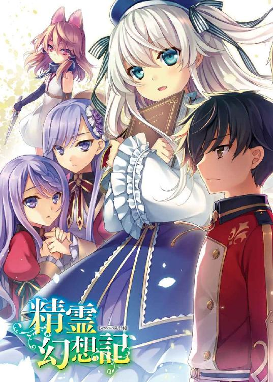
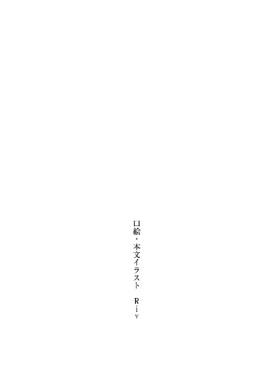
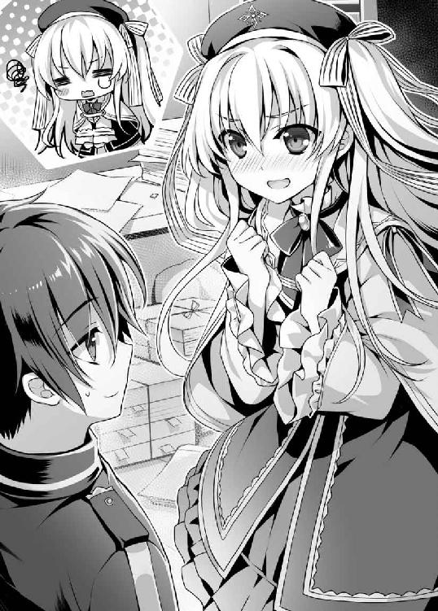
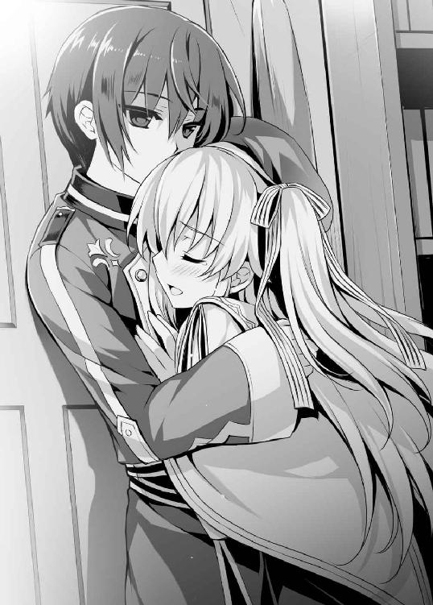

| 精霊幻想記 1.偽りの王国 (ＨＪ文庫) | |
| 北山結莉 | |
| (2015) | |



プロローグ
地球ではない何処か遠い世界で。
少年は知っていた。
腐りきったこの世に救いなどない。
強い者が搾取し、弱い者が搾取される。
それがこの世界の不条理なルールだと。
残飯を漁り、物乞いをして、暴力を振るわれ、犯罪の片棒を担がされる毎日。
奴隷のように酷使され続け、少年の精神はとっくにすり減っていた。
だが、それでも少年は渇望せずにはいられなかった。生きたい。生きて殺さなければならない男がいる。そのためなら泥水だってすすってみせる。
そんな願いに縋って――。
薄暗い小屋の中。
窓から入り込む朝日が薄っすらと室内を照らしている。
小屋の中には錆びた鉄のような臭いが充満していた。
死体が転がり、血で濡れている床、部屋の隅に一つの袋が置かれている。
そう、ちょうど小さな子供が入りそうな――。
「んー！ ん、んんー！」
袋がもぞもぞと動いて、中からくぐもった声が聞こえてきた。
胸の動悸が治まらない。
身体を震わせてじっと息を殺すと、少年は袋に近づいておそるおそる紐をほどいた。
するすると音をたてて袋の口が開放される。果たして、そこにいたのは神官服に似た美しいドレスを着た実に可愛らしい女の子だった。
薄紫色のゆるやかな長い髪に、紫の瞳をした幼い少女。
――ああ、やっぱり。
少年は知っていたのだ。
こんな世界に――。
救いはないと。
第一章 前世
場所は日本。それはもう何年も昔の話だ。
燦々と降り注ぐ夏の日差しが、じりじりとアスファルトを照らす日のこと。
とある住宅街で、少年と少女が悲しい別れを迎えた。
「ハルくん、行っちゃやだよぉ！」
一台の引っ越し用トラックが止まっている傍らで、一人の少女が泣きながら少年に縋っていた。彼女の名前は綾瀬美春。この頃はまだ七歳の少女であった。
「みーちゃん、泣くなよ。きっとまた会えるから、な？」
泣き止まない少女に抱き着かれ、少年が気丈に語りかける。
少年の名は天川春人。彼も当時はまだ七歳の子供だった。
これから春人は父と二人で遠い田舎に行かなければならない。
次に美春といつ会えるかは不明だ。当面この地に帰ってくる予定はないのだから。
春人の両親は離婚するのだ。母と妹は一緒にこの街に残って暮らすようだが、既に春人達が暮らしていた賃貸マンションは引き払ってある。
春人の父と美春の両親がいたたまれない表情で遠くから二人を眺めていた。
「やだよ、行かないでよ。ハルくん！」
泣きながら行かないでと懇願する美春に、思わず春人も泣きたくなってしまう。だが、泣くわけにはいかなかった。美春の前で弱いところは絶対に見せたくないから。
だから、「大丈夫だよ」とか、「また会えるから」とか、何の根拠もなく必死に強がり、美春を泣き止ませようとした。本当は悔しくて虚しくて、自分も泣きわめきたかったのに。
春人は美春が大好きだ。美春も春人が大好きだ。
二人の出会いは運命か偶然か。お互いの両親がとある新築の賃貸マンションに引っ越し、たまたま部屋が隣同士で、たまたま同じ年の春に生まれた子供がいたおかげで、何となく家族ぐるみの付き合いに発展したことがきっかけだった。
春に生まれたから春人、春に生まれたから美春。春人の両親は共働きだったから、春人は美春の家に預けられることが多かった。
そんな二人は赤ん坊のころからずっと一緒に育ってきた。二人の関係を言い表すのならばまさに『幼馴染』という言葉が相応しいだろう。
だから、物心がついた頃には、二人が惹かれあっていたのは必然だったのかもしれない。
当時は恋とか愛なんて言葉の意味は知らなかったけれど、二人にとってお互いは本当に特別な存在だった。好きになった理由とか、きっかけとか、そんなものは存在しても、しなくても、どっちでもよかった。
ただただ相手のことが大好きだったから、夢中だったから。
「ハルくん、ハルくん。一緒にいてよぉ」
何とかして美春を泣き止ませたい。美春が悲しくなると自分も悲しくなってしまうから。
だが、いっこうに泣き止まず、わんわんと叫びながらしがみついてくる美春に、春人はどうしたらいいのかわからなくなってしまった。
無力な今の自分にいったい何ができるのだろうか。最愛の幼馴染との別れすら防げない自分に――、そう考え、春人はぎゅっと手を握りしめた。
春人は美春と一緒にいられればそれだけで幸せなのだ。
しかし、今の春人ではそれを叶えることはできない。まだ子供だから。
なら、いつかそれを叶えてみせよう。美春とずっと一緒にいて、ずっと美春の隣を歩きたい。だから、その想いを伝えよう。それが今の自分にできる唯一の事だ。
「俺、大きくなったら迎えに行くから！ だから、だからその時は結婚しよう！」
春人は精一杯の勇気を振り絞って、美春に一世一代の告白をした。
「そしたらずっと一緒にいて、ずっと傍にいて、死んでもみーちゃんのことを守るから！」
続けて、春人が叫んだ。どくん、どくん、と心臓の高鳴る鼓動が聞こえる。
「......駄目、かな？」
声を震わせて、春人が尋ねる。
美春はいつの間にか泣き止んでいて、春人の顔をぼーっと見上げていた。
「する。する。ハルくんと結婚する！」
ややあってそう答えると、美春は眩しいくらいに可憐な笑みを浮かべた。
それが嬉しくて、絶対にこの約束を叶えよう、と春人は思った。
どんなに歳月が流れたってかまいやしない。守ろう。この笑顔を守ろう。そう誓って、別れ際に小さくキスをして、春人は美春と別れた。
それは、何の拘束力もない、幼い日の淡く儚い約束だ。
まだ先の未来がどうなるかなんて、まったく知らなかった頃の約束――。
だが、その約束は確かに春人の胸の奥深くに刻まれて、その後の彼の人生を愚直なまでに大きく支えた続けた。
それから、幼い春人は美春と再会することを夢見て、ひたすら前へ前へと努力し続けることを決めた。美春に会いたい。美春に会うためなら立ち止まってなどいられない。何でもいいから努力して、成長すればするだけ再会の時は早まるんだと、そう信じて。
だから、春人は一生懸命に勉学に励み、実家の家事や農業を手伝い、昨今では珍しく厳格な祖父から精神を鍛えろと古流の武術を教わった。
そのおかげか春人は実直で真面目な人間に成長していくことになる。
揺らぐことなく努力し続ける春人の想いが届いたのか、春人はかつて美春と共に暮らしていた街にある有名な進学校に入学することを父に認められた。
結果、春人は入学先の高校で美春と衝撃的な再会を果たすことになる。運命の悪戯か、ただの偶然か、美春も春人と同じ高校に進学していたのだ。別のクラスではあったが、クラス分けの名簿に美春の名があった時は驚きで思わず固まってしまった。
そして、成長した美春の制服姿を見た時は目を奪われて固まった。大きくなっても見間違えるはずがない。遠く、だけど、とっても身近で、ずっと大切な人だったのだから。
背中まで真っ直ぐ伸びた艶やかな黒髪、整った目鼻立ち、雪化粧をしたような白い肌、小柄だがバランスの良いスタイルをしており、どこか控えめそうではあるが、見る者を惹きつけるお淑やかで清楚な雰囲気を持っている。
美春はまさに絵にかいたような美少女に成長していた。
最愛の幼馴染に再会できた運命に歓喜し、どくんと心臓が高鳴るのを、春人は確かに感じた。だが、同時に、強い衝撃も受けた。
美春の隣には春人の知らない少年がいたのだ。
仲睦まじげに自分の知らない少年と話をしている美春を見ていると、春人は何となく気後れしてしまい、入学式の日は美春に声をかけることができなかった。
その日、春人は帰宅してから一人で悩むことになる。
別に美春と再会するだけで、かつての約束が無条件に果たされるはずだと、そうでなければならないと決めつけていたわけではない。
ただ、春人にとって美春との思い出は特別で、美春との約束があったからこそ、春人はここまで迷わずに真っ直ぐ歩いてくることができた。
だから、美春が春人との約束をすっかり忘れていて、もうかつての居場所がなくなったのかと思うと、道を見失ってしまったような錯覚に陥ってしまったのだ。
もう昔のような仲に戻ることはできないのかもしれない。美春には他に好きな人がいるのかもしれない。勝手に夢を見ていた自分が馬鹿なのかもしれない。
けど、それでも、春人は美春と会ってみたいと思った。
明日こそは勇気を出してみようと思った。
なのに――、
美春は春人の前から姿を消してしまった。
入学式の翌日からしばらく欠席が続き、突然、失踪するように退学してしまったのだ。
他にも美春と同じように退学した生徒達がいたことから、校内ではちょっとした騒ぎになったが、学校は個人情報の保護を盾に詳しいことを語ることはしなかった。
当時高校生に過ぎなかった春人では大したこともできず、何の手がかりを得ることもできないまま、時だけが過ぎていき――、春人は忸怩たる想いを抱くようになる。
どうして入学式の日に自分は美春に声をかけなかったのか、と。
あの日、あの時、美春に声をかけていれば、今とは違う未来があったかもしれない。仮定の話ではあるが、そう思わずにはいられなかった。
そうして未練だけが残り、春人の美春に対する想いは拗れたように強くなっていく。
諦められない。諦めたくない。声にならない悲痛な叫びが身体中でこだまする。
何度か異性から告白を受けたことはあったが、美春以外の女性とそういう関係になる未来を想像すると、名状しがたい罪悪感や忌避感が押し寄せてきた。
かといって、美春を捜すために何かができたわけでもなく――。
歩いていくべき道を見失い、春人は少しずつ無気力になっていった。
◇ ◇ ◇
そして、美春が消えてしまった日から四年以上の月日が流れた。
現在、春人は成人を迎え二十歳になり、都内にある大学の二年生になっている。
だが、春人の時計は止まったままだ。大学に通ってはいるが、勉強にはさして身が入らず、やりたいこともなく、ちょっとしたお洒落なカフェでアルバイトをしている。
朝になって目が覚めて、大学に通って、アルバイトをして、帰宅して――代わり映えがせず、毎日を惰性的に過ごす。
傍から見ればありふれた大学生活かもしれないが、それだけの日々。当てもなくさまよい続け、世界は今日も変わらないまま、ただ時間だけが過ぎていく――はずだった。
季節は夏真っ盛り。美春と別れたあの夏の日のように、透き通るような青空に浮かぶ太陽が、地面に敷き詰められたアスファルトの大地を燦々と照らしている。
だが、そんな夏の天気とは対照的に、春人はどこか冷めた顔つきを浮かべながら、大学のキャンパスの近くにある停留所からバスに乗った。
昼下がりという時間帯のせいか、乗っている乗客の数は少ない。ちらほらと客が乗り降りしているが、今、車内には三人――大学生の春人、春人が通う大学の付属高に通う部活帰りと思しき女子生徒、小学生の女の子――しか乗客が乗っていなかった。
時折アナウンスが流れる以外は、エンジン音だけが聞こえる静寂な空間で、バスに揺られながら、春人が流れる景色を眺めている。
（......ん？）
ふと、春人はチラチラと視線を向けられていることに気づいた。視線を感じた先には小学生と思われる女の子が座っている。
（あの子は......遠藤涼音ちゃん、だったか？）
春人はこの女の子に心当たりがあった。以前、彼女が下校中に居眠りをして乗り過ごし、行き先がわからなくなって車内で泣いていたところを家まで送ってあげたのだ。
時折こうして同じバスに乗りあわせると、涼音から視線を向けられている気がしていたことから、何となく印象に残っていたりする。
春人から視線を返されたことに気づいたのか、涼音はあたふたと視線を逸らし俯いた。
（俺、何かした......か？）
考えても思い当たることは何一つない。
当然だ。涼音と喋ったのは彼女を助けてあげた時の一度だけなのだから。その時は家まで送ってあげて、母親からお礼も言われたから、何か問題があったとも思えない。
気のせいかな？――尋ねてみようとは思ったが、仮に勘違いだとしたら、ちょっと危ない人扱いされかねない。最近のご時世は子供の防犯意識も高いのだ。
（バスの中で小学生の女の子に声をかけるとか、どう見ても不審人物だよな？）
うん、やめよう――何となくもどかしい感じはしたが、春人は小さく嘆息すると、涼音から感じる視線を意図的に意識の外に追いやることにした。
「っ！」
すると、その時、突如としてバスが大きく揺れた。
舞い上がる浮遊感、全身に襲い掛かる強い衝撃。春人の身体は吹き飛ばされて、天井に身体を強くぶつけてしまう。
「っ......っは......」
身体中が痛い。呼吸が上手くできない。
全身が熱湯を浴びせられたように熱く、意識が急速に朦朧としていく。黒く薄れゆく視界にひどくひしゃげたバスの内装が映った。
（事故......か？）
意識はひどくぼんやりとしているが、何となくわかった。
自分は死ぬのかもしれない。全身が痛いはずなのに、感覚がなくなってきている。死の足音が近づいているのがよくわかる。すると、春人はとたんに怖くなってしまった。
「ぅぁ......がはっがは」
精一杯の余力を振り絞って口を開こうとしたが、出てきたのは声ではなく大量の血が混じった咳だった。
（みー......ちゃ......）
心の中でかつての美春のあだ名を呼ぼうとする。一筋の涙が春人の目からこぼれて、血だまりに同化した。そこで春人の意識は完全に途切れそうになって、
――はる......。............て。
美しい声が春人の脳内に響いた気がした。
直後、巨大な幾何学文様の陣が光を放ちながら地面に浮かび上がり――。
「次のニュースです。本日、十五時二十三分、東京都、○○区の路上にてバスと中型トラックが衝突する交通事故が発生しました。この事故でバスの乗客三名が死亡、追突したトラックとバスの運転手は重傷を負ったものの奇跡的に一命を取り留めました。事故の原因はトラックの運転手による居眠り運転ではないかと――」
第二章 異世界
時は神聖暦九八九年。
ユーフィリア大陸西部のシュトラール地方、ベルトラム王国の王都ベルトラント。
そこに小さな家で慎ましやかながらも仲良く暮らす母子がいた。母は非常に美しく可愛らしい女性で、息子も母に似たのか中性的で可愛らしい顔をした少年である。
それはうららかな春の日差しが降り注ぐある日のことだった。
「ねぇ、母さん。どうして僕と母さんの髪は黒いの？ 僕達だけ周りの人と色が違うよ」
と、朽葉色の瞳で母の顔を覗きこみ、少年が尋ねた。
二人が暮らす王都には黒髪の人間をまったく見かけない。それゆえ、二人の髪の色は近所でも珍しがられていた。母は少し困った顔を浮かべると、
「それはね、リオ。私と貴方のお父さんが遠い場所からやって来たから、かな？」
ややあって、そう答えた。
「遠い場所に住んでいる人はみんな髪が黒いの？」
「ええ、そうよ、あなたと私だけじゃない。貴方のお父さんの髪も黒かったし、お爺ちゃんやお婆ちゃんの髪も黒かったわ」
リオと呼ばれた少年が不思議そうに訊くと、母が柔らかく微笑んで語る。
リオはそれが嬉しくて、無邪気に微笑み返した。まだ五歳になったばかりのリオには母がすべてだったのだ。
「へー、僕、いつかお爺ちゃんやお婆ちゃんと会ってみたいなぁ」
「......そうね。貴方が大きくなったら、連れて行ってあげるわ。ヤグモ地方っていうのよ」
少し困ったように笑みを浮かべ直すと、母がそう言った。
「本当？ 約束だよ？」
「うん、約束ね」
◇ ◇ ◇
二年後、神聖暦九九一年、初春。
ベルトラム王国の王都ベルトラントのスラム街に暮らす孤児の少年がいた。
暗くて、肌寒くて、乾燥していて、薄汚い木の小屋の隅っこで、逃れられない悪夢に苛まれているかのように、少年が呻きながら床に寝転がっている。
「はぁ、はぁ......」
頬を赤くして、少年は荒々しく息を吐き続けていた。身に着けている粗末なボロ布の服はおびただしい汗で濡れている。一目見れば発熱しているのは明らかだ。
粗末な小屋の中には複数の人間が暮らしている形跡があるが、現在、少年のことを看病する者は誰もいない。この少年はどれほどの間こうして一人で眠っていたのだろうか。
少年は冷たい木の床の上に薄い布を一枚だけまとって寝転がっているため、このまま放置していたら下手をすると死んでもおかしくはないように思えた――の、だが。
ある時、少年の身体を覆うように、ぽかぽかと優しい光が灯り始める。
先ほどまで少年を苛んでいた息苦しい熱さとは違う。それは温かくて、思わず身を委ねたくなるような心地よい感覚だった。
少年の顔色がみるみる良くなり始める。やがて呼吸も安定し始めた。何故か少年の身体を襲っていた熱が引いたのだ。すると、少年を覆っていた光もフッと消え去る。
「ん......」
ややあって少年が薄っすらと目を見開く。仰向けの状態で瞬きをしてから、ゆっくりと視線を動かすが、視界に映るのは薄暗い木製の天井だけである。
まだ意識は靄がかかったようにおぼろで、まともに思考する余裕がない。熱は引いたが、つい先ほどまで衰弱しきっていたから、気力や体力までは回復していないようだ。
強い倦怠感に襲われながら、少年が呆然と天井を見上げる。
何とか簡単に思考できる程度に意識が回復してくると、自分が今どんな状況に置かれているのかを知りたくなった。まだ少し気だるい身体に鞭を打って半身を起こす。
「つっ......」
風邪をひいていたからか、それとも硬い床の上で眠っていたせいか、身体の節々に鈍い痛みを感じて、少年が顔をしかめる。
周囲に視線を走らせると、陰気な部屋の中央に粗末な家具が置かれていることを知った。
（ここは......）
見覚えがある部屋だと、少年は思った。
だが、同時に形容しがたい違和感を覚えていた。この部屋でずっと暮らしていたという既視感があるのに、初めて見たような気もするのだ。
ありえないのに、まるで二人分の認識を共有しているような――。
何かがあべこべで、どうもしっくりとこない。というよりは、どこか記憶がはっきりとしない。少年はぼんやりと部屋の中を見渡した。
すると、饐えた臭いがつんと鼻を刺激する。ほぼ同時に自分の身体を包むボロい衣類が汗でびっしょりと濡れていることに気づいて、不快そうに眉をひそめた。
だが、おかげで脳が刺激されて、意識が覚醒し始める。少年は深く息をつくと、ドサリと地面に背中を預けて寝転がった。もう少し横になっていたい気分だった。
少年が目を覆うように手を当てる。だが、次の瞬間、ハッとしたように自分の手を凝視し始めた。その手は確かに自分の手だ。七歳の子供の小さな手である。
だが、おかしい。何かがおかしいのだ。
妙な頭痛に耐えながら、少年がボヤけた思考回路で思案する。
（子供の......手？ 俺は......。いや、俺は？）
リオ――それが少年の名前だ。
ベルトラム王国の王都にあるスラム街に暮らす孤児で、ある男に復讐することだけを目標に、今日まで泥水をすするように生きてきた。
それが自分という、リオという人間のはずなのに――。
だというのに、どうしてもう一人の自分の記憶があるのだろう？ まったく見知らぬ文明が発達した世界で暮らしていた人間の記憶が――。
断続的に様々な記憶の光景が脳内でフラッシュバックする。それらは七歳にすぎないリオが無意識に作り出した妄想とは思えないくらいにリアリティがあった。
今の自分とはまったく違う世界で生きていた天川春人という人間の人生――、その記憶によれば、自分はとある大学に通う二十歳の青年だった。いや、今もなお少年――リオにはその認識がある。そう、まるでつい先ほどの出来事のように感じられるのだ。
得体の知れない薄気味悪さを覚えて、リオは力強く首を左右に振った。
（何を考えているんだ、俺は？ 天川春人？）
重複する記憶に混乱する。
リオは現実逃避するように、愕然と自分の両手を見つめた。
それは飽食の時代である日本に暮らす子供のように綺麗な肌ではない。栄養失調で細くなりすぎており、乾燥して荒れており、しかも垢で薄汚れている。
当然だ。
孤児としての自分の記憶によると、ずっと風呂になんて入っていないのだから。
（マジかよ......）
あまりの不潔さに、リオは顔を引きつらせた。
着ているのは麻製のゴワゴワしたボロい服だけ、最後に水洗いしたのはいつだったろうか。靴下や靴なんて上等なものはもちろんはいているはずもない。
それでも衣類を身につけているだけ感謝するべきだろうか。ぼさぼさに伸びきった髪は傷んでいるが、黒い色であることはわかる。
「......すぅ、はぁ」
とりあえず深呼吸をして、心を落ちつかせると、リオは自らの記憶と状況を整理してみることにした。口許に手を当て考え込む仕草をとる。
自分はリオ、そして天川春人という大学生でもあった――はずだ。このベルトラム王国で生きてきた七年間の記憶、そして日本人として生きてきた二十年間の記憶がある。
だが、記憶は重複しているが、今のリオは天川春人ではない。
天川春人であるなら、今の自分が子供であるはずがないのだ。それに、こんな場所にいるはずがない。記憶が正しければ天川春人が生きているとは思えないのだから。
「記憶の中の俺はバスに乗っていて死んだ......んだよな？」
バスに乗車していると強い衝撃に襲われて、全身がバラバラになるような痛みを感じたことは覚えている。どうなったかはまったく思い出せないが、生還したとは考えにくい。
「じゃあ今の俺はなんだ？ これは夢？ 死後の世界？ 生まれ変わった？」
思いついた可能性を口にしてみる。
だが、この妙に生々しい現実感からして、今起きている出来事が夢であるとは思えない。
それにここが死後の世界――天国とか地獄だとも思えなかった。いや、限りなく地獄に近い環境に置かれてはいるが。
となると、自分は生まれ変わったのだろうかと、リオは懐疑的に思った。
そんな夢みたいな話があるのか？ そもそも本当に天川春人という人間は存在したのか？ この脳に宿る記憶は本物なのか？
しかし、考えたところで答えなど出るはずがないし、誰かが答えを教えてくれるはずもない。わかることは今の自分がリオであって、天川春人ではないということだけだ。
記憶や人格に関していえば、当初こそ混乱していたが、時間が経つにつれて天川春人のそれらが今のリオに融合して一つの自我を形成していた。
二人分の記憶と人格が表に出てきてはいるが、矛盾することなく混ざり合っているとでもいえばいいのだろうか。
人生経験が長い分だけ天川春人のそれが色濃く現われてはいるが、リオは天川春人であることを、天川春人はリオであることを、自然と受け入れることができている。
だから、お互いの記憶を自分の体験として知覚することができているし、発狂するようなこともない。深く考えると違和感が湧いてくるが、何とも不思議な感覚である。
だが、それよりも今問題なのは――。
ぐぅ、と室内に大きな空腹音が鳴り響いた。
すると、とたんにひどく腹が減ったような気がしてくるから滅入ってしまう。
空腹感からくる軽い貧血を覚え、リオはげんなりと嘆息した。
自分の前世の記憶が本物なのか、本物だとしてどうして生まれ変わったのか、どうして今になって記憶を取り戻したのか、気になることは色々とある。
しかし、考えても答えが出ないことはわかりきっているため、リオは今の自分が置かれている危機的な状況をどう打開するべきかに思考をシフトさせた。
こうして冷静に物事を考えることができているのは天川春人の記憶と人格が戻ったことが大きい。リオがリオのままであったならば、これから先の将来に対する何のビジョンも持たぬまま、孤児としてのたれ死ぬ未来が待ち受けていたことだろう。
それは最悪の未来だ。リオには生きて果たさねばならない目的があるのだから、こんな場所で死ぬわけにはいかない。
（死んだら、あの男を......）
毎日のように憎しみを抱いてきた男の存在を思い出し、リオはぎりと歯を食いしばる。
リオは生まれてすぐに父親を亡くし、物心がついてから間もなく母親を殺され、以来このゴミ溜めのようなスラム街で暮らしてきた。
リオの両親は遠い異国からの移民であり、冒険者として二人で旅をしながら生計を立ててきた。だが、腹の中にリオを身ごもると、母アヤメは一時的に冒険者業から手を引くことになる。当然のごとく稼ぎはリオの父ゼンに頼ることになったが、腕利きの冒険者であったゼンはリオが生まれて間もなく死亡したらしい。
それでもアヤメは健気にリオを育て続けた。蓄えを切り詰めれば、子育てをしながらでも慎ましやかに生きてくことはできたのだ。
しかし、二人の平穏な生活はリオが五歳の時に終わりを迎える。
アヤメは異国情緒あふれる美人であった。リオという子供はいたが、周囲の男から下卑た視線を送られるくらいには若々しかった。
だから、未だ幼いリオという弱点を抱えていたアヤメは、あっさりと周囲の悪意に呑みこまれ、リオの前で惨殺されることになったのだ。
その時のことをリオは鮮明に覚えており、以来、母を殺した人物に復讐することだけを考え生きながらえてきた。
その使命感は天川春人の記憶が戻った今でもリオの心の中に強く刻み込まれているが、今のリオは天川春人という人間の価値観も持ち合わせている。
確かに母アヤメの仇は憎いが、復讐は許されざる悪なのではないかと、自分の中にある天川春人の価値観が忌避感を抱いているのだ。
だが、リオのリオとしての価値観は復讐への想いを強く燃やしており、あの男の存在を思い出すだけでどす黒い感情が湧き起こってくる。
（復讐が悪？ 何を綺麗ごとを......）
自らの中で渦巻く相反する感情に舌打ちをして、リオが顔をしかめた――その時のことだ。小屋の扉が乱雑に開け放たれた。
疲弊した身体を酷使して身を起こし、リオが視線を扉に向ける。
すると、数人の男と一人の女がぞろぞろと小屋の中に入ってきた。
「んん？ 何だ、リオ、てめぇ目が覚めたのかよ」
薄暗い小屋の中に一人でいたリオを発見すると、先頭で入ってきた男が言った。リオはこの男のことを知っている。
「てか、生きてたのな。死んだかと思ったぜ。兄貴、リオの奴、生きてますぜ。あの様子じゃ死ぬんじゃないかと思ってましたが」
男は意外そうに目を丸くすると、背後にいた巨漢に語りかけた。
「はっ、悪運の強いガキじゃねぇか。昨日は熱でフラフラしていやがったくせに。寝てたら捨ててやるところだった」
兄貴と呼ばれた巨漢が感心したふうに言う。
「......はい。なんとか」
リオは思わず顔をしかめそうなったのを堪えて返事をした。
この男達はスラム街で幅を利かせている何でも屋グループだ。無法者染みた活動をして金を稼いだり、依頼されて悪事に手を染めたりと、本当に何でもやる。
人身売買、禁制品の販売、暗殺、窃盗、詐欺、恐喝、盗品の処分・運搬など、彼らが手を染めた犯罪は枚挙に遑がない。
スラム街の孤児はこの男達のような存在からすれば使い勝手のいい捨て駒になることから、適当に拾われて適当に使い捨てられることが多かった。
リオもそうした男達に拾われて利用されている口で、彼らと一緒にこの小屋の中で暮らし、寝ても覚めても男達からの理不尽な扱いに怯えながら日々を過ごしている。
時にはストレスのはけ口として殴られ、男達が行う犯罪の片棒を担がされ、犯行がバレて逃走する時にスケープゴートとして囮にされたこともあった。
もはや奴隷と何の変わりもない。だが、それでも彼らに依存しなければ生きていけないのだから、理不尽な世界である。
リオは彼らに付き従い、文字通り死にもの狂いになって今日まで生き延びてきた。
「てか、寒いっすね。祝杯をあげて身体を温めましょうや」
舎弟の男が言って、中央に設置されている粗末な木製の机に食料と酒をドカッと置いた。
「そうだな。おい、ソレは部屋の隅に置いておけ。薬で眠っているようだが、起こすなよ」
リーダー格の男に指示され、舎弟の一人が「へい」と答え、何らかの戦利品が入っていると思われる袋を床の上に置いた。
それから、男達は上機嫌な様子で連れ合いの女に酌をさせ、食事をとり始める。
「それにしても金貨十枚は美味しかったですねぇ。兄貴」
とある舎弟の男がへらへらと笑いながら言った。
「ふん、ただの荷運びで金貨十枚だ。碌な荷じゃねぇだろ。中身はただの奴隷と思えんが、おおかた貴族のガキでも入ってるんじゃねぇのか」
「ちょっと、何よ。また危険なことをしているんじゃないでしょうね」
酌をしていた女が怪訝そうな顔で尋ねた。
「まぁな」
リーダー格の巨漢が女を抱き寄せ、不敵な笑みを浮かべて鼻を鳴らす。
「それにしたって小遣い稼ぎの依頼で金貨十枚は美味しすぎですぜ」
「ああ」
巨漢はぐいっと酒を飲んでから、手にしていた肉を豪快に食いちぎった。その様子を見て、リオがごくりと唾を呑む。
話の内容は物騒だが、今のリオは彼らが口にしている食べ物の方が気になって仕方がなかった。碌な仕事じゃないのは明らかであるが、手伝いをすれば少しはリオもおこぼれに与かれたはずだったのだ。
だが、今回は病気で寝込んでいたリオに食事が与えられる可能性は低いだろう。男達が気まぐれでも起こさない限り――。
現在までの男達とリオの関係はいたってシンプルである。
強者と弱者、利用する者と利用される者。
利用価値がある間は養ってもらえるが、なくなれば容赦なく捨てられる。実際にそうして捨てられてきた子供をリオは何人も見てきた。
今後いつまでもこの関係を続けるつもりはないが、今のリオは七歳の子供にすぎない。
何の当てもなく飛び出して弱肉強食のスラムで生きていけるとは思えなかった。
とはいえ、食事の匂いに空腹を刺激されて、
（お腹が減った......）
今はそれがすべてで、考える気力すら湧かない。
男達の会話をぼんやりと聞き流しながら、リオは小屋の端の壁にもたれかかって、気だるい身体を休ませることにした。すると、
「おーい、リオ、リオ」
舎弟の一人がリオに声をかけてきた。
「はい」
「おめぇ寝汗で変な臭いがすんぞ。身体洗ってこい。飯と酒が不味くなる」
「......はい」
もしかしたら食事をくれるのかと期待したが、淡い幻想だったようだ。
舎弟の男は鼻をつまみながら、シッシとリオを追い払うそぶりをしている。どうやら自分が認識している以上に、リオは寝汗で体臭がひどくなっているらしい。
「すみません」
小さく頭を下げ、リオはよろめきながら立ち上がった。天川春人としてはこの男のことを全く知らないのに、リオとしてはこの男のことをよく知っているのだから不思議だ。
ふらふらと歩いて、リオが小屋の扉へと向かう。
「リオ、体調が回復しなかったら奴隷として売り払っちまうぞ。てめぇ、悪運とツラだけはいいから高く売れるかもな」
既に酔い始めているのか、リーダー格の男が愉快そうに笑いながらリオに語りかけた。
何が可笑しいのか、ゲラゲラと舎弟達の笑い声が鳴り響く。
「もう、子供には優しくしなさいよね」
酌をしていた女が呆れがちにたしなめていたが、リオは振り返ることもなく、歩を進めて小屋の外に出た。リオが扉を閉めると、
「リオ」
すぐに扉が開いて、酌をしていた女が出てきた。名前を呼ばれて、リオが振り返る。
「これで朝ご飯を食べてきなさい。固いパンと具のないスープくらい食べられるでしょ」
そう言って、女がリオに小銅貨三枚を握らせる。この女はリーダー格の男が贔屓にしている娼婦だ。リオとも顔見知りで、こうして世話を焼いてくれることが何度かあった。
「......ありがとうございます、ジジさん。いいんですか？」
「もうちょっと大きくなった時に稼いだお金で私と遊んでくれればいいわよ」
リオが礼を言うと、ジジと呼ばれた女が優しく微笑んだ。
「はは......」
リオが困ったように笑う。
「冗談よ。前に言ったけど、あんたと同じくらいの姪がいるから、放っておけないだけ。もうすぐこの仕事も辞めちゃうし」
言って、ジジはひょいと肩をすくめた。
「妹のアンジェラさんとお店を開くんですよね。いつかそのお店に通いますね」
と、リオが柔らかく微笑んで言った。
以前リオはジジから話を聞いたことがある。ジジとその妹であるアンジェラは娼婦として働いたお金を貯めており、いつか店を開くのだと。
その話を覚えていたため、リオはいつか恩を返そうと思い、話題を振ってみたのだが、
「何かあんた雰囲気変わった？」
と、ジジが目を丸くして訊いてきた。
「いや、どうでしょう。よくわかんないですけど......」
リオがドキリとして、少しぎこちなく首を傾げてみせる。
「あんた、そんな顔もできたのね。せっかく面は良いんだから、いつもみたいにムスッとしてない方がいいわよ」
「えっと、はい。そうしてみます」
ご機嫌な様子のジジに、リオがおずおずと首肯する。
「ま、いいわ。行きなさい。無駄話していると怒られちゃうから」
「はい。ありがとうございました」
去り際に深く頭を下げると、リオはその場を後にした。
◇ ◇ ◇
時刻はまだ早朝だ。
粗雑な木の家が乱雑に立ち並ぶスラム街は独特の淀んだ空気が漂っているが、それでも降り注ぐ朝の日差しと空気を感じると、少しだけ気分が落ち着く気がする。
男達からは身体を流してこいと言われたが、スラム街に水浴び場なんて上等な施設はない。身体を洗うならスラム街を出て井戸がある場所まで出向く必要があった。
王都ベルトラントは王城を囲うように城壁で複数のブロックに分けられおり、城壁の中に入るには通行税を支払って、通行許可を与えられる必要がある。
当然と言うべきか、城壁の内部の方が暮らしは豊かで治安も良く、城壁の内部に住むことができるのは一定以上の資力を持つ者達だけだ。
そして、王城に近ければ近いほどに裕福であることを示す証となる。
他方で、城壁の外にある区域は完全に出入りが自由だ。城壁の中には住めない人々が暮らしており、治安は悪いが城壁内部とは異なった発展を見せている。
スラム街は城壁外のはずれに位置し、もちろん出入りは自由だが、治安が悪い城壁外部の中でも最も治安が悪い区域だった。
国が管理を放棄して権力が及ばない一種の無法地帯となっており、スラム街で暮らさざるをえない者や一部の例外を除いて、好んで入ろうとする者は基本的にいない。
リオはスラム街を出て井戸がある近くの区域まで行くと、手早く身体と衣類を水で洗い流すことにした。時間帯が早いせいか、出歩いている人の数はそれほど多くない。
おかげで悠々と井戸を使用することができた。もちろん石鹸なんて上等な物はないし、温かいお湯なんて出ないが、我慢するしかない。
そうして身体を洗い流すと、帰り際に屋台に立ち寄り、安くて固いパンと具がほとんど溶け込んだスープを腹の中にかき込んで、リオはスラム街の入り口付近へと戻ってきた。
日差しが当たる適当な場所を見つけると、衣類が渇くまでじっと地べたにうずくまって座ることにする。
季節は初春。半裸で過ごすには少しばかり寒い時期だ。しかもリオは病み上がりである。だが、スラム街での暮らしに慣れていることから、我慢できないほどではなかった。
スラム街の隣には娼館街が隣接しており、夜が明けたせいか、春を売っていた女や春を買っていた男達がそれぞれ帰路についているようだ。
とはいえ娼館街からスラム街に帰宅してくる者はほとんどいない。やって来るのは一山当てて羽振りの良くなっている小悪党くらいである。
特に興味もないため、リオはじっとしたまま今後の暮らしについて考えていた。
正直、あの男達と今後も一緒に暮らし続ける気がリオにはなかった。あの小屋にいてもいずれ使い潰される未来しか待っていないことは明白だから。
とはいえ、何の見通しもないまま、孤児のリオが一人で生きていけるほどにこの世界は優しくできていない。スラム街に暮らす孤児には、残飯をあさるか、盗みを働くか、リオのように粗暴な連中にこき使われるか、それくらいしか生きる術はないのだから。
（盗みは論外だし、できれば何らかの仕事に就きたいところだけど......）
望みは薄いだろうなと、リオは考える。
この厳しい社会で孤児を雇ってくれる人がそう簡単に見つかるわけがない。ただでさえスラムに暮らす孤児は窃盗の常習犯として市場等では警戒されている。
職を見つけることが簡単にできれば孤児など存在しないはずだし、仮に見つかったとしても足元を見られてべらぼうに安い賃金で働かされることだろう。
ならば、自分にできることは何があるだろうと、リオは役立ちそうな自分の特技を思い浮かべる。特技といえば前世で身に着けたものが大半だ。
大学生レベルの教養、一人暮らしで鍛えた日常生活の家事スキル、あとは実家生活やアルバイトで培ったその他諸々の技能――。こういった特技を活用する方法を頭の中で模索するが、社会的身分もコネもない現状では、それらを活かすことすら非常に厳しい。
となると、真っ当ではない手段が選択肢として上がってくるのだが、リオは、いや、リオの中にいる天川春人という自分は犯罪行為に忌避感を抱いている。それはかつてのリオのままであったならばとっくに捨て去っていたはずの甘さであった。
だが、今更盗みを始めとする犯罪行為を忌避したところで、リオは自分を使役している男達に何度も犯罪の片棒を担がされている。そう考えると既に自分の手が汚れているのだという実感が湧いてきて、罪悪感が押し寄せてきた。
もうとっくに手遅れか――リオは口許に自嘲を浮かべると、眉をひそめて自分の両手をじっと見つめた。すると、その時のことだ。
「おい、そこの......少女か？」
リオは声をかけられた。凛々しい女性の声だ。声に反応して顔を上げると、そこには年代がバラバラの四人が立っていた。それぞれ小綺麗なローブを着て、顔も身体も覆い隠しているため、リオに声をかけた人物以外の性別はわからない。
ただ、体格からして、リオに声をかけた女性がこの中では一番年長のように思える。その若々しい声色からして年齢は二十には届いていないはずだ。
女性の背後には、十代前半くらいの身長をした小柄な人物が一人と、明らかにリオと同年代と思われる小さな子供が二人控えている。
どうやら声をかけた女性はリオの性別を測りかねているようだ。もともとリオは中性的な顔つきをしているが、今は髪がぼさぼさに伸びきっているため、少女と見間違えてもさほどおかしくはない。
「臭い......」
小さな子供の一人が不快そうにぼそりと呟いた。
その声色からして性別は少女であろう。綺麗で可愛らしい声だが、発言の内容はだいぶ辛辣というか、歯に衣着せない物言いである。
「あまり臭いを嗅がれない方がよろしいですわ。お身体に悪うございます」
もう一人の小さな子供が言った。こちらも女の子のようだ。
（好き勝手言ってくれるな......）
少なからずショックを受けて、リオが思わず顔をしかめそうになる。確かに自覚はあるが、これでも身体を洗ったばかりなのだ。
リオが少女二人へと視線を向ける。フードで顔を覆われているが、見下すような類の視線を遠慮なく向けられていることを察した。
一方で、少女達の隣にいる小柄な人物も、フードの中からリオをじっと観察しているのが何となくわかる。もっとも、こちらはこれといった悪感情は抱いていないようだが。
「おい、話を聞いているのか？ ひょっとして言葉すら理解できないのではあるまいな？」
年長の女性が険しい声で尋ねた。何故か焦れて殺気立っているように思える。
「聞いていますけど、何か？」
リオが冷たい声で返事をする。その目は油断なく四人を観察していた。
彼女達はスラム街に暮らしている人間にしては衣類が綺麗すぎる。声をかけてきた年長の女の腰にはローブの隙間からちらりと高そうな剣の柄が覗けた。
いったいスラム街の孤児相手に何の用だろうか。まさか物取りを働こうとしているようには見えないが、リオは少しだけ警戒の度合いを強めていた。
「薄紫色の髪をした少女を見なかったか？ 年齢はお前と同じくらいだ」
女性がリオに質問を投げかける。少し高圧的というか、上から目線で、相手が答えるのが当然といった命令的な口調だ。どうやら人捜しをしているらしい。
別に腹が立ったわけではなかったが、リオはわざわざ丁寧に教えてやろうとも思わなかった。そもそもこの女性が言う少女に心当たりなどないが。
リオはスッと立ち上がり、億劫そうに四人を一瞥すると、溜息をついて歩き出した。
「おい、待て。質問に答えろ」
ヴァネッサが小さく舌打ちをして、リオを呼び止める。
「さぁ、知りませんよ」
リオは立ち止まり、半身の姿勢で投げやりに答えた。
「正直に話しなさい」「隠すとタメになりませんわよ」
しかし、リオの発言を疑ってでもいるのか、居丈高な口調で女性の背後に控えていた少女二人が言った。リオが思わずムッとする。
「だから――」
「皆様、そんな訊き方じゃ答えてくれないと思いますよ」
リオが改めて知らないと答えようとしたところで、ずっと黙っていた小柄な人物がやや呆れた声で言葉を被せてきた。声色からしてこちらも女の子だろう。
「む、セリア君」
年長の女性がセリアと呼ばれた少女を見やった。
「ここは私に任せてください。ヴァネッサ様」
「そう、だな。君は現役の講師であるし、適任だろう」
ヴァネッサと呼ばれた女性は少しだけ逡巡したようだが、すぐにセリアへとバトンを手渡した。セリアが一歩前に出る。
「ねぇ、君。驚かせてしまってごめんなさいね。お名前は何て言うのかしら？ あ、私の名前はセリアよ」
「......リオ」
セリアが優しく尋ねると、リオがぼそりと答えた。
「リオ？ 珍しい名前ね」
「......移民の子なので」
「そっか。だから髪の色が黒いのね。ところで、リオ。訊きたいことがあるんだけど、教えてくれるかな？」
「いいですけど」
リオがこくりと頷いた。
「薄紫色の髪をした少女を見なかったかしら？ 捜しているんだけど、知らない？」
「さぁ、見ていませんけど......」
と、リオがかぶりを振る。
もう手遅れだと思いますよ――その言葉を付け足すことはしなかった。
スラム街以外の地区に住む子供がスラム街に迷い込んで無事でいるとは思えない。平民が着ているような衣類だって、スラム街に生きる者達にしたら馬鹿にならない値段で売れるのだから。
件の少女がこの四人の知り合いだというのなら、さぞかし良い服を着ているだろうし、おそらくとっくに身ぐるみをはがされているはずだ。運が良ければそれだけで済むかもしれないが、その後は少女趣味の連中が集う娼館に売り払われているかもしれない。
「そっか......」
セリアの声のトーンが落胆したように下がった。
「この先ってスラム街なのよね？」
だが、気を取り直したように息をつくと、そう尋ねた。
「そうですよ」
「この中って広い？ ちょっと入ってみようと思っているんだけど迷うかな？」
「そこそこ広いですし、入り組んでいますけど......、この中に入るんですか？」
リオが小さく目を見開いた。
「ええ、その子を捜しに行かないといけないもの」
セリアが躊躇うことなく首肯する。
「止めた方がいいですよ」
「どうして？」
リオは不思議そうに小首を傾げるセリアの全身を見渡した。
「......服が綺麗すぎて、襲ってくれと言っているようなものです。まだ朝だから人は少ないですけど、それでも出歩いている人間はいる。貴方みたいな女の人が入る場所じゃない」
リオが丁寧に教えてやると、セリアが微妙に驚いたように目を丸くした。
少女の一人が「孤児にしてはそれなりの言葉遣いができますのね」と呟く。
「ああ、なるほどね。やっぱりそんなに治安が悪いんだ」
セリアがそう言って、自分の格好を見渡し苦笑してから、「これでも地味なローブなんだけどなぁ」とひとりごちた。
仮にこの時点で天川春人としての記憶と人格を取り戻していなかったら、リオはセリアに有益な情報を教えようと思わなかっただろう。特に高圧的なヴァネッサや目の前にいる少女二人が相手だったら絶対に忠告しなかったはずである。
勝手にスラム街に入って勝手に野たれ死ねばいい。心の底からそう思っていたはずだ。
だが、リオの中の天川春人という人間はお人よしであった。
少なくともセリアのような最低限の礼儀を持って接してくれる少女が、スラム街の中に入っていくことを止める程度には。
「えっと、スラム街に暮らす女性はどんな服を着ているのかな？」
「どんな服って。平民が着ている服をボロボロにしたような服ですよ。綺麗な服を着ている大人もいますけど、そういう奴らはスラム街で好き勝手している連中ですから」
「なるほどね。参考になるわ」
セリアがふむふむと可愛らしく頷く。
「ところで君は孤児にしては妙に言葉遣いが丁寧じゃない？ 普通の孤児ってそういう喋り方をするの？」
「......どうでしょう？ 死んだ母がこういうふうに喋れって教えてくれたので」
リオが少し硬い声で答えた。
まだ七歳のリオに大した語彙力は備わっていない。とはいえ、舐めた口をきけば男達に殴られてしまうため、これまでのリオは常に人の顔色を窺うような喋り方をしてきた。
そして、もともと母親の言葉遣いが丁寧だったこともあるし、天川春人の人格が戻ったことで精神的に大きな成長を見せたおかげか、今の喋り方はだいぶ大人びたものに変化していたりする。
「ご、ごめんなさい。変なことを訊いちゃったわね」
セリアが慌てて謝罪した。
「いえ、別に......」
あまり感情のこもっていない声でリオが応じる。
「......っ」
リオの瞳孔の奥に、得体の知れない感情を垣間見たのか、セリアが薄く目を見開いた。
「セリア君、ここは一度衣類を替えてから出直そう」
黙って話を聞いていたヴァネッサが言葉を挟んできた。
「何を言っているのよ！ 急がないとあの子が！」
「そうですわ！」
小さな女の子二人が焦燥した声で主張する。
「情報が確かならば、まだ猶予はあるはずです。それに、我々は非正規で動いているのです。下手に動いて正規の捜索部隊の邪魔をするわけにはいきませんし、騒ぎになるのはクリスティーナ様も望むところではないでしょう？」
「......なら早く戻って服を買うわよ」
ヴァネッサの説明に、クリスティーナと呼ばれた少女が不満そうに顔をしかめて言う。
「セリア君、付近に不審な魔力反応はないか？」
「えっと、ちょっと待ってください。《範囲探索魔法》」
セリアは小さく深呼吸すると、リオが聞きなれない言葉を発した。すると、セリアの足元に光を帯びた幾何学文様の陣が浮かび上がる。
（ん？）
直後、リオは妙な違和感を覚えた。何か得体の知れない波動のようなものを感知したのだ。それに、浮かび上がった幾何学文様の陣とは別に、セリアの身体から淡い光の波が放出されたように視えた。
錯覚か？――、そう思い、リオが目を凝らそうとしたところで、
「あら、君......」
セリアがリオの顔をまじまじと見つめてきた。
「この子供がどうかしたのか？」
ヴァネッサが尋ねる。
「《範囲探索魔法》に引っかかりました。一定量以上の魔力に反応するように魔法を行使したので、この子の身体からけっこうな魔力が溢れているみたいです。魔術を使う素質がありますね」
「ああ、なるほど......。孤児にもそういった者がいるのだな」
「こいつが魔力を？」
納得した様子のヴァネッサに対して、クリスティーナが訝しそうに首を傾げている。
「貴族でなくとも魔術を使えるだけの魔力を持っている人間はいますよ。両親にそれほどの魔力がなくとも、先祖返りで多く魔力を持っている人もいますし。まぁ、訓練を受けなければ魔力の感知もできませんし、気づかない人は一生気づかないままでしょうけど」
と、セリアが簡単に説明を行った。
「へぇ......見た目によらないものですわね」
いまだ名も知らぬ少女が感心したふうに呟いた。
「ふむ、なるほどな。とはいえ、しょせんは孤児だし、高が知れていそうなものだが」
ヴァネッサがリオに見定めるような視線を向ける。
（魔術？ 魔力？ 今の変な光の波が魔力なのか？ 俺、今確かに何かを感じたよな？ でも、訓練を受けないと感知できないって......。どういうことだ？）
リオは何が何だかわからない様子で三人の会話を聞いていた。
「それで、不審な魔力反応はなかったのか？」
「っと、半径五十メートル以内にはありませんね。探索に引っかかった魔力反応は私達とこの子だけです」
「そうか......。付きあわせて悪いが、君がいるおかげでスムーズに捜査ができそうだ。《範囲探索魔法》の使い手は希少なうえ、君ほどの探索範囲を誇る魔道士はいないからな」
などと、二人は相変わらずリオにはよくわからない会話を行っていたが、一区切りついたところで、セリアがリオに視線を向けた。
「ありがとね。これ、情報料だから受け取ってくれるかしら？」
そう言って、セリアはリオに大銀貨を五枚も手渡してきた。
硬貨を受け取ると、リオが思わず目を丸くする。今リオが教えた程度の情報で大銀貨五枚は明らかにもらいすぎだからだ。この少女は金銭感覚がおかしいのではないか。
そう思って、リオはセリアを見つめたが、
「えっと、足りない？」
と、そう返事が戻ってきた。
「......いえ」
ややあって、リオが小さくかぶりを振る。もらえる金はもらっておく。今のリオに余裕はないのだ。綺麗事を言って金を返す気にはなれなかった。
「ありがとうございます」
リオが頭を下げてセリアに礼を告げる。
「言っておくけど、口止め料も込みよ。この場で見聞きした話は忘れてちょうだい」
と、セリアが警告するように、少し冷たいトーンで言った。
「わかりました」
リオが即座に頷く。
おそらくだが、この四人は貴族だ。好奇心は猫をも殺す。貴族とは下手に関わるべきではないし、面倒事の匂いもするため、リオとしては首を突っ込む気はさらさらなかった。
「えっと......、ありがとね。丁寧に教えてくれて」
セリアがおずおずと礼を言った。
「......いえ、こちらこそ」
「うん、それじゃあ、ね。頑張りなさい」
孤児であるリオと接したことで、少なからず情でも湧いてしまったのだろうか。セリアはフードの下に微妙に名残惜しそうな顔を浮かべていた。
「では行こうか、セリア君」
「はい」
四人が踵を返して、スラム街の入り口付近から立ち去っていく。
リオは何となくその後ろ姿を眺めていた。じっと目を凝らして見つめていると、何故だか少女達の身体から微量の光が溢れていることに気づく。
ハッとして自分の身体を凝視してみると、やはりセリア達と同じように淡い光が溢れているのが視えた。錯覚なんかじゃない。確かに視えるし、感知できるのだ。
血が全身を満たしているように、この光も全身を満たしている。泉から湧き出る水のように、リオの身体から無尽蔵に淡い光が溢れ出ていた。
あの四人の中だとセリア、クリスティーナ、ヴァネッサ、クリスティーナの従者と思しき少女の順で多く光を放っている。
だが、リオの身体から溢れている光の量は、セリア達と比較しても多すぎだ。
いったいこの光はいつから放出されていたのだろうか、セリア達は気づかなかったのだろうか――そんなことをリオは思ったが、答えはわからない。
（これ、他の人には視られないのか？ 気づかれたら不味くないか？）
慌てて身体から溢れ続ける光を減らそうと意識してみると、案外、簡単に引っ込めることができてしまった。まだ微妙に溢れてはいるが、この程度ならセリア達よりもだいぶ少ないから問題はないだろうと判断し、リオがホッと息をつく。
（この光が魔力......なのか？）
本当に魔力だとしたら、感覚的に何かできそうな気はする。
だが、何の知識もなしに手を出して、取り返しのつかないことになってしまうリスクを考えると、もう少し時と場所を選んで実験を行う必要がありそうだ。
今はあまり帰りが遅くなっても不味いため、リオは一先ず小屋へと戻ることにした。
◇ ◇ ◇
小屋へと戻る道すがら、リオは今後の生活について思考を巡らせていた。
セリアからもらった大銀貨が五枚もあれば、今のリオでも当面の間は生活資金に困ることはないだろう。といっても、定期的な収入が見込めない以上、見切り発車で男達の傍を離れるわけにはいかない。王都のスラム街にいる限りリオに逃げ場はないし、逃げ出したことがバレれば怒りを買って殴り殺されるかもしれないからだ。
一応は温かい食事にありつけたし、懐も温まったため、心なしか体調も気分も良くなった気がする。少しは余裕ができた今、男達の下を離れるかどうか、その後の生活手段や逃走ルートなども考慮に入れて、じっくりと考える時間が欲しかった。
そんなことを考えているうちに、ようやく薄汚い小屋にたどり着く。思わず気分が陰気になってしまい、リオは小さく溜息をついた。
「戻りました」
小さくお辞儀をして、小屋の中へと入る。
男達の気分次第では理不尽に怒鳴られることもある。だが、今日は機嫌が良さそうだったし、お気に入りのジジに酌をさせて酒を飲んでいるため、そういった真似をされることはないだろう。今頃は馬鹿騒ぎでもしているかもしれない。そう思っていたのだが、
（灯りが消えている？）
小屋の中は真っ暗で、しんと静まり返っていた。窓は開いていないし、室内を照らす灯りもついておらず、視界は悪い。
つんと錆びた鉄のような臭いが鼻を刺激して、リオは顔をしかめた。
（なんだ、この臭い？ 血？）
リオの脳裏に浮かびあがったのは血の香りだった。怪我をした時に臭うあの香りだ。
「んん！ んーー！」
すると、小屋の中からくぐもった声が聞こえてくる。音の発信源は部屋の隅からだ。
「......っ！」
突然の声に、リオはびくりと身体を震わせる。
（なんだ？）
もぞもぞ衣擦れの音が聞こえてきた。誰かが眠っているのだろうか。
リオがおそるおそるそちらへ近づいてみようと歩き出した、その時のことだった。
ぬるりと、裸足で歩くリオの足の裏に妙な液体が付着した。どうやら床が濡れているようだ。正体不明の不気味な感触に疑問を抱き、リオは窓を開けることにした。
（窓は......）
頭の中に入っている部屋の構造を頼りに、不快な足の裏の感触を我慢しながら、窓がある方向へと進む。リオは部屋の中で唯一の木製の窓を開放した。
すると、外光が差し込み、室内を薄っすらと照らし始める。
「なっ......」
その場に広がっていた惨状に、リオは思わず言葉を失った。
そこいらに死体が乱れて転がっているのだ。
死体の主達は先ほどまで小屋の中で酒盛りをしていた男達と――、
「ジジ......さん」
娼婦であるジジの死体だった。先ほどリオに食事代をくれた彼女が、胴体から大量の血を流して死んでいたのだ。扇情的なドレスを真っ赤に染めて、仰向けになって倒れている。
「うっ......」
リオは思わず吐き気を覚えた。口を押えて何とか堪える。
「んー！ ん、んんー！」
室内には相変わらずくぐもった声が響いていた。
リオは不快そうに顔をしかめながら、視線をそちらへ向けた。部屋の端に一つの袋が置かれている。おそらくこの袋の中に何らかの生物が入っているのだろう。
（人......？ まさか――）
大きさからして大人は入りそうにない。入るなら子供だ。
リオはひどく嫌な予感を抱いた。胸の動悸が止まらない。身体を震わせてじっと息を殺すと、おそるおそる袋に近づいていく。袋の中身は自己主張するようにうごめいていた。
リオがおずおずと紐をほどくと、するすると音をたてて袋の口が開放される。
果たして、そこにいたのは神官服に似た美しいドレスを着た実に可愛らしい少女だった。薄紫の髪に、紫の瞳をした、リオと歳の近い少女が、ぼんやりと顔を見上げている。
――ああ、やっぱり。
その瞬間、リオは絶望に似た何かを覚えた。脳内で警鐘が鳴り響き続けている。
だが、いつまでもずっとこのままというわけにはいかない。
この場から今すぐにでも逃げ出したい衝動に駆られたが、目の前で怯えた様子の少女を見ていると、妙に気が引けてきた。
「......大丈夫か？」
リオがやむを得ず尋ねると、少女がこくりと頷いた。怯えた眼差しでリオを見つめているが、年齢が近いおかげかそれほど強くは警戒されていないようだ。
袋の中で身体を縛られて寝転がっているおかげか、まだ部屋の中の惨事には気づいていないことが幸いであった。気づいていたらパニックを起こしていたかもしれない。まぁ、この後すぐに気づいてしまうのだろうが。
「今さるぐつわとロープを外す。ちょっと待ってくれ」
そう言って、リオはまず少女のさるぐつわを外してやった。
「ぷはぁ......はぁ」
少女が新鮮な空気を吸い込もうと荒く呼吸する。どうやらだいぶ衰弱しているらしく、どこか熱っぽい顔つきをしていた。
「ど、どこ？ ここ......、どこ......ですか？」
薄暗い室内に怯えているのか、寒いのか、あるいはその両方か、少女が身体をがくがくと震わせながら尋ねる。
「スラム街。俺をこき使っていた連中が暮らしている家だったんだけど......」
少女の身体に結ばれたロープを器用に外しながら、リオが教えた。
「ス、スラム街？ な、なんで？ 私......」
ぼんやりとした顔つきで少女が疑問符を浮かべる。
「さあ？ 外れたよ。もう立てるだろ」
ロープを完全にほどくと、リオが言った。
「は、はい。ありがとうござい......あ、あぅ」
礼を言いながら少女は立ち上がろうとしたが、腰が抜けているのか、体力がないのか、上手く立ち上がれないようだ。半身を起こそうとしたところで、がくんと身体が崩れる。
「大丈夫か？」
リオがバランスを崩した少女を支えると、そっと仰向けにさせてやった。
「は、はい」
首肯したものの、少女の息遣いは荒く、身体は熱を発している。
「そうか......」
リオの声はどこか重く、観察するようにじっと少女の顔を見つめていた。というのも、
（この子、さっきのセリアって人達が捜していた女の子じゃないのか？）
そう、先ほどスラム街で出会った貴族四人組が捜していた少女というのが、まさしくこの女の子なのではないかと考えていたからだ。薄紫色の髪といい、王侯貴族が着るような綺麗なドレスといい、そうとしか思えない。
「あ、あの......」
少女がリオに声をかけてきた。喋るのも精一杯といった感じである。ずっと袋の中にいたせいで、軽い脱水症状でも起こしているのだろうか。
「すみません。私をお城に......連れて行って、くれませんか？」
荒く息をしながら、少女がお願いをした。
「城？」
「お願い......します。父に言って、お礼を......します、から」
「父にって......」
リオが思わず気が引けたような声を出してしまう。確実に面倒事が起きる気がするのだ。
「あと、水を......」
やはり喉が渇いていたのだろう。少女は水を欲した。
「そのまま仰向けになって、少し待っていてくれ。動くなよ」
そう言うと、リオは湯冷ましの水が入っている樽へと足を運んだ。
鼻はもはや利かないくらいに麻痺しているが、いやおうなく視界に入ってくる惨状を目の当たりにして、いたたまれない表情を浮かべる。
絶え間なく襲いかかる吐き気と嫌悪感とは裏腹に、こんな場所で自分は何をしているのだろうと、妙に冷めた思考でぼんやりと考えていた。
普段リオが使っている木のコップに水を入れると、ぐったりと倒れている少女のもとへと足早に戻っていく。
「ほら、水だ。一気に飲むなよ」
少女が水を飲みやすいよう抱きかかえてやると、リオが少女に水の入った木のコップを差し出した。仮に脱水症状であるならば、本当は塩分や糖分を含んだ水分を補給させるのが一番なのだが、そんな上等な飲料水がこの小屋にあるはずがない。
少女はただの水を美味しそうに口にしていた。
「ぷはぁ、はぁ......。けほけほっ」
「落ち着け。一気に飲むと身体に悪い」
少女がむせると、リオが忠告する。
「は、はい......」
朦朧と返事をすると、水分を補給してホッとしたのか、少女の身体から力が抜けた。
「お、おい！」
リオが慌てて声をかけるが、少女はぐったりとしたままだ。
「気絶......したのか？」
そう判断すると、目を瞑り、強く嘆息したい気持ちを抑えて、リオはゆっくりと優しく少女を寝かせてやった。その時のことだ。
古臭い小屋だからだろうか、静寂な室内にぎぃっと木の床がきしむ音がした。
リオがびくりと背後を振り返ると、そこには仮面を着けた男が迫っていて――。
仮面の男はリオの胴へとナイフを突き刺そうとしていた。
殺される。瞬時にそれを察し、リオは心臓が止まりそうなほどの恐怖を覚えた。
だが、反射的に両手を動かすと、ナイフを握った男の手を鮮やかにいなしてしまう。
すると、男の握っていたナイフが見当外れの虚空を突くことになった。
「なっ......」
男の顔を覆う仮面の下から驚愕の声が漏れ出る。
リオも自分の手を唖然と見つめている。前世で天川春人が培った身体の動きを、肉体が本能で再現してくれた。とにかくがむしゃらで、気がついたら身体が反応していたのだ。
だが、今はそんなことに余計な気を取られている場合ではない。
（こいつ、ずっと隠れていたのか？ なんで俺を殺そうとする？）
突然に降りかかった初めての実戦に、リオがパニックを起こしかける。
無理もない。前世でも、今世でも、殺意を持って刃物を向けてくる相手と対峙した経験なんてなかったのだから。
身体が熱く、心臓の鼓動が全身に響き渡っているような気がする。大して動いてもいないのに息切れが止まらない。怖かった。立っているだけで足が震えそうになる。
リオは震える手で構えを取り、じりじりと後ずさりをした。
仮面の男は自分の攻撃を見事に対処されたことを警戒しているのか、ナイフを構えたままじっとリオと向き合っている。
正直、最初の一撃は運が良かっただけだ。男は素人とは思えないし、リオは子供なのだから、本気で殺そうと迫ってくれば戦っても体格差で勝てる道理はない。
男がじわじわと間合いを詰めてくる。
このまま戦っても確実に殺される――リオはそう思った。だが、走って逃げたところで、体格と体力の差からして逃げ切れるはずもない。これじゃ八方ふさがりだ。すると、
（春人）
リオの脳内に、聞きなれない少女の声が響いた。どこか無機質だが、透き通るような綺麗な声だ。だが、その声色は妙に疲弊しているように聞こえる。そして、次の瞬間――、
「っ......？」
リオの目が大きく見開かれた。突然、薄い桃色の髪をしたとんでもない美少女が目の前に現れた気がしたのだ。だが、それは刹那のことで、すぐに少女は見えなくなってしまう。
幻聴、それに、幻影だったのか？――リオはとっさに視線を動かして周囲を見やったが、少女の姿を捉えることは叶わなかった。いや、そもそも少女は自分のことを春人と呼んでなかっただろうか。この世界では誰も知るはずがない名前なのに――。
そうして、何が起きているのかわからず、リオが軽い混乱に陥っていると、
（今は、時間がない。オド――魔力の使い方......教えるから、感覚で、覚えて）
今一度、リオの脳内に幻影の少女と同一人物と思しき少女の声が響いた。
やっぱり聞き間違いなんかじゃない！――、リオはそう思って、
「ま、魔力の使い方って何だよ？」
藁にもすがる気持ちで、謎の声に応じるように叫んだ。目の前にいる男の身体がびくりと震えたのが見えたが、今は構っている余裕などない。
（感覚を研ぎ澄ませて。身体から光が......出ているでしょう。その光を使って貴方の身体能力と、肉体の強度......強くする。そのイメージをして。大丈夫。春人......できる）
と、脳内で途切れ途切れに少女の声が鳴り響く。あまり要領を得ない説明である。しかし、次の瞬間、リオは全身がぽおっと熱に包まれるような感覚を覚えた。
（これで......肉体の限界を超えた動きが、できる。感覚は......覚えた？ これを維持......ごめん、私はもう――）
そこで少女の声がぷつりと途切れる。
だが、リオは自身の身体に起きた変化に驚きを感じていた。体内から溢れる光が急に増えたかと思うと、とたんに身体が軽くなったのだ。
感覚は鋭敏で、視覚や聴覚だけなく、第六感にでも目覚めたのか、本来ならば感じることができない何かすら捉えることができるような気がする。
どうやら謎の声の少女が言った通り、身体から溢れている淡い光を用いて、身体能力と肉体を強化してくれたようだ。半信半疑だったし、理屈は一切わからないが、彼女がサポートしてそれを可能としてくれたことだけはわかる。
おかげでコツは掴めた。今ならこの状態を維持するのはさほど難しくはないし、次からは自分で身体能力と肉体の強化ができるような気がする。
謎の声の少女の正体も、この光が何なのかも、まだまだわからないことだらけだが、今は目の前にいる人殺しに対処するのが最優先だ。
この時点でまだリオが男のナイフをいなしてから十数秒しか経過していない。
じりじりと後退するリオへとゆっくり間合いを詰めていた男であったが、おもむろにリオが立ち止まったため、同じく立ち止まり訝しげに様子を窺っていた。
リオが戦意を込めて、じっと仮面の男を見据える。
すると、男が何か呪文のような単語をつぶやいた。
「《身体能力強化魔法》」
男の身体が光を帯びた幾何学文様の陣によって一瞬だけ包まれる。
リオは小さく目を見開いた。陣が消えると、それまで男の身体から薄っすらと漏れ出ていた淡い光の量が一気に増えたからだ。それでもリオの身体から溢れる光の量には遠く及ばないが、リオは警戒し男を見つめた。
次の瞬間、暗殺者の男が信じられないスピードでリオへと急接近し、常人ではとても反応できない速度でナイフを突きだした。一瞬で勝負を決めるつもりなのだろう。
だが、リオには男の動きが余裕を持って対処できるくらいにゆっくりと見えていた。動体視力や反応速度が上がっている。それを実感し、リオは驚愕した。
リオが半身を横にずらす。すると、男が放てる最速の突きが虚空を貫いた。リーチで劣るリオが一歩前に踏み出し、男の腹部に掌底を叩きこむ。
「ぐぁ、っは？」
腹部に感じた激しい衝撃に、男の口から悲鳴にならない声が漏れ出る。優に八十キロはあろう男の身体が軽く吹き飛ぶ。リオの一撃は子供の攻撃とは思えぬ威力だった。
かろうじて着地したものの、男は意識をもぎ取られそうになってしまう。何が起きたのか理解が追いついていない。片膝をつき、愕然とリオの顔を見つめていた。それでも必死に立ち上がり、ゆっくりとリオに歩み寄ると、男は緩慢な動作でナイフを突きだした。
しかし、リオは男の手首を掴み、捻って関節を痛めつけてしまう。
「がぁっ」
手首に痛みを感じ、男が反射的にナイフを手放す。
リオはそのまま男の体勢を崩し、軽々と地面に投げ飛ばしてしまった。
やはり身体能力が上がっている。それに、軟弱な子供の身体では耐えることができないはずの負荷がリオの肉体にかかっているはずだが、先ほどの少女の言葉通り肉体の強度も上がっているのだろう。身体に負担を感じることがない。
「ぐっ、糞......ガキが......、てめぇ......。何者、だ？」
男は反射的に受身をとったため、意識を失うことはなかった。地面に寝転がり、呻くようにリオに対する恨み節をぼやいている。
「はぁ、はぁ......」
リオは立ち尽くしたまま、荒々しく息を吐いていた。胸の動悸が治まらず、呆然と震えた自分の手を見下ろしている。
しばらくすると、リオは薄暗い闇の中で自分を睨みつけるように見上げてくる男に視線を送った。仮面の隙間から憎悪のこもった視線が覗ける。
何を思ったのか、男はぐらぐらと身体を震わせながら、再び立ち上がろうとした。
（まだ戦おうとするのかよ！）
リオの顔が悲痛に歪む。
男はもう満身創痍のはずだ。立ち上がることができる気力なんか残っていない。
なのに、どうして立ち上がろうとする？――答えは一つ、この男はあくまでもリオを殺すつもりなのだろう。何が男をそこまで駆り立てるのか、リオにはわからない。
わかりたくもない。だが、男が自分を殺そうとするのならば、自分は――。
苛立たしげに息をつき、リオは男をうつ伏せにして床に押しつけた。
「ぐっ......」
男の口から苦しそうな声が漏れ出る。
リオが男の背中に乗っかり、その首へと両手を伸ばし掴んだ。このまま力を入れてやれば男の首を絞め殺すことができるだろう。
だが、手の震えが止まらない。力を入れようとすると、手が震えてしまうのだ。
殺すことができない。殺せない。相手は自分を殺そうとしたのに、リオはこの男のことを殺す覚悟がなかった。リオは数瞬の間、逡巡すると、
「くそっ！」
そう叫んで、男の頭を思いきり地面に叩きつけた。すると、微妙な力で抵抗しようとしていた男ががくりと動かなくなる。
気絶したのだ。それを確認してから、リオは立ち上がり、
「に、逃げないと――」
呆然と呟いた。そして、ふらふらとした足取りで歩き始める。
リオは周囲を警戒するようにびくびくと視線を走らせた。誰かに見られたら今の状況をどう説明すればいいのか。怖くて仕方がなかったのだ。
すると、意識を失ったまま眠っている少女の姿が、リオの視界に映って――。
◇ ◇ ◇
時刻はまだ朝だった。
まともな職に就いている者ならばとっくに働き出しているだろうが、スラム街の住人でまともな仕事に就いている者はほぼいないため、まだ周囲は閑散としている。
リオは意識を失った見知らぬ少女を肩に担いで、足を引きずるようにスラム街を歩いていた。少女が着ているドレスがあまりにも目立ちすぎるため、もともと入っていた袋を破り身体を覆い隠してある。怪我をしているわけではないのに足が重い。
どうしてこんなことになったのだろうか？ なんで自分がこんな目に遭わなければならないのだろうか？ そんな想いは確かに存在するが、理不尽な現実に怒りが湧いてくるような余裕はない。当てもなく、どこに行けばいいのかもわからない。
リオはただひたすら歩き続けていた。そうしていつの間にかスラム街の入り口付近にたどり着いたことに気づく。
「あ、あんた！ 待ちなさい！」
すぐ近くから誰か幼い少女が叫ぶようにリオに声をかけた。
だが、リオは自分に声をかけられたのだと気づかず、呆然と歩き続ける。
「待ちなさいって言っているのよ！」
そう言われて、リオは後ろから無理やり引っ張られる感覚を覚えた。誰かがリオから肩に担がれた少女を離そうとしているようだ。
「ク、クリスティーナ様！ お待ちください！」
「ヴァネッサ、早くフローラを！」
「は、はい！」
声をかけてきた人物は――リオがスラム街の入り口付近で出会った四人組の一人――クリスティーナだった。他の三人も一緒にいる。
前とは打って変わってだいぶ粗末なフード付きのローブで容姿を隠しているが、耳に入ってきた名前や身長的な組み合わせからして間違いない。
クリスティーナは怒りの形相で、フローラと呼ばれた少女をリオの肩から引っ張った。
「おい、貴様、フローラ様を離せ」
ヴァネッサから冷たい声で言われ、リオはフローラを担いでいた手の力を緩めた。
すると、ヴァネッサの手によりリオの肩からフローラが奪われる。
「フローラ！ フローラ！」
クリスティーナがヴァネッサの腕に抱きかかえられたフローラの名を必死に叫ぶ。
「落ち着いてください。気絶しているだけです。セリア君、ロアナ。フローラ様を頼む」
ヴァネッサは冷静にフローラの容体を確かめると、その看護を他の二人に委ねた。
「は、はい！」
「わかりましたわ！」
セリアとロアナと呼ばれた少女が頷き、セリアがフローラを抱きかかえる。リオは感情の希薄な目で他人事のようにその様子を眺めていた。
「おい、貴様！」
ヴァネッサが叫び、リオを睨みつける。
流れるような動作で抜剣すると、リオの首筋に切っ先を突きつけた。
だが、リオに動じた様子はない。それはヴァネッサに殺意をまったく感じなかったからだ。先ほど自分を殺そうとした男とは違う。
とはいえ、冷静な思考で状況を判断しているかというと、そうでもない。どちらかといえば、ひどく関心が薄いとでも言えばいいのだろうか。
「貴様、何があったのか話せ」
ヴァネッサが冷たい声で命じる。
リオはどうでもいいと言わんばかりにゆっくりと踵を返そうとした。だが、
「待ちなさい！」
そう言って、クリスティーナがリオの正面に回り込んだ。
「危険です！」
ヴァネッサが泡を食ったように叫ぶ。
だが、次の瞬間、クリスティーナはヴァネッサの制止を無視して、リオの頬にビンタを叩きつけた。パン、と乾いた音が周囲に響き渡る。
心ここにあらずといった様子のリオであったが、ぶたれたことで正気を取り戻した。
「......えっ？」
リオの口から疑問の声が漏れ出る。
理解できなかった。何故、目の前にいるクリスティーナは怒っているのか。何故、クリスティーナ達が捜していた少女を助けた自分が叩かれたのか。
混乱する中でじわじわと頬の痛みだけが響いてくる。
「黙っていないで答えなさいよ！ あんた嘘ついていたのね。フローラをどうするつもりだったのかしら？」
クリスティーナが決めつけるような口調でリオを糾弾する。
何を言っているのか、本当にわからない。リオは得体の知れない何かが喉にこみ上がってくるのを感じた。
「は？」
リオが底冷えするような声を出して、クリスティーナの瞳を見据える。
「っ......」
クリスティーナがびくりと身体を震わせる。反射的に手を動かし、今一度、リオの頬に平手打ちをくらわせようとした。
しかし、リオも反射的に手を動かし、先んじてクリスティーナの手を掴んだ。
クリスティーナが可愛らしい顔を悔しそうに歪め、逆の手で平手打ちをしようとする。
だが、リオはそちらの手も掴み、両手でクリスティーナを押さえ込んだ。
「放しなさいよ！ 汚い！ 臭い！」
クリスティーナが叫ぶが、リオは手を放さない。すると、
「その手を放せ」
ヴァネッサが再度リオの首筋に剣を突き付け、冷たい声で言ってきた。
リオがヴァネッサをひと睨みしてから、ゆっくりと両手を放す。
案の定と言うべきか、解放されたクリスティーナがリオの頬に思いっきりビンタを叩き込む。リオはその動きを目で捉えながらも、特に防御行為をとることはしなかった。
「はっ」
と、リオが嘲るように笑う。
その笑顔に、クリスティーナがまたしてもびくりと身体を震わせる。
怖いと思ったのだ。リオの笑みにはお姫様として育てられたクリスティーナが初めて向けられる類の感情がこめられていたから。
「クリスティーナ様！ 挑発する真似はおやめください！」
「こいつが悪いのよ！ 不敬罪にするわ！」
「この少年は貴方様が王族だと存じません。事情を訊く必要もあります」
「ならさっさと拘束しなさい！」
クリスティーナが怒鳴ると、ヴァネッサは悩ましげに嘆息した。
「そういうわけだ。少年......リオといったな。城まで同行してもらおうか」
「嫌です」と、リオがきっぱりとかぶりを振る。
「悪いがこれは『お願い』じゃない。『命令』しているんだ。君に拒否権はない」
言って、ヴァネッサが手にした剣をリオの首筋ギリギリの位置に突きつける。あと数ミリでも動かせば、その切っ先が首の薄皮を貫くだろう。
だが、リオは怯むことなくヴァネッサの瞳を見つめていた。
ヴァネッサもリオの瞳をじっと見つめ返す。
クリスティーナ、セリア、ロアナと、外野の三人はピリピリとした場の空気を感じ取り、黙ってその様子を眺めている。五人の間にしばしの沈黙が流れた。
そんな中、
（この少年、本当に子供か？）
ヴァネッサは内心でリオの胆力にある意味で舌を巻いていた。
普通の子供ならとっくに怒りで我を失い怒鳴り散らすか、泣きわめくか、命乞いをしていてもおかしくはない。だというのに、リオは反抗的ではあるが、圧倒的に優位な立場にいるはずのヴァネッサ達を相手に冷静でギリギリのラインを見極めている。
ヴァネッサは背筋に得体の知れない薄気味悪さを感じた。
「俺は気絶していたその女の子を助けただけです。その子が目を覚ましたら訊けばいい」
「駄目だ。貴様が知っていることを貴様の口で話してもらう」
リオの提案を、ヴァネッサがにべもなく拒否する。
これ以上はリオがゴネたところで不毛なやり取りになるだけだろう。ヴァネッサは権力と実力を行使して強制的にリオを城へ連れて行こうとするだけだ。リオはそう判断した。
先ほど身に着けた力を使い、反撃して逃亡するという選択肢がないわけではないが、既に顔は覚えられているし、戦って勝てるかどうかもわからない。
それに、そんな真似をすればリオは本当に犯罪者になってしまいかねない。相手は王侯貴族なのだから。最も短絡的で後先を考えていない悪手だろう。リオは腹をくくった。
「......話をするだけですね？」
「ああ、君の身が潔白であるのなら解放されるはずだ。悪いようにはしない。移動中も簡単に話を聞かせてもらうぞ」
かくして、ただの孤児にすぎなかったリオが、王都の最下層であるスラム街から王都の中心地である王城へと移動することになったのだった。
そして、十数分後。
リオがお城に着いている頃、現場となった小屋の周りには、城から派遣された捜査の人員が押し寄せていた。他にもスラム街の住人が野次馬となりざわめいている。
「アルフレッド様！ 息をしている者を発見しました」
そう言いながら、小屋の扉から王国近衛騎士団の騎士服に身を包んだ男が出てきた。
「拘束して運び出せ。誘拐犯の一味かもしれん」
アルフレッド＝エマール――歳は二十代後半で、騎士服の上に豪華なマントを羽織っている風格のある男――が、指示を出す。
そんな一連のやりとりを野次馬の中に紛れて観察している者がいた。黒いローブで全身を覆っているため、容姿、年齢、性別は窺えない。
その時、小屋の中から一人の男が拘束された状態で搬出されてきた。先ほどリオを襲った者だ。仮面は外され、その素顔が露わになっている。既に意識は取り戻しているようだが、先ほどの戦闘でのダメージが抜けきっていないのか、苦痛で顔を歪めている。
それを目にし、ぼそりと、黒いローブを着た者がつぶやく。
「これは......少し不味い事態になっていますねぇ」
声質からして性別は男だろう。フードの闇に隠れて表情は見えないが、言葉とは裏腹に、男の口調から焦りや動揺はまったく感じられない。
「......仕方ないですね」
小さく嘆息してそう呟くと、男は懐から小さな宝石のような石を取り出した。指で摘んだそれを何の躊躇いもなく握りつぶす。すると、
「っ......ぁ......がはっ」
石が粉々にされた直後に、拘束されて搬送中の男が苦しみだした。びくりと身体が震えると一瞬の間に息絶えてしまう。
「お、おい！」
男に肩を貸していた騎士が慌てて声をかけた。
「どうした？」
「し、死んでいます」
異変に気づいたアルフレッドが尋ねると、騎士が男の容体を確認し事実を伝えた。アルフレッドが「なに？」と、高く眉を吊り上げる。
野次馬の中に紛れた黒いローブの男は、その様子を満足そうに眺め、
「潮時ですね。目的は達成しましたし、帰還するとしますか」
そう言い残し、その場を後にした。
第三章 冤罪
リオはお城の低階層にある取調室に軟禁されることになった。
「少しここで待っていなさい。すぐに取調官が来るから」
そう言って、案内役の兵士が取調室を出て行くと、扉の鍵を閉める音が鳴り響いた。
リオが視線を動かし、ざっと部屋の中を見回す。
どうやらこの取調室には窓が存在しないようだ。部屋の中央に木製の机と椅子が置かれているだけで、実に殺風景な光景が広がっている。
唯一の出入り口となる扉を開けないと外に出ることはできず、鍵は外からかけるように作られているので、一度鍵を閉められると室内は完璧な密室となってしまう。
「あまり信用はされていないみたいだな」
リオは自らが置かれた状況を理解し、面白くなさそうに呟いた。
ちなみに、ヴァネッサ達は案内役の兵士にリオを託すと、フローラを連れて慌ただしく立ち去ってしまっている。
道中、何があったのかは簡単に説明したが、少なくともフローラが目を覚まして事実の確認がとれるまでは、リオを重要参考人として拘置しておくつもりなのだろう。
その間に正式に取調べを行い、記録を残せば時間の無駄もない。実に合理的だ。
お互いの立場や関係を考えれば当然の扱いだろうし、こうして自分を拘置することも理解はできる。だが、正直なところ、あまり面白くはなかった。
こんなことならフローラを助けなければ良かったのではないだろうか。
そうすれば今頃こんな扱いを受けてはいないはずだ。別に悪いことはしていないのに、疑われて、犯罪者みたいに閉じ込められて――。
気絶したフローラを捨て置くことができず、外へ運んであげた結果がこれだ。
この世界は理不尽にできている。強者には優しく、弱者には不条理に作られている。
そんなこと、わかっていたはずなのに――。
リオは苛立ちを吐き出すように嘆息し、粗末な椅子にどかっと腰を下ろした。座り心地はお世辞にも良いとはいえない。両腕を組んでムスッと目を瞑る。情報は何も与えられず、先行きも見えないが、考えたところで事態が好転するわけでもない。
ならば、せいぜいくつろいで待たせてもらうだけだ。そうして心を落ち着けていると、ほどなくして扉が開錠される音が響いた。続けて、すぐに扉が開け放たれる。
現れたのは男が三人。それぞれ王国近衛騎士団の騎士服を着ているが、先頭に立つ男が着ている騎士服には特に豪華な意匠が施されている。
豪華な騎士服を着た男の年齢は二十代後半といったところか。顔立ちは整っているが、どこかキザったらしく、リオを見る目つきには侮蔑の感情が垣間見える。
豪華な騎士服の男はリオを一瞥すると、
「今からいくつか質問をする。貴様の取調べを担当することになった近衛騎士団副団長のシャルル＝アルボーだ。早く解放してほしければ正直に答えろ」
と、居丈高な口調でいきなり命じた。リオが不快そうに眉をひそめる。
シャルル＝アルボーと名乗った騎士はリオの向かい側に置かれた椅子に座ると、
「第二王女殿下を誘拐したのは貴様か？」
何か書類を見ながら、そう尋ねた。リオの心情などお構いなしだ。
書記役を務める騎士がシャルルの隣に座り、供述内容を記録し始める。
残り一人の騎士はリオを威圧するようにすぐ傍で立っていた。
「......違いますけど」
シャルル達の不遜な態度に反感を覚えたのか、リオがぶっきらぼうに答える。
「では、第二王女殿下をどこで発見した？」
「スラム街の小屋の中です。袋の中に閉じ込められていました」
「なぜ貴様がそこにいた？」
「俺を育てていた人達が暮らしていた小屋だからです」
「報告ではそいつらが第二王女殿下を軟禁していたと聞いているが？」
「みたいですね。王女様が入った袋を持って帰ってくる姿は見ました」
などと、淡々と取調べが進行していく。いずれも城へ来るまでの間にヴァネッサ達にも話した情報だ。おそらくシャルルが手にしている書類にそこら辺の情報が整理されていて、取調べをしながら矛盾がないか探りを入れているのだろう。
供述内容の中にはリオにとって不利になりかねない情報もあるが、本格的に調べられればいずれも明らかになる可能性がある。下手に嘘をついて客観的な事実関係との整合性がとれなくなると不味いため、基本的にリオは素直に答えることを決めていた。
「つまり、貴様は第二王女殿下の誘拐に関与していないと？」
「そうです」
訝しげに尋ねるシャルルに、リオは何の迷いもなく首肯した。
「ふん、怪しいもんだな。報告書によれば貴様を飼い殺していたゴロツキ共は正体不明の仮面を着けた男に全員殺されたと書いてあるが、どうして貴様だけ生きている？」
「倒したんです」
「誰がだ？」
「俺がです」
リオが答えると、シャルルは鼻で笑った。
「嘘をつくな。貴様のような小童が賊を倒しただと？ ありえん。相手も何らかの訓練を積んでいるはずだ」
「知りませんよ。油断していたんじゃないですか？ それに、あの時はとにかくガムシャラで、俺も何が何だか......」
リオは身体強化を行った事実は伏せることにした。
「ふん、まぁいい。なら、その男は今どこにいる？」
「さぁ？ 目が覚めて逃げていなければ、小屋の中で死体と一緒に寝転がっていますよ」
リオがややうんざりとした口調で答える。
「今頃その小屋に捜査の手が及んでいる。こちらにも間もなく情報が届くはずだ。貴様の言う通りならその男から情報を引き出せそうなものだが......」
と、シャルルが言った直後、部屋の扉がノックされる音が響いた。
「どうやら来たようだな。おい」
騎士の一人を促し、シャルルが扉を開けさせる。
すると、新たにもう一人の騎士が部屋の中に入って来た。
「失礼します。シャルル様、捜査経過の報告です」
入室した騎士はそう言うと、何やらシャルルに耳打ちし始める。
シャルルはじっとリオを見据え、しばし黙って話を聞いていた。リオも黙って様子を見守っていたが、やがてシャルルが不満そうに顔をしかめた。
それから、ややあって報告を聞き終えたのか、
「......どうやら場所を変える必要がありそうだ。立て」
と、シャルルがリオに命令した。
「どうして場所を変えるんですか？」
「取調べをするからに決まっているだろう」
「ならここでいいじゃないですか」
要領を得ないシャルルの回答に、リオが頭上に疑問符を浮かべた。取調べをするのに取調室から離れる意味がわからない。
「いいから立て！ 時間がないんだ」
シャルルが威圧的な声を出した。すると、他の騎士達がリオの両脇を抱え、無理やり立たせようとする。リオはムッとした表情を浮かべると、
「自分で立ちますよ」
そう言って、素早く立ち上がった。そうして、両脇を抱えている騎士達の手をさりげなく振り払おうとする。だが、騎士達はリオを解放するつもりはないようだ。しっかりと両側から腕をホールドし続けている。
「別に逃げやしませんから、放してくれませんか？」
リオが前に座るシャルルに頼んだ。
「ふむ、そうだな......」
シャルルはおもむろに立ち上がり、リオの前まで歩くと、
「両手を差し出させろ」
と、リオの両腕を拘束している騎士達に命じた。
「承知しました」
騎士達が機敏に返事をして、リオの両腕を無理やり掲げさせる。
「おい、やめろよ！」
リオはとっさに抵抗したが、子供の力では大人に勝てるわけがない。
先ほどの戦闘時のように、肉体の強度と一緒に身体能力を底上げすれば容易く振り払えたのかもしれないが、突然の展開に冷静な対応を行うことはできなかった。
それに、仮にこの場でシャルル達を振り払ったとしたら、公務執行妨害で本当に犯罪者として扱われかねないだろう。となると、リオが冷静だったとしても、身体強化を行い、逃走を図った可能性は低かったのかもしれない。
じたばたと足掻こうとしていたリオであったが、大人達の腕力によって容易く押さえつけられてしまった。それを見計らい、シャルルがサッと手を動かす。
すると、室内にガチャリという音が響いた。
「はっ？」
リオが呆然と自分の両手首を見つめる。そこには金属製の手錠がはめられていて、牽引用の鎖がじゃらりと伸びていた。リオの逃走を防止するためか、騎士がその鎖を握っている。
「急ぐぞ。その小僧を連れてこい」
理解が追い付いていないリオに、シャルルはそう言った。
◇ ◇ ◇
鎖を引っ張られ、リオが再連行された先は湿気がじめじめとこもった地下室だった。
室内にはひんやりと肌寒い空気が漂っている。
壁にかけられたランタンがぼんやりと光を発し照らしているが、不思議なことにランタンの光源は火によって作られているものではないようだ。先ほどまでリオがいた取調室にも同じ物がいくつかあったが、この部屋には一つしか設置されていないため薄暗い。
出入り口は金属製の丈夫なドアで、部屋の隅には寝台が置かれているが、居住性や居心地の良さなどは度外視しているのか、床も壁も天井もすべて石で覆われている。
加えて、室内にはいくつか拘束具のようなものが置かれており、壁や床の一部が染み――おそらくは人の血と思われる――でちらほらと変色していた。
この部屋で何を行うのか、嫌でも想像させられてしまう光景である。おそらくは手荒い尋問を行うために作られた独居房なのだろう。リオはそう判断し、
「おい、どうして牢屋に入れられなきゃならない？」
口調を取繕うことはせず、少し荒い物言いで不満を訴えた。
「貴様には第二王女殿下誘拐事件の嫌疑がかかっているからな。取調べのために勾留する必要があるのは当たり前だろう」
「俺はそんな真似はしていない！」
リオが怒りのこもった声で反論する。重要参考人だと言われたのならばまだわかるが、明確に容疑をかけられているとはどういうことなのか。
「被疑者は皆そう言うのだ」
理不尽な物言いで、シャルルが軽く一蹴した。
「ふざけっ、つぅ......」
リオが不満を訴えようとしたところで、騎士が手錠から伸びる鎖を思い切り引っ張った。
リオの身体が軽々とバランスを崩し、地面に転んでしまう。
シャルルはリオを見下し、高々に宣言した。
「私は貴様が第二王女殿下誘拐に深く関与しているのではないかと判断した。ゆえに、これから尋問を行う。貴様に黙秘する権利はない。訊かれた質問には正直に答えろ。沈黙すれば痛い目に遭うと思え」
「ふざ......けるなよ」
リオは唖然と言葉を失いかけたが、それでも怒りを抑えきることはできず、強い怒気を込めてシャルルを睨みつけた。
「ふん、反抗的な目だな。いかにも倫理意識の低そうな犯罪者がする目だ」
シャルルはやれやれと大仰に嘆息する。これが素なのか、それとも意図してリオを挑発でもしているのか、他者を嘲る嫌味ったらしい所作である。
「まずは自分の立場を教えてやる必要がありそうだな。やれ」
シャルルは顎をしゃくって、騎士達に指示を出した。すると、騎士が手錠の鎖を引っ張り、天井に備え付けられた滑車に引っかけ、高さを調節し、リオを吊り上げ始めた。
「おい、やめろよ！」
リオが抗議するが、作業の手が止まることはない。ギリギリ足が着くか着かないかといった位置で両手吊りにされ、手首に全体重がかかる状態にされてしまった。
いくら体重の軽い子供の身体とはいえ、リオの両手首にかなりの負担がかかる。
リオが苦しさで顔をしかめると、シャルルがフッと満足そうに笑みをこぼす。その手にはいつの間にか木製の棍棒が握られていた。
「私もあまり手荒な真似はしたくないのだ。貴様が取調べに協力してくれるというのなら、今すぐにでもこの状態から解放してやってもいい。まずは貴様が第二王女誘拐事件に加担していたことを認めろ。どうだ？」
棍棒でリオの頬を撫で、シャルルが語りかけた。リオは手首の痛みを堪え、
「嫌だね。そんなことは、していない」
そう言って、シャルルの提案を突っぱねた。
「どうしてもか？」
シャルルの質問に、リオが沈黙をもって答える。
次の瞬間、シャルルは手にした棍棒でリオの腹部を強く叩いた。
「がっ、はっ......」
リオの口から呻き声が漏れる。
シャルルは叩いたばかりの棍棒でリオの腹部を優しくさすり、
「貴様は第二王女誘拐事件に加担していた。そうなのだろう？」
と、改めて質問した。
「......俺は、何も、していない」
「愚かな」
言って、シャルルは芝居がかった仕草で溜息をついた。リオの耳元に口を寄せると、
「後悔するぞ」
冷たい声で、そう呟いたのだった。
◇ ◇ ◇
一方、その頃、ベルトラム王国王城の上層階に位置するフローラの寝室にて。
「すぅ......すぅ......」
天蓋付きの豪華で大きなベッドの上で、第二王女フローラ＝ベルトラムが穏やかな寝息をたてて眠っていた。王都ベルトラントの景色を見渡せるバルコニーの窓から、室内に春の優しい風が吹き込んでいる。
「《探知魔法》」
セリアが呪文を唱えると、手元に光の陣が浮かんだ。そのままじっと目を瞑りフローラの身体に手をかざして集中する。
しばらくすると、セリアは目を開いてふぅっと息をついた。
「何か魔術を施されている痕跡はありません。医学は私の専門外なので何とも申せませんが、適切に水分を補給して休めばすぐに回復されると思いますよ」
セリアが診断結果を報告すると、ヴァネッサが安堵したように息をついた。
「セリア君、感謝する。君の《探知魔法》で異常が見当たらないのなら、フローラ様が何か呪術を施されたわけではないだろう」
言って、ヴァネッサがセリアに深く頭を下げる。
「いえ、微力ですがお役に立てたのならば幸いです。これで一安心ですね」
「ああ。とはいえ、結局、誘拐犯の狙いはわからないままなんだがな......」
「でも、リオという子から得られた情報はかなり有力だと思いますよ。もしかしたら犯人の特定ができるかもしれません」
「......あの少年の言っていたことが本当ならば、だがな」
「彼が嘘をついていると？」
セリアが目をみはって尋ねた。
「いや、もちろんそうではない可能性もあるが、疑ってしまうのは職業病だな」
「でも、私は、あの子は悪い子じゃないと思いますよ」
「王立学院で講師をしている君が言うのなら間違いはなさそうだな」
言って、ヴァネッサは口許にフッと笑みを浮かべる。
「まだまだ新米講師なんですけどね」
はにかみ応じたセリアだったが、何かに気づいたように口を開いた。
「そういえばクリスティーナ様とロアナさんは？」
「ああ、権力濫用と無断外出で、今頃は陛下達に怒られているだろうな」
ヴァネッサが呆れ顔で答えたその時のことだ。フローラが目覚めの兆候を見せた。
「う......んん」
「フローラ様！」
ヴァネッサが機敏に反応して声をかける。
すると、フローラは薄っすらと目を開けた。ぱちぱちと瞬きをして、ぼんやりとヴァネッサの顔を見つめている。
「ヴァネッサ......ですか？ ここは......」
「フローラ様の寝室にございます。軽い脱水症状で衰弱し、気を失われていたのです。どうぞこちらを」
ヴァネッサはテーブルに置かれていた金属製の水差しとグラスを取ると、グラスに飲み物を注ぎ、フローラに差し出した。
「ありがとう」
礼を告げ、フローラがコップを受け取り、ゆっくりと飲み物を口に含む。しばらくしてからグラスから口を離し、小さく息をつくと、セリアを見やって口を開いた。
「えっと、貴方は？」
「セリア＝クレールと申します。殿下。王立学院にてクリスティーナ様の担任講師をいたしておりますわ」
「貴方がお姉様の......。お噂はかねがね伺っております」
「光栄ですわ」
畏まった様子でお辞儀するセリアに、フローラは弱々しく微笑んだ。
「何がどうなっているのか、説明をお願いしてもいいでしょうか？ 私はいったい......」
「はっ。それは私の口から説明いたします」
フローラが現状の説明を求めると、ヴァネッサが説明を始めた。
およそ数分ほどで大まかな経緯をフローラに語って聞かせる。
「――というわけです。その少年はフローラ様を保護しただけと主張しておりますが、事実なのでしょうか？」
説明を終えると、ヴァネッサが訊いた。
「はい。ぼんやりとですが、私と同じくらいの子に助けてもらうようにお願いしました」
フローラがこくりと首肯する。
「では、その少年の名前はリオでよろしいでしょうか？」
「......ごめんなさい。お名前は伺っていなくて、わからないのです」
フローラが顔を曇らせてかぶりを振る。
「でも、顔を見ればわかります。その方はどちらにいらっしゃるのでしょうか？ お礼を言いたいです」
続けて、そう語るフローラ。
「......おそらく今頃は取調べを受けているはずです」
「取調べ、ですか？ どうして？」
フローラが首を傾げて尋ねる。
「少年の供述内容が真実か確認する必要もありましたので」
「なら彼をこの場に呼んでください。あの人は私を助けてくれたのです」
と、フローラはリオの潔白を証言し、自分の要望を告げた。
しかし、ヴァネッサが困ったように表情を曇らせる。
「それは......、流石にこの部屋に呼ぶとなると難しいと申しますか......」
「どうしてですか？」
「あの少年は一介の孤児にすぎませんし、身なりを整える必要もありますし、陛下の許可も必要でして......」
「......なら早く必要な手配をしてください。あの方に不自由をさせることは許しません」
フローラが少しだけ強い口調で頼む。
「はっ、承知しました。どうか姫様はお休みくださいませ。お身体にさわります」
「わかりました。頼みますよ」
「無論です。......セリア君。すまないが少し姫様の話し相手を頼めないか？ 私は諸々の手配をしてくる」
「ええ、喜んで」
「ありがとう。なるべく早く戻って来るよ」
快く頷いたセリアに礼を告げると、ヴァネッサは急ぎ足でリオの下へと向かった。
◇ ◇ ◇
リオはだいぶ憔悴していた。
手錠が食い込み手首の皮が裂けているが、もはや痛みをあまり感じない。というよりも、全身を棍棒で打撲された痛みの方がひどくて、手首の痛みどころではなかった。
「この糞ガキが！ さっさと誘拐犯どもの情報を吐け！」
独居房にシャルルの怒声が鳴り響く。その声色は怒りとは別にだいぶ焦燥していた。
理由はわからないが、そのことにリオも気づいている。相手が焦っていることを悟ったことがきっかけとなり、今ではだいぶ冷静な思考を取り戻していた。
だが、それでも状況は悪い。この部屋に来てから、リオはずっと痛めつけられ、ありもしない事実の自白を強要され続けている。意識を失って楽になることを許してくれない。
もはや碌に体力が残っておらず、意地とハッタリで意識を保つのが精一杯だ。
せめてダメージを減らそうと、身体強化をして肉体の強度を上げようと試みもした。
あの時の感覚は鮮明に覚えている。もう一度やれと言われれば、集中することですぐにできると思えた、のだが。どういうわけかリオは身体強化をすることができなかった。
原因はリオを拘束している手錠にある。この手錠には装着した者の魔力を封じる魔術がこめられているのだ。リオは魔力や魔術のことなど何も知らないが、先ほどの戦闘で行った身体強化は魔力をエネルギー源としている。それがこの手錠のせいで魔力を体外に放出することができなくなっているため、身体強化もできなくなっているのだ。
しかし、それでも、リオは諦めずに機会を窺い続けている。シャルルが焦ってリオに自白を促しているということは、焦らなければならない理由があるということだ。そんな状況でリオが自白すれば、シャルルを利する結果となってしまうことは想像に難くない。
だから、リオは絶対に暴力に屈して虚偽の自白をしないと決意を固めていた。
「これ以上、話すことなんかありませんね」
「貴様っ！」
シャルルが我慢できないと言わんばかりに棍棒を振るった。容赦のない一撃だ。
「がっ」
顔を殴られ、つぅっ、とリオの鼻と口から血が流れ出る。
「ふ、副団長！ やりすぎると死んでしまいます」
黙って尋問を静観していた騎士の一人が慌ててシャルルを制止した。
「うるさい！ このままでは私の立場が不味いのだ！」
シャルルがヒステリックな口調で怒鳴り返す。
「し、しかしですね。独断で殺してしまえば余計に立場が悪くなりますよ。今だって危ない橋を渡っているんですから」
「ならどうしろと言うのだ？ リスクを恐れていてはリターンを得られない状況なのだ！ ここで名誉を挽回せねば貴様らも道連れになるぞ！」
シャルルが叫ぶと、室内に沈黙が降りた。
現在、この部屋にいる者達は全員が近衛騎士団に所属している。そして、全員がフローラの誘拐事件の影響で立場が危うくなっている者達であった。
フローラが何者かの手により攫われ騒ぎになったのはつい昨日のことだ。
ベルトラム王室では春の恒例行事として国の繁栄を祈る儀式を行っており、フローラはその儀式で重要な役割を果たす巫女という大役を仰せつかっていた。
儀式に先立っては禊をするのが伝統となっており、そのためフローラは古来より聖域として指定されている王都近郊の泉を訪れたのだ。
だが、禊の際は巫女と世話役以外の者が聖域に立ち入ることを禁止するという慣習が仇となる。聖域となる泉の周囲には近衛騎士団が厳重な警備を敷いていたが、泉は森の中にあるせいか、警備の隙間を抜けられて賊の侵入を許してしまったのだ。
フローラが誘拐されたという事実は現場の警備を担当していた近衛騎士団の失態だ。
そして、その警備の中核を担っていたのがこの場にいるメンバーというわけである。
現在、シャルルは近衛騎士団副団長という地位から失脚しかかっている。それを恐れ、地に落ちた名誉を回復するべく功を焦っている状況だ。
シャルルはヴァネッサの命を受けて取調べを担当するはずだった者から無理やり仕事を引き継ぐと、リオへの取調べを強行し、自分の手柄にしようと試みた。
必要ならば多少の冤罪を着せて事実を歪めることすら視野に入れて――。
すべては少しでも自分の処分を軽くするための行動だ。
ベルトラム王国の司法制度においては、容疑者がした自白には非常に強い証拠能力が認められているため、自白をしてしまえば罪が確定したも同然なのである。
取調べの場でシャルル達にとって都合の良い自白をねつ造してリオに供述させ、沙汰を下す国王の前でも同じ自白を供述させれば、リオの罪は確定するだろう。
仮にフローラが目覚めてリオに助けてらったと供述したとしても、確定したリオの罪が覆されることは滅多にない。それだけ自白には強い証拠価値があるのだ。
リオは七歳の子供――、少し脅すか痛めつければ、すぐに都合よく自供させることができるだろうと、シャルルは高をくくっていた。
しかし、リオが想定外の胆力と忍耐力を見せたため、予定が大きく狂ってしまうことになる。普通は取調べに時間制限などないが、今回ばかりはタイムリミットが存在した。
勝負はフローラが目を覚ますまでだ。仮にフローラがリオに助けてもらったことが事実だったと確定した場合、リオはフローラの恩人となり、罪が未確定な状態のままでは、手荒な取調べを行うことができなくなる可能性が高い。
そうなれば、シャルルが強引にリオへと拷問まがいな尋問を強行し、王族の恩人を痛めつけたという事実だけが残ってしまう。
今後のシャルルの処遇を巡る状況は好転するどころか悪化するだけだ。
ゆえに、シャルルはひどく焦燥していた。もはやフローラはいつ目覚めてもおかしくはない。そうなれば、この部屋で取調べをしていることに気づかれるのも時間の問題だろう。
その前に何としてもリオに自白をさせなければならない。
「......『隷属の首輪』を持ってこい」
シャルルが低く冷たい声で言った。周囲にいた騎士達がギョッと目を丸くする。
「は、犯罪者と確定していない者に無断で『隷属の首輪』を使用することは重罪ですよ？」
『隷属の首輪』とは相手の自由意思を拘束して命令をきかせやすくする魔道具だ。
首輪を着けられた者は登録者から命令を受けると、その命令に従おうという気持ちが湧きあがる。そして、命令に反した行動をとろうとしたり、登録者から特定の呪文を唱えられたりすると、身体に激痛が走るという効果がある。
なお、過去にこの魔道具を使って悪質な事件が色々と引き起こされたという歴史があるため、使用にあたっては国法で厳しい条件が課されている。
例えば、使用する相手は奴隷か犯罪者でなければならないし、実際に使用するにあたっては国に届け出なければならない、といったふうにだ。
正気を失いかけたシャルルはタブーを犯そうとしていた。
「うるさい！ いいからさっさと――」
と、シャルルが怒鳴りかけた時のことだ。地下室の扉が勢いよく開いた。
ぎくりとした様子で室内にいた騎士達が扉へと振り返る。開け放たれた扉から姿を現したのは、リオを城まで連行した女騎士のヴァネッサ＝エマールであった。
「......アルボー卿、いったいこれはどういうことでしょうか？」
ヴァネッサは室内の状況を確認すると、眉をひそめ、怒気を含んだ声でそう尋ねた。
シャルルは一瞬だけ言葉に詰まりかけたが、
「......近衛騎士団副団長の権限に基づく正式な取調べだ」
と、即座に機転を利かせ、悪びれもせずに答えた。
「私は自分の部下に取調べを任せたはずなのですが？」
ヴァネッサが抗議するような口調で質問する。
「その者は急な任務が入ったのだ。手すきの私が引き継いだ」
「......なぜ近衛騎士団副団長である貴方が直々に取調べをする必要があるのでしょう？」
「此度の一件は私の失態でもあるからな。私なりに責任を感じたまでのことだ。何か問題があるかね？」
あくまでもしれっと答えるシャルル。
「その少年はフローラ様の恩人である可能性があるため、穏便に取調べを行えと伝達していたのですが？」
ヴァネッサは宙吊りになっているリオに視線を向けて尋ねた。
「ふむ、確かにそんなことを言っていたな。だが、私はこの小僧が王女殿下誘拐に関わっている可能性が高いと睨んでいるのだよ」
シャルルは素知らぬふりをして語る。
「供述以外に犯行を推定する証拠があったと？」
「状況証拠からそう判断したまでのことだ。可能性はゼロではないだろう？」
「......その通りですが、フローラ様がお目覚めになるまで待つべきだったのでは？」
「そこは意見の相違というやつだ。殿下の恩人ともなれば手荒な取調べはできまい？ そうなれば真実発見が遠のいてしまう」
ああ言えばこう言う。よく口の回る男だと、ヴァネッサは思った。
「......彼はフローラ様の恩人だそうです。誘拐事件に関わりがあったのですか？」
「幸いというべきか、関わりはなかったようだよ。恩人が実は罪人でしたなどとお聞きになれば、殿下も御心をお痛めになるだろうからな。いや、誠に幸いであった」
と、シャルルが妙に芝居がかった言い方で喜びの意を示した。
ヴァネッサとしては思うところがないわけではないが、この場でいくら問答したところで、のらりくらりと躱されるだけだろう。
後で意見書を上層部に提出し、判断を仰ぐしかない。
「ならばその少年の取調べはここまでにしてもらいたい。フローラ様の恩人となればぞんざいに扱うわけにもいきません。国王陛下もお会いになるとのことです」
「そういうことならば、喜んでこの場は引かせてもらおう。おい、手錠を外してやれ」
シャルルが命令すると、騎士達が慌ててリオの手錠を取り外した。もはや立つ気力すら残っていないため、リオが地面に倒れこむ。
「我々はこれで失礼させてもらうとするよ。他に仕事もあるのでね」
そう言い残すと、シャルル達は足早に地下室を後にした。
残されたのはリオとヴァネッサだけだ。
「......すまなかった。《治癒魔法》が使える魔道士をすぐに手配する。立てるか？」
うつ伏せになって倒れたリオの傍に歩み寄ると、ヴァネッサが声をかけた。
だが、リオはヴァネッサの声を無視し、一人で立ち上がろうとする。
「つぅ......」
全身に強い痛みを感じ、リオはすぐに地面に横になった。
「無理をするな。骨にヒビが入っているかもしれん。私が運ぶから、じっと――」
言いながら、ヴァネッサがリオをいたわるように手を伸ばしたが、
「さわ、るな......」
リオは差し出された手を叩いた。
ショックを受けたのか、ヴァネッサが呆然と自分の手を見つめている。
「その、すまん。この場に《治癒魔法》が使える者を呼んでくる。大人しく待っていてくれ」
複雑な表情を浮かべると、ヴァネッサはいったんその場を後にした。
第四章 王立学院入学
ヴァネッサはリオが尋問を受けていた地下室にセリアを呼び寄せた。
今のリオは警戒心が強まっているため、下手に見知らぬ者を連れて行くよりは、少しでも見知った者を連れて行った方が良いと考えたからだ。
とはいえ、現時点でリオと面識があって、警戒心が抱かれにくく、治癒の魔法も使える者となると、セリア以外に誰もいない。
セリアは快く 了承し、地下室へとやって来たのだが、
「えっと、気を失っちゃっていますね」
体力的にも精神的にも限界を迎えていたのか、リオは意識を失っていた。
「痛みと疲労とストレスで限界だったのだろう」
ヴァネッサがやるせなさそうに顔を曇らせる。
「うっ......」
リオの口から呻き声が漏れ出た。
「......ひどい怪我ですね。全身を強く打撲しているみたいです。下手をすると骨にヒビが入っているかもしれません。すぐに治療しないと」
言いながら、セリアが優しい手つきで上半身の衣類を脱がせ、触診を開始する。
「頼む。アルボー卿が尋問をして手ひどく痛めつけたようでな」
「趣味の悪い人ですね。こんな小さい子供を。普通に取り調べればいいのに」
「邪推だが取調べというのは建前だろうな。彼は今回の件で近衛騎士団での立場が危うくなっている。少しでも手柄を手にしようと躍起になっているのさ」
「......嫌ですね。殿方のそういう往生際の悪さって」
呟いて、セリアは顔をしかめた。
「まったくだ。貴族の場合は特に、な」
ヴァネッサが苦笑して同意する。
「それでは今から治療に入りますね。《治癒魔法》」
リオの容体を確認し終え、セリアが治癒の呪文を唱えた。すると、彼女の手元に幾何学文様の魔方陣が浮かんだ。優しい光がリオの身体を包み込み、怪我を癒していく。
「すごいな。使い手によって効果に差が出るとは聞いたが、これほど見事な《治癒魔法》の使い手は宮廷魔道士にもそうはいないぞ」
みるみると腫れが引いていくのを見て、ヴァネッサが感心したふうに言った。
「......恐縮です」
短く頷き、セリアが深呼吸をしながら、じっと集中し続ける。そして、やがて治療を終えたのか、魔法の発動を停止させた。
「ひとまず動けるくらいには回復したんじゃないでしょうか。まぁ、眠っちゃっていますけど。続きはベッドに運んでからのほうが良さそうですね。休ませてあげましょう」
「身体に色々と傷跡があるみたいだが......、これは古い傷だな。スラム街で虐待でも受けていたのだろうか？」
リオの上半身にいくつか古傷を発見し、ヴァネッサが言った。
「ええ、おそらくは。そういった類の傷跡です」
「傷跡を消すことはできないのだよな？」
「すみません。怪我の直後ならともかく、時間が経ってしまうと綺麗に傷跡を癒着させることは不可能です」
「そうか......」
二人がやるせなさそうに渋い顔つきを浮かべる。
「客室へ運ぶとするか」
「ええ」
そして、リオは意識を失ったまま、場所を移された。
◇ ◇ ◇
リオが目を覚ましたのは、王城の客室にあるふかふかのベッドの上だった。
「ん......」
瞼をゆっくりと開く。すると、見慣れぬ天井が視界に映った。
（ここは......）
仰向けの状態で首を動かし、寝ぼけ眼で室内の様子を確認する。
広くて綺麗な部屋だった。天井は高く、随所に高級そうな家具が設置され、豪華なインテリアでクラシックな空間が演出されている。
絶望感だけを煽る閉鎖的な地下の独居房とは大違いだ。
リオは半身を起こし、より詳細な情報を得ようと試みた。だが 妙にけだるくて体の動きが鈍い。起き上がることを断念してもう一度ベッドに背中を預けると、
「えっと、起きたみたいね。おはよう。気分はどう？」
おずおずと少女の声が横から聞こえた。
リオが声の発信源に視線を向けると、革張りのソファに腰を下ろしている少女が二人いた。年齢はちょうど第二次成長期の半ばといったところだろうか。
一人は可愛らしい貴族服に身を包んだ小柄な女の子で、真っ白な髪がふわりと背中まで伸びており、まるで冬の妖精のように愛らしい容姿をしている。
もう一人の少女は金髪のショートヘアで、身体つきにはまだ幼さを残しているものの、まるで彫刻のように完成された美しい顔立ちをしている。格好はいわゆる給仕服と呼ばれるもので、白と紺の色彩が実に上品な雰囲気を醸し出していた。
どうやらこの美少女二人はリオが眠るすぐ傍でお茶をしていたようだ。
「まだ安静にしていないと駄目よ。魔法で怪我は治癒したけど、弱った体力まで戻ったわけじゃないからね。それに魔法による治療は強引に怪我を回復させる分、反動でしばらくは怪我した個所に不都合を生じやすいの」
そう語りながら、白い髪の少女がソファから立ち上がり、リオへと歩み寄ってきた。
「えっと、貴方は？」
ベッドに横になったまま、リオが少し警戒した様子で名を尋ねる。
「セリアよ。セリア＝クレール。スラム街でちょっとだけお話をしたでしょう？ あの時はフードを被っていたけど」
「ああ、貴方が......」
そう言えば聞いたような声だ。耳触りが良くて、優しくて、温かい声。
リオはセリアがあの時の小柄な人物だとすぐに気づいた。
「ふふ、よろしくね。それでこっちの子が――」
セリアが振り返り、背後に控えていた給仕服の少女を紹介しようとすると、
「初めまして。アリア＝ガヴァネスと申します。上女中として王城に勤めておりますが、この度はリオ様のお世話役の任を仰せつけられました。どうぞよろしくお願いいたします」
アリアと名乗った少女が丁寧にお辞儀をして自己紹介をした。起伏がまったくない事務的な口調だが、聞く者に不快感は与えない畏まった喋り方だ。
「これはどうも。リオと......申します」
リオがアリアの言葉遣いを参考にし、ぎこちなくはあるが慇懃に挨拶を返す。
相手が丁寧な態度で接してくれるのならば、自分も丁寧な対応を心がけるのがリオという人間の――いや、天川春人という人間のスタンスだ。
「あの、ここはどこなのでしょうか？」
リオがおずおずと尋ねる。
「お城の客室よ。貴方が気絶しちゃったから、魔法で治療をしてこの部屋に運んだの」
セリアが柔らかく微笑んで説明した。
「そう......なんですか。ありがとうございます」
リオが複雑な表情を浮かべて礼を告げる。目の前にいる二人も自分を痛めつけた人間と同じ国に所属している以上は油断できないし、地下室で起きた悪夢のような出来事を思い出すとつい刺々しい気持ちになってしまうが、助けてもらったことに変わりはないからだ。
「いいのよ。話は聞いたわ。むしろこっちは謝らないといけない立場だもの。ひどい目に遭わせてごめんなさい」
セリアが頭を下げ、心を痛めた様子で謝罪する。
孤児であるリオに対する差別感情は微塵も感じられない。そういえばスラム街で初めて出会った時もセリアだけは優しく接してくれたなと、リオは思い返した。
正直、今のリオは王侯貴族という存在に嫌悪感を抱いている。
これまでに出会った王侯貴族の大半が居丈高で不遜な人物ばかりだったせいか、特権階級に位置する者達へのバイアスを拭い去ることはできない。
だが、中にはセリアみたいな人もいるのだ。そう思うと、一概に王侯貴族が嫌な人間だと決めつけるわけにもいかないと、リオは少しだけ認識を改めることにした。
「別に、貴方が悪いわけじゃないですから」
リオが俯き、感情を抑えた声で言った。
「いや、でもさ......」
セリアがいたたまれない顔で言葉を詰まらせる。
リオが言う通り、別にセリアが何かリオにひどい仕打ちをしたわけではない。
だが、それでも同じ国に所属する人間がリオに理不尽な仕打ちをしてしまったと考えると、セリアは罪悪感を覚えずにはいられなかった。
「それより、俺はこれからどうなるんでしょうか？」
「とりあえず明日にでも国王陛下と謁見してもらうことになるはずだけど、その後のことは私にもわからないわ。貴方はフローラ様......第二王女殿下の恩人だから、悪いようにはならないと思うけど......」
「王様と会わないといけないんですか？」
「うん。今回の件で正式に貴方にお礼を言わないといけないから」
セリアの説明に、リオが微妙に眉をひそめた。
正直、こんな城とはさっさとおさらばしたい、というのがリオの本心だ。ましてや王様との謁見だなんてもってのほかである。だが、ここがお城の中であり、相手が一国の支配者である以上、リオが会いたくないと言ったところで意見が通るはずもない。
瞬時にそれを理解し、リオは重く溜息をついた。
「別に大したことはしていないんですが......」
「そんなことないわよ。フローラ様に頼まれて色々としてくれたんでしょう。きっと恩賞が与えられるはずだわ。気が重くなっちゃうのはわかるけど、貰える物は貰っておいた方がいいわよ。ね、アリア？」
と、セリアが黙って控えていたアリアに水を向けた。
「そうですね。お気持ちはお察しいたしますが、断ることは難しいでしょう。ならば少しでも前向きに考えた方がよろしいかと」
アリアが淡々と語る。
「なるほど。確かにそうかもしれませんね」
リオは諦観の念を込めて小さく微笑んだ。外見年齢にはそぐわない大人びた笑みに、セリアとアリアが少しだけ目を見開いた。
「申し訳ないのですが、謁見のマナーを教えてくれませんか？ 作法とか、言葉遣いとか。流石に何も知らないまま王様とお会いするわけにもいかないでしょうから」
頼んで、リオが頭を下げる。
「ええ、もちろん」
「お望みとあらばそれが私の仕事ですので」
セリアとアリアは二つ返事でリオの頼みを快諾したのだった。
◇ ◇ ◇
その頃、ベルトラム城、玉座の間にて。
国王フィリップ＝ベルトラム――通称フィリップ三世が座る玉座の前には、多くの貴族達が集まっていた。いずれも国政に関わる有力な者達だ。
この場にいる貴族達は三つの派閥に別れ、それぞれ左右に分かれて固まっている。
玉座から向かって右手には最も人数が多いアルボー公爵の派閥が、向かって左手には二番目に人数が多いユグノー公爵の派閥と、三番目に人数が多いフォンティーヌ公爵の派閥が、というふうにだ。
ここで、ベルトラム王国をとりまく今の政治的な背景と勢力関係について、簡単に整理しておく。
まず、国王フィリップ三世はまだ三十歳手前で、王位に就いて間もない若き王様だ。
それが仇となったのか、先代の王が病死した際には、当時から重鎮であったアルボー公爵に上手く動かれてしまうことになる。
アルボー公爵は先代の王から信用され、近衛騎士の任命権を勝ち取っていたのだが、先代が死の間際になると任命権を濫用し、爵位を継げない有力な貴族の子弟達に恩を売っていった。結果、アルボー公爵は近衛騎士団長という立場にいながら、宮廷内に絶大な影響力を誇るようになり今に至る。
ちょうどフィリップ三世が即位した頃に爵位を世襲したユグノー公爵やフォンティーヌ公爵は一歩出遅れることになり、長きにわたり辛酸を嘗め続けてきた。
軍部にいながら執政にも影響力を持つアルボー公爵は、フィリップ三世だけでなく、ユグノー公爵派やフォンティーヌ公爵派にとっても、目の上のたんこぶ的な存在である。
時が経ち、権威を高めることで増長したのか、それとも本性を現したのか、近年ではかなり不遜になり始めており、アルボー公爵の台頭はだいぶ問題視されていた。
そんなタイミングで起きたのが今回のフローラ誘拐事件だ。
王族を守護する近衛騎士団が第二王女であるフローラの誘拐を許してしまったのだから、近衛騎士団長であるアルボー公爵にとっては看過できない大失態である。
実際に現場で警備を担当していたのは息子のシャルルだが、その監督責任は当然アルボー公爵にも及ぶ。というより、アルボー公爵に責任を負わせる絶好の機会だ。
「やはり今回の事件は近衛騎士団の質が低下していることを示しているのでは？」
と、ユグノー公爵が冷ややかな声で言った。
それに賛同するのは彼の派閥に所属するロダン侯爵だ。
「まったくです。下賤な賊に後れを取るなど、いささか油断が過ぎたように思えますな」
「警備は......万全だった」
アルボー公爵がたじろいだ様子で弁明する。だが、失態をフォローできるまともな言い訳など存在するはずもない。
「警備は万全だったなどと、結果が伴わなければ何の意味もありませんな。フローラ様の身が無事だったことは幸いですが、この度のこと、どう責任をとられるのですかな？」
と、ユグノー公爵が涼やかな表情で責任を問う。
「......まだ誘拐の首謀者も、その本拠地も明らかになっていないのだ。責任をとるのはそれからでも遅くはないと思っておる」
苦虫を噛み潰したような顔を浮かべ、アルボー公爵が答えた。
だが、ユグノー公爵とロダン侯爵は水を得た魚のように、
「何を仰るか。なればこそ、即座に責任をとるべきでありましょう」
「同感ですな。捜査は近衛騎士団でなくともできる。何より賊の侵入と誘拐を見逃した今の近衛騎士団には任せておけません」
などと、即座に反論する。アルボー公爵は渋面を浮かべ、年齢が二回り近く離れているユグノー公爵とロダン侯爵を見つめた。
（この、若造どもが......）
と、アルボー公爵が内心で毒づく。
「二人の言う通りだ、ヘルムートよ」
これまで黙って口論を眺めていたフィリップ三世が口を開いた。ヘルムートとはアルボー公爵の名である。
「へ、陛下......」
アルボー公爵がたじろぐ。その顔色は明らかに悪い。
「ここ最近は近衛騎士の質が低下していると問題視されることもあった。今回の件で近衛騎士団の改革を図る必要があるのかもしれん」
フィリップ三世が告げると、ユグノー公爵の派閥に所属する者達が満足そうに頷いた。
フォンティーヌ公爵の派閥に所属する者達も納得顔を浮かべている。
「今後、近衛騎士の任命権は余に戻す。そなたには近衛騎士団長の座を辞職してもらい、現場の警備責任者であったシャルルには降格処分を申し渡す。団長と副団長の席に空きが出ることになるが、団長にはアルフレッド＝エマールに就いてもらうことになるだろう」
と、フィリップ三世が処分の内容を明らかにした。王とはいえ先代が一度与えた権能を理由なしに戻すことは難しかったのだが、失態があるとなれば話は別だ。無論、可愛い愛娘が誘拐されたことは許せないが、今回の事件はまさに僥倖だった。
「くっ......」
アルボー公爵が思わず顔をしかめそうになる。これまで苦労して築きあげた一族の繁栄が一瞬にして崩れさった事を考えれば、喚き散らしていてもおかしくはない。
だが、流石は歴戦の大貴族というべきか、アルボー公爵は感情を押し殺して笑みを浮かべ、すぐに臣下の礼をとった。
「御意」
ユグノー公爵が嫌味たらしそうに微笑んでいることに気づき、心の中にどす黒い感情が湧き起こる。しかし、それでもアルボー公爵は笑みを崩さなかった。
いい気になっていられるのも今のうちだ。いつか必ず返り咲く。その時はこの屈辱を何倍にしてでも返してやる。そして、今回の事件を引き起こした者を決して許しはしない。
と、アルボー公爵は心の中で決意を固めた。
アルボー公爵は事件の首謀者として怪しいのは敵対派閥のいずれかだと思っているが、国王への忠誠心が高いフォンティーヌ公爵派が王女を誘拐するとは考えにくい。
可能性が高いのはユグノー公爵派だろう。だが、仮にそうだとしても、簡単に馬脚を露わすような真似はしないはずだ。客観的な証拠は何も残っておらず、有力な情報源と思われた暗殺者らしき男も死んでしまっている。
たまたま事件の現場にいたとかいうリオという少年も怪しいことは怪しいが、ユグノー公爵が焦った様子をまったく見せていないところからすると、本当に無関係なのかもしれない。アルボー公爵はそう考えた。
だが、布石は打っておくべきだとも考え、
「陛下、リオとかいう例の孤児の処遇はどのようになさるおつもりですかな？」
と、ユグノー公爵派の反応を油断なく見据え、アルボー公爵が訊いた。
「ふむ、事件の情報を握る重要参考人ではあるが、フローラの恩人でもある。いかに孤児とはいえ、礼を失するわけにはいくまい。何らかの恩賞を与えようと考えておる」
「しかし、危険では？ 奴がいずれかの勢力に所属していないとも言いきれません」
「ほう、取調べならばそなたの息子が十分に行ったと聞いておるがな。まさかさらに拷問して自白させろとでも申すか？ 明確な証拠もなしに、その必要性があると？」
スッと目を細め、フィリップ三世が問うた。
「無論、王女殿下の恩人に対して拷問を科せとは申しません。ですが、あの者が潔白であると決める証拠がないのも事実でございましょう」
持って回ったアルボー公爵の主張に、フィリップ三世がわずかに顔をしかめる。
「では、どうしろと申すのだ？」
「はっ、私は奴をしばらく監視すべきと愚考しております」
「ふむ、それは余も考えていた。奴にはフローラが随分と恩に感じておるし、あまり気は進まないが、やはり必要であろうな。......ガルシアよ」
そう語ると、フィリップ三世はフォンティーヌ公爵派のグループに視線を送った。
「はて、お呼びでしょうか？」
老年の男性がグループの奥から前に出てきた。ぴんと伸びた背筋に、一見すると温和そうな顔つきをしている。だが、他の面々が恐々とした様子で老人に道を開けた。
彼の名はガルシア＝フォンティーヌ。フォンティーヌ公爵家の先々代当主であるが、国王のご意見番として今もなお少なくない影響力を持つ人物だ。
「件の孤児を王立学院に編入させようと考えておる。そのために必要な手続を任せたい」
フィリップ三世の言葉に、玉座の間に小さくないざわめきが広がる。
ベルトラム王立学院――、研究機関としても、教育機関としても、ベルトラム王国内で最高峰に位置する学術組織だ。富裕層向けの教育機関や塾は地方都市にいくつか存在するが、国営の学術組織はこのベルトラム王立学院を除いて他に存在しない。
場所は王城に隣接し、広大な敷地面積を誇り、初等部、中等部、高等部を有するが、中等部以降は教育機関というより専門分野の研究機関としての色彩が強くなっていく。
武芸、魔道、学問等の各分野で例年、数多くの専門家を輩出しており、王侯貴族の間ではベルトラム王立学院を卒業していることがステータスとなっており、名実ともに立身出世の登竜門になっている。
入学試験はあるものの、家柄と財力が物を言う部分が大きく、所属している生徒はほとんどが高位の王侯貴族の子弟で、平民に門戸を開放した歴史はない。つまり、入学できるのは王侯貴族の子弟達の中でもごく一部の限られた者達だけというわけだ。
そんな権威と伝統のある教育機関に素性の知れない孤児を通わせようというのだから、室内にいる貴族達が驚くのも無理はない。
だが、ガルシアはあごひげを撫で、一人だけ得心顔を浮かべた。
「なるほど。その小僧の身柄を学院で預かればいいということですな」
「そうだ。数日内に編入させる。頼むぞ」
「御意。ちょうどクレールの娘が学院で初等科一年の講師をしておりますでな。彼女のクラスに編入させましょう」
ガルシアは胸に手を当て、深々と頭を下げた。
◇ ◇ ◇
そして、リオがフィリップ三世に謁見する時がやってきた。玉座の間は謁見の間とも呼ばれており、王との公式の謁見はこの場所で行われることになっている。
室内は荘厳な雰囲気が漂っており、天井は高く、長方形の広々とした空間には、華美な飾りが随所に施されており、室内に入った者を圧倒する権威を誇示している。
出入り口から向かって正面、すなわち部屋の最奥にある壇上には、国王一家――国王フィリップ三世、正妻ベアトリクス、第一王女クリスティーナ、第二王女フローラ――が着飾った格好で椅子に腰を下ろし、室内を見下ろしていた。
姉のクリスティーナは幼さの残る顔立ちを毅然と引き締めているが、妹であるフローラは緊張しているのかその表情は少しぎこちない。
一方で、宮廷に仕える貴族達は通路の両側に整列し、やはり彼らもそれぞれが正装でその身を着飾っている。彼らはこれから始まる謁見を傍聴しようと参列した者達だ。
「これよりフローラ王女殿下をお救いした少年が入場します」
係官の合図が静寂な空間に響き渡る。すると、謁見の間にある大きな扉がゆっくりと開いた。室内にいるすべての人間が扉の先に視線を送る。
そこには、黒い髪をした一人の少年が立っていた。リオだ。髪を切ったのか、まだあどけなさを残してはいるものの、端整で中性的な鋭い顔立ちが露わになっている。
この国ではまず見かけない黒髪がエキゾチックな雰囲気を醸し出しており、人目を引く整った容姿と相まって、室内にいる王侯貴族達は物珍しそうにリオを見つめていた。
「アレがフローラ王女殿下をお救いしたという子供か」
「珍しい髪の色をしている。移民の子のようですな」
ざわざわと謁見の間がどよめく中、リオは整った顔を引き締め、玉座まで伸びた赤絨毯 の上を悠然と歩いている。子供用に仕立てたお洒落な正装はまだ不釣り合いというか、普通ならば背伸びをしている感がありありと感じられるのかもしれない。
だが、外見的な見た目とは裏腹に、リオの表情はひどく大人びていた。そう、これが同年代の王侯貴族の子弟ならば、緊張で固まり震えていてもおかしくはないというのに、リオの動作は実に落ち着いている。
そんな堂々とした態度に感心するような視線を送る者もいるが、
「ふん、下賤な貧民の分際で......」
「まぁ、意外と様にはなっておりますな。一丁前に作法通りの動きをしている」
「何ともまあ珍妙ですな」
などと、リオを見つめる視線の多くには差別意識がこめられ、ひそひそと会話が繰り広げられている。対して、リオはどこ吹く風だ。涼しい顔で一歩一歩ゆっくりと歩いていた。
そして、リオが壇上に続く階段の手前にたどり着いた。そこで立ち止まり、跪き、頭を垂れる。あとは教わった作法にのっとり、声をかけられるのをじっと待つだけだ。
「リオよ、面を上げよ」
と、国王フィリップ三世が厳かに告げた。
「はっ、恐れいります」
リオが恭しく返事をして、ゆっくりと顔を上げる。見上げた先の壇上には、国王一家がいた。最上段の玉座にはフィリップ三世が、一段下にある座椅子には正妻ベアトリクスと、第一王女クリスティーナと、第二王女フローラが並んで着座している。
フローラは妙にそわそわした様子で気恥ずかしそうにリオを見下ろしていた。
他方で、クリスティーナはピンと背筋を伸ばしてはいるものの、訝しそうにまじまじとリオの顔を見つめている。無造作に伸びきった髪をバッサリと切ったことで、リオの印象ががらりと変わったと感じているのかもしれない。
クリスティーナもフローラも薄紫色の髪をした美少女だ。二人が姉妹であることは一目見ればすぐにわかるのだが、醸し出す雰囲気は正反対なくらいに違う。
フローラはくりっとした紫色の瞳をキラキラと輝かせていた。色白い肌が微かに紅潮している。逆にクリスティーナは不機嫌そうに眉をひそめ、リオと視線が合うと、ぷいっとそっぽを向いてしまった。
「此度はよくぞ娘を救い出してくれた。大義であったな。礼を言うぞ」
フィリップ三世が尊大な口調でリオに謝辞を述べた。
「身に余るお言葉を賜り、恐悦至極に存じます」
リオが恭しく返事をする。
「なかなか堂に入った立ち振る舞いではないか。謁見の作法を学んだか」
「言葉もございません。付け焼刃で身に着けたものにすぎませぬが、不敬があってはならぬとお世話くださった方々にお力添えいただきました」
リオの言葉遣いに、フィリップ三世が感心した表情を覗かせる。
「あまり堅苦しい作法は気にするなと伝えておいたのだが、殊勝な心がけだな。聞けばそなたはスラム街で暮らしていたというが、生まれはこの国なのか？」
「はっ。私はこの王都ベルトラントに生まれ育ちました」
「ほう、そなたの両親は......？」
「父と母は国を跨いで旅をする冒険者だったと聞いております。遥か東方よりこの地方に移り住み、この国に定住して私を産んだそうですが、二人とも亡くなっております」
「なるほど。東方からの移民とな。それでそなたはスラム街に暮らすことになったわけか。その歳で随分と壮絶な過去を持っているようだな。辛いことを訊いてしまった。許せ」
「いえ。もう過去のことですので」
リオが困ったような表情を浮かべてかぶりを振る。
「そうか。ところでな、此度の件でそなたに恩賞を与えようと考えているのだが――」
そこまで言うと、フィリップ三世はいったん言葉を切って、リオを見据えた。
「どうだ、我がベルトラム王立学院の初等部に特待生として入学してみないか？ そなたが望むようであればその後の働き口を優遇するし、良好な成績を修めれば中等部以降への進学も支援しよう」
と、具体的な恩賞の内容を口にした。リオが突然に降って湧いた話に目を丸くする。
「それは、......願ってもないお話でございます」
そう言いながらも、リオは僅かに逡巡するような顔つきを浮かべていた。
確かに、孤児として育ったリオはこの世界の教養や常識が圧倒的に不足している。専門的な教育機関に通うことができるというのならば別に悪い話ではない。
だが、この世界の文化水準からして、ベルトラム王立学院に通う生徒達は皆が王侯貴族の子弟達であることは容易に想像がつく。そんな場所に何の身分も持ち合わせていないリオが行けばどうなるだろうか。それを想像するとだいぶ気分が重たくなってしまう。
とはいえ、今のリオに選択権などない。断ったところで素直に解放してくれるかもわからないし、明日以降どうやって生きていくかも定かでない身の上なのだから。
リオは瞬時にそこら辺の計算を脳内で済ませると、
「許されるのであれば、是非お言葉に甘えさせていただきたく存じます」
大人しく恩賞の申し入れを受け入れることにした。
フィリップ三世が深く頷く。
「うむ、ならば決まりだな。入学から卒業までに必要な費用はすべてこちらで負担する。それとは別に金貨百枚の恩賞金を与えよう」
室内がわずかにざわめいた。破格の待遇だからだ。
市場に流通している通貨は、小銅貨、大銅貨、小銀貨、大銀貨、金貨、魔金貨の六種類が存在しており、小銅貨から金貨まで各通貨の上下間における交換比率は十となっている。
例えば、小銅貨十枚で大銅貨一枚と、大銅貨十枚で小銀貨一枚と交換が可能だ。
ただし、魔金貨だけは扱いが特殊で、市場に流通している量が少なく、従って通常の取引で用いられる最高価値の通貨は金貨となる。
ベルトラム王立学院初等部の入学金は金貨十枚、年間の授業料は金貨三十枚となっている。つまり、初年度には合計で金貨四十枚の費用がかかり、次年度以降は年間で金貨三十枚の費用がかかるのだ。
領地を持たぬ貴族の平均的な年収が金貨四十枚と言えばその価値がわかるだろうか。
そもそも、王侯貴族の中でも差別主義に凝り固まった者達にとっては、伝統あるベルトラム王立学院に下賤な孤児を入学させるだけでもあまり好ましくない事態なのだ。それに加えて、そんな大金を与えるとなれば反感を抱かないはずがなかった。
リオは何となく室内の雰囲気が変わったことに気づいたが、
「......格別のご厚情を賜り、深謝の限りでございます」
それを無視し、深々と頭を下げたのだった。
◇ ◇ ◇
ベルトラム王立学院の学院長室は本校舎である尖塔の最上階に存在する。
学院長であるガルシア＝フォンティーヌは、初等部一年の担任講師であるセリア＝クレールを自らの学院長室に呼び出していた。
セリアが学院長室に入ると、ガルシアは部屋の奥にある重厚な執務椅子に腰を下ろしていた。背後にあるバルコニーからは、王都ベルトラントの景色が広がっている。
「フォンティーヌ学院長、失礼します。お呼びでしょうか？」
「うむ。よく来てくれた」
セリアが挨拶をすると、ガルシアが大仰に頷いた。
顔に刻まれた皺が彼の老齢さを示しているが、ガルシアは年老いてもなお若々しく覇気のある老人であった。
「君を呼び出したのは他でもない。先日の謁見で編入が決まった孤児のことだ」
「リオのことですか？」
「そうだ。彼は君が担当しているクラスに所属させることが決まった」
「なるほど、承知しました」
普通の講師ならば面倒事の種になりそうな孤児を自分のクラスに編入させることに忌避感を示してもおかしくはない。だが、セリアは特に異論を差し挟むこともなく承知した。
「まだ若く講師になって日も浅い君だが、期待しておる。頼むぞ」
「はい。ご期待に沿えるよう頑張りますわ」
セリアがきりっと表情を引き締め、返事をする。
「ふむ、それでな。本題はここからなのだが......。セリア君、例の孤児と接してみてどのように思った？ 感じたところを率直に言ってもらいたい」
「そう......ですね。大人びているというか、ずいぶんと聡明な子だなと思います」
数瞬ほど考えると、セリアが答えた。
「ほう、例えばどんなところがだね？」
ガルシアが興味深そうに尋ねる。
「まず、自分が置かれている状況をきちんと理解しています。その上で、自分に不足しているものを意欲的に学ぼうとする姿勢も見受けられます。洞察力、順応力、学習能力等の面でかなり秀でているのではないかと」
セリアが整然とリオの印象を答えた。
「ふむ。王女の誘拐事件に巻き込まれ城へ連れてこられた。取調べで拷問まがいの仕打ちを受けた。恩賞という名の命令を受けて王立学院への編入を強制された。そこら辺に関して不満を抱いている様子はなかったかね？ 《発火魔法》」
ガルシアはそう尋ねると、呪文を唱えた。指先に小さな魔方陣が浮かび上がり、火が灯る。口にくわえたパイプを火に近づけ息を吸い込むと、モクモクと煙が立ち上り始めた。
「渋々といった面はあるかもしれませんが、不満を口にすることはありませんでしたね」
「なるほどのう」
言って、ガルシアが煙を吹かす。そのまま空中を漂う煙を眺め、思案顔を浮かべた。
「あの、リオがどうかしたのでしょうか？」
話の意図が読み取れず、セリアが尋ねる。
「なに、あまり子供らしい反応ではない、と思ってな」
と、ガルシアはあまり要領を得ない回答をした。
「子供らしい反応、ですか？」
頭上に疑問符を浮かべ、セリアが首を傾げる。
「うむ。例えば、セリア君。君が突然、無理やり牢屋に閉じ込められ、見知らぬ男達に乱暴されたとして、その後、無事に解放されたらどう思う？」
「......最悪ですね。間違いなくトラウマになると思います。人間不信になるかも」
セリアが悲痛な面持ちで答えた。自分に置き換えて状況を想像してみると、思った以上に悲惨な出来事に感じられたのだ。
「そういうことだ。君は女の子だから余計におぞましく感じるのかもしれないが、それが子供らしい――いや、人らしい反応なのではないかの？ 理不尽な仕打ちをした相手を憎み、恨み言の一つでも呟きたくなる。中には立場を考慮して感情を抑える冷静な人間もいるだろうが、大人でもそれをできる者は少ない」
と、妙に意味深長な物言いをするガルシア。セリアはスッと目を細めた。
「......つまり、どういうことなのでしょうか？」
「なに、君の話を聞く限り、彼は普通の子供らしい反応を見せていないように思えたのでな。謁見の際に見せた作法も付け焼刃で身に着けたとは思えぬくらいに様になっていた」
「それは、私が必要な作法を教えましたから。最初は何も知らなかった状態でしたよ」
セリアは自分でも気づかないうちに少しだけムッとして、リオを庇うように答えていた。
「うむ、聞けば少年から作法を教えてほしいと頼んだそうではないか。だが、普通の子供はそんなところにまで気を回したりはせん」
「だから聡明な子だなと、私は思ったのですが」
持って回った言い方をするガルシアに、セリアが硬い声で言葉を挟む。
「確かに聡明な子なのかもしれんな。クリスティーナ王女や齢十二歳にして天才の名を恣にする君のような存在もおる。スラム街という過酷な環境が彼をそのように育てたとしても不思議ではない。それか、もしくは――」
そこまで語って、ガルシアの顔からスッと表情が抜け落ちた。
「もしくは、何でしょうか？」
セリアが真剣な顔つきで尋ねる。
「いや、なんでもない。彼はこれから色々と苦労しそうだからな。担任の君がそれとなく気を配ってあげてほしい。何か気になる点があったらワシに報告しなさい。これは君だからこそ頼める仕事だ」
悠然とした笑みを浮かべ、ガルシアは言った。
「ええ、それは構いませんが......」
どうも煙に巻かれたような気がして、セリアがいまいち納得しかねた表情を浮かべる。
「もちろん君が研究で忙しいことは理解しておる。ここ数日は城に出向した影響で遅れも出ておるだろう。あくまでも研究に差し支えのない範囲で構わんよ」
「......はい。承知しました。お話は以上でしょうか？」
何を考えているのかは気になるが、訊いたところで話してはくれそうにない。セリアはさっさとこの場から立ち去りたかった。
「ああ、もう下がってくれて構わんよ」
「それでは。失礼しました」
ぺこりと一礼すると、セリアが踵を返す。
（どうもこの人は苦手なのよねぇ）
小さく嘆息し、そんなことを思いながら。
◇ ◇ ◇
リオはベルトラム王立学院の制服に袖を通し、担任であるセリアの案内で学院内の廊下を歩いていた。講師というにはいささか頼りない小さな背中を追いかける。
「制服の着心地はどう？」
歩きながら背後を見やり、セリアがリオに語りかけた。
「悪くないです。生地は丈夫みたいですし、すごく動きやすいですね」
答えて、リオが制服の着心地を確かめるように軽く両手を動かす。
「歴代の生徒達の要望で作られた特注品だからね。戦闘服でもあるのよ」
「なるほど。だから騎士服みたいなデザインになっているんですね」
「そ、お洒落でしょ？ 女子生徒の制服も可愛いわよ」
と、セリアが少しお茶目な笑みを浮かべて言う。
「あはは」
リオは反応に困り、苦笑いをした。女子生徒の制服が楽しみかどうかは置いておくとして、確かにベルトラム王立学院の制服はオシャレだ。
リオが言った通り騎士服のようなデザインで、男子はズボン、女子はスカートと、男女の違いに合わせてデザインにも差異があるが、性能的に大きな差はない。
「着いたわよ」
会話をしながら歩いていると、セリアがとある教室の前で立ち止まった。
扉の向こうから騒々しい雰囲気が伝わってくる。中には一癖も二癖もある大勢の王侯貴族の子弟達がいて、ホームルーム前の会話に花を咲かせているのだろう。
（ここか）
ここまで歩きながら頭に叩き込んだ校内の地理と照らし合わせ、リオは教室までの経路を思い出した。明日からは迷わずにこの教室へやって来ることができるはずだ。
「あまり緊張はしていないみたいね」
「そんなことはないですよ」
リオが小さく肩をすくめて否定した。
「そう？ その割にはすごく涼しい顔をしているけど」
「スラム街にいた頃からあまり感情が顔に出ない奴だってよく言われていましたから」
苦笑し、リオが答えた。
「そっか......、まぁいいわ。入りましょうか」
言って、セリアがドアを開ける。
次の瞬間、喧騒が溢れていた教室の中が水を打ったようにしんとなった。
「みなさん、おはようございます。今日からこのクラスに編入生が加わることになりました。リオ、入ってきなさい」
言いながらすたすたと教室の中に入り、セリアが教壇に上がる。
「失礼します」
軽く一礼してから教室に入り、リオがセリアの後を追う。
教室の中は広く、まるで小さなホールのようだった。教壇が設置された教室の前方から後ろにかけて床が階段状に傾斜しており、固定式の机と席が並んでいる。
生徒の数は一クラスで四十人といったところだろうか。一学年は計三クラスある。
リオが教壇に上がると、教室内にいる生徒達の視線が突き刺さった。各所でざわざわと小声で話が繰り広げられる。
「へぇ、あいつが孤児の編入生か」
「孤児？ そんな奴がこの栄えある王立学院に入学するのか？」
「ああ、父上から聞いた話だが、手柄を立てて王立学院への入学が認められたらしい」
「......何かの間違いじゃないのか？」
などと、物珍しそうに会話を行う男子生徒達。どうやら孤児が編入してくるという噂は既に広まっていたようだ。
一方で、女子生徒達の反応はというと、
「黒髪とは珍しいですわね」
「ええ、どんなケダモノが来るのかと思っていましたけど」
「意外と可愛らしい顔つきをしているんじゃないかしら」
「女装してウィッグでも着けさせれば女の子に見えそうですわ」
「うーん、まぁ、顔は悪くないけど、孤児ですしねぇ」
と、主にリオの容姿面であれこれと評価を加えていた。
男子女子ともに随分と憎たらしい反応だが、既に身分社会に生きる貴族としての価値観が刷り込まれているのだろう。リオに向ける視線には差別的な感情がこめられていた。
「はい、みなさん静かにしてください。今から彼が自己紹介をします」
教室を見渡しながら小さく嘆息すると、セリアが言った。
生徒達のひそひそ話が止んだのを確認すると、リオは一歩前に出て、
「リオと申します。この度は国王陛下のご高配を賜り、恐れ多くもこの学び舎に通わせていただくことになりました。至らない点は多々ございますが、皆様にご迷惑をおかけしないよう頑張りますので、よろしくお願いいたします」
と、深くお辞儀をして自己紹介の挨拶をした。
実に無難、というよりは、七歳にしては行き過ぎたくらいに丁寧な自己紹介である。
だが、貴族の子弟達を相手に自己紹介を行うのならば、卑屈すぎるくらいで丁度いいだろうと、セリアにも協力してもらって作成した挨拶文だ。
果たして、その予想は間違っていなかったのか、
「まぁ、最低限の礼儀はわきまえているようだな」
「ああ、使用人程度の口はきけるみたいだ」
「孤児ってあんな喋り方するんだ」
などと、とりあえず言葉遣いで不興を買うことはなかったようだ。
とはいえ、拍手の一つも起こらない。まるで珍獣でも見ているかのような話しぶりで、リオをあからさまに見下したふうに観察している。
いくら今日から王立学院の生徒になったとはいえ、つい最近まで孤児であったリオはあくまでも目下の存在であって、対等な存在ではないということなのだろう。
（こんな場所に少なくとも六年間は通うのか......）
随分と居心地の悪そうな空間に、リオは内心でげんなりと溜息をつく。衣食住で困ることはないのだろうが、これから先の生活を考えると気が滅入ってくる。
（でも、あのままスラム街にいるよりはマシだ。役立つことは全部学んでやる）
そうでなければ、この学院に来た意味がない。
リオは教養の必要性を身に染みて理解しているつもりだ。知識や技術がなければ将来就くことができる職業は限られてくるだろうし、人生どこで何が役に立つかはわからない。
成り行きとはいえこの学院に通うことになった以上は、そのメリットを最大限有効に活用しなくてはならないだろう。
お辞儀をした頭を上げると、リオは軽く教室内を見渡した。すると、
（......ん？）
教室中から視線を注いでくる生徒達の中に、見知った顔を発見する。
位置は教室の後方窓際――、その人物は薄紫色のストレートなロングヘアを、バレッタでゆったりとまとめている。その隣には金髪縦巻ロールの可愛らしい女の子が座っている。
薄紫の髪の少女――クリスティーナ＝ベルトラムはリオと視線が重なると、「ふん」と、小さく鼻を鳴らして、そっぽを向いてしまった。謁見の時にも思ったことだが、どうやらずいぶんと嫌われているようだ。何しろ出会いが出会いだから、無理もない。
（まぁ、関わらないのがベストだな。向こうもそう思っているだろ）
クリスティーナがリオに良い感情を抱いてはいないことは確かである。リオもクリスティーナと関わりを持ちたいという気持ちはこれっぽっちもなかった。
「それじゃあ、今日からリオもこのクラスの一員となります。色々と不慣れなこともあるだろうから、何か訊かれたり困っていそうだったら助けてあげてね。仲良くするのよ」
教室の中に漂う妙な雰囲気を打ち消すように、セリアが明るい声で言った。
だが、生徒達から返事はない。セリアは小さく嘆息した。
「......じゃあリオ、適当に空いている席に座ってくれるかな。そこが固定席になるから。私のお勧めは一番前の席かな」
その方がセリアも何かと目配りをしやすい。
「わかりました。じゃあ」
リオは教室の前方にあった空白の席に移動し、腰を下ろした。
「それじゃあ、今日は特に連絡事項もないので、早速ですが授業に移りますね」
◇ ◇ ◇
ベルトラム王立学院においては科目ごとに担当する講師は異なり、担任講師といえども、すべての講義を受け持つわけではない。だが、幸いというべきか、リオがベルトラム王立学院で初めて受講する算術の講義はセリアが担当していた。
「入試試験に合格した皆さんは簡単な四則計算なら既にできると思いますが、今日はちょっと難易度の高い問題を解いてみましょうか」
言いながら、セリアが教壇の上に立って大きな石板に問題を書き込んでいく。扱っている内容は日本の小学校低学年の生徒なら解けるような簡単な問題だ。
「では、これから石板に書く問題を解いてみてください」
いくつかの問題を石板に書き終えると、セリアが言った。生徒達がすぐに羽根ペンを動かし問題を解き始める。それを確認すると、セリアはリオの前へと移動した。
「えっとね、リオ。貴方がどれだけできるのかまだ把握できていないから、確認したいんだけど、石板に書かれた問題は理解できる？」
「すみません。そもそも書いてある文字が読めないです」
ささやき声で質問してきたセリアに、リオが答える。
「なるほど。文字と数字と、そこら辺から教える必要があるのね」
と、悩ましげな表情を浮かべるセリア。そうして数瞬ほど思案すると、
「じゃあ、個別指導してあげるから、放課後に私の研究室......図書館がある塔の地下に来てくれるかしら？ 今日のところはこのまま授業を受けてちょうだい」
クラス全体の進行状況との兼ね合いを考え、そう言った。
「はい。わかりました」
リオが素直にその決定に従う。自分一人のために授業の進行を遅らせることは本意でない。それから授業はつつがなく進行し、一時間目の算術の時間が終わった。
◇ ◇ ◇
一時間目の講義が終わって、今は休み時間。
セリアは次の講義のために教室を立ち去り、室内には生徒だけが残された。
すると、室内に異様な雰囲気が漂い始める。教室前方の席に一人で座るリオを囲むように、空白地帯ができて、無数の視線が降り注いだ。
ひそひそひそひそ。
「あいつ、算術はできないみたいだな。授業中ずっと話を聞いていただけだし」
「あー、あれだろ。アイツ試験受けないでここに入ったんだろ」
「だって孤児だぞ、孤児。まともな教育なんか受けているはずがないって。そもそも字を読めないんじゃないか」
「うわぁ、なんでそんな奴をこの学院に入れたんだよ」
本来ならば関わりを持つことがない孤児という存在を珍しがっているのか、それとも面白がっているのか、遠巻きにリオを眺めながら、生徒達が小さな声で話す。
そして、くすくすと嘲笑が聞こえてきて――。
（まぁ、そのうち飽きるだろ）
針のむしろに置かれたような居心地の悪さを覚えはするものの、実害と言えばその程度で、これくらいなら無視できる。当分の間はこうして見世物になるのだろうが、時間が経てば誰も気に留めなくなるだろうと考え、リオは小さく息をついた。
「ねえ、貴方。ちょっとよろしくて？」
すると、その時、悠然と教室の後ろから通路を下りてきて、リオに声をかける少女の声が響いた。聞き覚えのある声だ、それもごく最近に。
リオの視線が声の主に引き寄せられる。そこには、クリスティーナの隣の席に座っていた金髪縦巻ロールの可愛らしい少女が立っていた。
少女はぱっちりと開いた力強い瞳で、呆れたようにリオのことを見つめている。
（もしかしてスラム街でクリスティーナ王女と一緒にいた子か？）
と、少女の声と口調に聞き覚えがあったため、リオは当たりをつけた。ローブを被っていたから顔はよくわからなかったが、確か名前はロアナといったはずだ。
「何か御用でしょうか？」
「『何か御用でしょうか？』じゃ、ありませんわ。先ほどの講義はどういうことですの？」
大仰に嘆息して、ロアナと思しき少女がはきはきとした声で言った。
「......申し訳ございません。何のことでしょうか？」
いまだ話の意図が見えず、リオが首を傾げる。
「最低限の言葉遣いは心得ているようですけれど、貴方、数字すら読めないのでしょう？」
「はい」
リオが平然と首肯した。すると、少女が眉を吊り上げる。
「ふざけないでくださいませんこと？ このベルトラム王立学院は由緒ある伝統と格式を誇る学び舎ですのよ。私達はみな難関とされる試験を突破してこの場所におりますの。それを貴方、文字すら読めないだなんて、それじゃ猿と変わりませんわ」
と、少女は憤慨したように語った。そこに横から賛同の声が入る。
「いや、まったく、ロアナ嬢の仰る通りだ」
と、新たに声をかけてきたのは整った顔をした美少年だった。リオと少女――ロアナが話しかけてきた少年に視線を向ける。
「何かしら、アルフォンス？ 今は私が彼と話しているのですけれど」
話の腰を折られて不快に思ったのか、ロアナがスッと目を細めて訊いた。
「これは失礼。なに、汚らわしい下民が視界に入るなどそれだけで不快だというのに、まさかこのベルトラム王立学院に入学するなどと、まさしく悪夢ではないですか」
アルフォンスと呼ばれた少年が冷ややかに語る。
「この者が学院に入学することになったのは国王陛下がご決定なさったからですわ。貴方が異議を唱えようというのであれば、お門違いですわよ？」
「ええ。仰る通りです。ですが、だからと言って、こいつが勘違いするのも面白くはない。なので、この場でハッキリさせておこうと思いましてね」
口許に気障な笑みを浮かべて同意すると、アルフォンスが教室内にいる生徒達を見渡す。
「どういうことですの？」
ロアナが訝しげに問いかける。
「対等になったつもりでいるな、ということです。この場にいるのは王侯貴族の子弟達の中でも選ばれた者達だ。勘違いした下民に馴れ馴れしく接してもらわれては不愉快なのでね」
そう言うと、アルフォンスは侮蔑の感情を隠そうともせずリオを睨みつけた。ここまで差別感情の強い相手に何を言ったところで無駄だろう。
適当にへりくだった言葉を並べれば満足するのだろうか――と、そんなことを考えながら、リオが表情一つ変えずに視線を受け止める。
「そのような恐れ多いこと――」
「貴様に発言の許可を与えてはいないぞ、下民。貴族の会話に割り込むな。不愉快だ」
リオが口を開くと、待っていましたと言わんばかりに、アルフォンスが勝ち誇った笑みを浮かべて言葉を被せた。すると、一瞬、教室内が静まり返る。
次の瞬間、くすくすと冷ややかな笑いがあちこちで湧き起こった。
そんな生徒達の反応を眺めながら、アルフォンスが満足げな笑みをたたえる。リオは薄っすらと冷ややかな笑みを浮かべて黙った。
「アルフォンス、もういいでしょう。冷やかしに来たのならさっさと立ち去りなさいな」
ロアナが呆れを帯びた声で告げる。
「ええ、それでは。失礼しました」
頷いて、アルフォンスが満足げな顔つきでかつかつと教室の後方へと戻っていく。
ロアナはリオに視線を向けると、再び口を開いた。
「先ほどの続きです。ハッキリ言って今の貴方はこの学院に相応しくありませんわ」
「申し訳ございません。なにぶん無学なものでして」
「そうみたいですわね。でも、貴方の理解が遅れれば遅れるほど、私達の足を引っ張ることになりますし、学院の名にも泥を塗りかねませんの」
謙遜でも何でもないリオの言葉を、ロアナはそのまま肯定した。
「仰る通りです」
「なら少しでも努力しなさい。そして結果を残すのです。このベルトラム王立学院には学期末に試験がありますしね。私から言いたいことはそれだけですわ」
「畏まりました。皆様の足手まといにならぬよう、努力することを誓います。ロアナ様、お気遣いくださりありがとうございました」
礼を述べて、リオは礼儀正しく頭を下げた。
「いいのよ。これもクリスティーナ様の名代としてこのクラスの代表を務めさせていただいている私の責務ですから。そうでなくとも平民を導くのは貴族の役目です」
本心から言っているのだろう。クラスの代表として、貴族として、ロアナはリオを導こうとしている。そんな使命感と責任が感じられる。だからだろうか、リオはロアナの発言の裏にアルフォンスほど悪質な敵意は含まれていないように感じた。
◇ ◇ ◇
初めての講義を受けた日の放課後、リオは講師が研究室を構える図書館塔を訪れた。
塔は一階から三階までが図書館になっており、それ以外の部分が学院に所属する講師の研究室として割り当てられている。セリアの研究室があるのは図書館塔の地下だ。
一階の図書館入口から塔の中に入ると、館内にはおびただしい数の本があった。それらが本棚にぎっしりと収められていて、分野ごとに区分けもされている。
どんな本が置かれているのかは興味があるが、あいにく今日は別の用事で訪れているため、受付で必要な手続を踏むと、リオは真っ直ぐと研究室がある地下へと向かった。
地下には長い廊下が続いており、魔法のランプが通路を照らしている。
「ここか」
受付でセリアの部屋の場所を教えてもらったため、リオは特に迷うことなくたどり着くことができた。ドアに貼りつけられたネームプレートに書いてある文字は読めないが、間違いないはずである。
トントン。リオはゆっくりと扉をノックした。
「............」
しかし、扉の向こうから返事は戻ってこない。
「いないのか？」
リオは首を傾げてから、もう一度ノックしてみることにした。今度は先ほどよりも力を強くこめてみる。トントン。だが、またしても返事はない。
「セリア先生、いないのでしょうか？」
トントン。言いながら、ノックを続ける。これで駄目なら今日は大人しく帰った方がいいだろうか。リオがそんなことを思ったところで、扉が勢いよく開いた。
リオがびくりと震える。扉は部屋の中に向かって開いたが、外に向かって開くタイプの扉だったら危うくぶつかっていたかもしれない。
「っだー、もう！ うっさいわね！ プレートの文字が読めないの？ 今ちょうど良いところなん、だから......」
抗議の声を上げながら部屋の中から出てきたセリアだったが、リオの顔を見るとその勢いが少しずつ弱まっていく。
リオはリオでそんなセリアに唖然とする。これまでセリアに抱いていた清楚な深窓の令嬢というイメージが崩れ去ったような気がした。
「えっと、個別指導の件で伺ったのですが......」
リオが引きつった笑みを浮かべ、おずおずと用件を切り出した。
「へ？ あ、うん。そ、そうだったわね。よく来てくれたわ。待っていたのよ、うん！」
思案顔を浮かべ、ハッとしてから、セリアが可憐な笑みを取繕い語った。
（忘れていたな、これ）
そう考えて、リオが苦笑いを浮かべる。だが、一応、話は合わせておくことにした。
「すみません。わざわざ俺のために」
「いいのよ。講師として貴方一人だけを置いてけぼりにするわけにもいかないからさ」
言って、セリアは少しだけバツが悪そうに微笑んだ。
「ありがとうございます」
「うん。じゃあ、そんなところに突っ立ってないで、中に入りなさいな。......あ」
リオを部屋の中に招き入れようと振り返ったところで、セリアが硬直した。
（不味い。この子が来るの忘れていたから、部屋の中を掃除してないわ！）
「どうかしたんですか？」
内心で焦るセリアに、リオが背後から声をかける。
「え？ あ、あー、いや。うん。今ちょっとだけ部屋の中が散らかっているんだけど、その、気にしないでちょうだいね」
セリアは精一杯の作り笑顔を浮かべて、誤魔化すように言った。
「はい、大丈夫ですよ」
リオがこくりと頷く。そうして部屋の中に入ると、
（......これが、ちょっとなのか？）
想像以上のカオスっぷりに、リオの表情が引きつった。
部屋は二十畳ほどでなかなかの広さを誇る。
だが、床には書類やら本やら用途のよくわからない器具が散乱しているし、テーブルの上にも本やら書類やら、果てには食べかけの軽食が乗った皿や紅茶のカップなどが所狭しと置かれている。とても可愛らしい乙女の部屋とは思えない。
「ふ、普段はもっと整理されているのよ！ 今はちょっと忙しくて、研究が良いところだし、後回しにしていたというか......」

リオの顔色が変わったことに気づいたのか、セリアが頬を赤らめ言い訳をする。
「む、難しそうな本がたくさんあるんですね。先生、すごく若そうなのにすごいです！」
リオは上手い返しが見つからず、適当に視界に入った本を指してセリアを褒めることにした。そうして力業で誤魔化そうとしたリオの話題振りであったが、
「え？ あ、あー、うん。私、まだ十二歳だし？ 本当ならまだギリギリ初等部に通っているんだろうけど、飛び級で高等部も卒業しちゃったの！」
えっへんと、セリアは歳相応の小さな胸を張って誇った。まだ少し頬が赤いが、話題を逸らしたかったのか、どうやら話に乗っかることにしたようだ。
「それは、すごいんですね」
「ま、まぁね！ 本当は魔法の研究を専門としていてそっちに専念したいんだけどね。研究員は片手間に講師業をやらないといけないの」
と、饒舌に語るセリア。
妙に大人ぶっているところが可愛らしくて、リオは小さく微笑んだ。
「えっと、じゃあスペースを作るから、ちょっと待ってちょうだい」
そう言って、セリアが部屋の中央にある応接用の机と椅子の上に置かれた荷物を片づけ始める。不規則に置かれているようでちゃんと法則があるのか、セリアはてきぱきと分別作業をこなしていた。
下手に本や書類の位置をいじるのも不味そうなので、リオは後ろからその様子を眺めていることにした、のだが。
「っ......」
セリアが屈んで作業をしているせいか、ひらひらとスカートが動き、時折、中が覗けてしまいそうになっていることに気づく。スッと伸びる肢が年齢に似合わぬ蠱惑的な魅力を醸し出している。
リオはサッと視線をそらし、セリアの無防備さに小さく溜息をついた。
それから作業は数分で終わり、リオは応接椅子に座ってセリアと向き合った。机の上には筆記具が置いてある。
「じゃあ、始めましょうか」
「はい」
「と言っても、何から教えたらいいものか。......そうね、じゃあ、数字って何なのか、意味はわかっている？」
「わかります」
セリアの質問に、リオが即答した。
「ふーん、じゃあ、ここに五冊の本があるわ。リオは三冊の本を読み終わった。まだ読んでない本は何冊？」
リオが本当に理解できているのか確認するため、セリアが簡単な問題を出す。
「二冊です」
やはり即答するリオ。
「あら、本当に理解できているのね」
セリアが意外そうに目を丸くする。
「引き算ができるってことは、足し算もできるってことよね。じゃあ、これの意味は？」
そう言うと、セリアは机の上に置いてあった羽根ペンを動かした。
紙に簡単な足し算の問題を書いていく。
「えっと、字は読めないので......」
リオが困ったふうに答える。
「そう、なのよね。つまり、数字は読めないけど計算はできるってことなのかしら？」
「そうなります」
「なんかちぐはぐね。まぁ、ありえないこともない、のかな？ 紙は高いだろうし......」
思案顔を浮かべ、セリアは一人で納得した。
「じゃあ、とりあえず数字だけ教えればいいってことね。なら手間はぐっと楽になるし、私としてはありがたいわ。ここに〇から九までの数字を書くから、覚えてくれる？」
言いながら、すらすらと数字を書き込むセリア。
「わかりました」
「左から〇、一、二と順に数が大きくなっていくからね。覚えたら言ってちょうだい。どこまでできるのか、算術の問題を作ってあげるから」
「はい」
頷きながらも、リオは指を動かし数字を暗記している。紙に書かれている数字はいたってシンプルな形をしており、ほんのわずかな時間で暗記を終えてしまった。
「覚えました」
「え、もう？ じゃあ、〇から九まで、ここに書いて」
セリアは髪を裏返しにしてリオに渡した。リオが素早く文字を書いていく。
「正解。字、綺麗ね。じゃあ早速だけど、足し算と引き算の問題を解いてみましょうか。記号も教えるから」
セリアが感心したふうに言った。
「はい。一応、今講義で扱っているのと同じレベルの問題を出してくれませんか？ どこまでできるのか確認したいので」
「講義と同じレベルとなると、四則計算......掛け算とか割り算も含むんだけど、流石にそれは無理でしょう？」
「たぶん大丈夫です。掛け算って、子供六人にそれぞれリンゴを五個ずつ配るには、全部で何個のリンゴが必要かって問題ですよね？ で、割り算はその逆で」
「え、ええ。そうよ。どこで習ったの？」
セリアが不思議そうに訊いた。
「......死んだ母に習いました」
嘘だ。四則計算など前世の義務教育でとっくに習得済みなだけで。リオとしては数字と記号さえ教えてもらえば十分なのだが、まさか本当のことを教えるわけにもいくまい。
死んだ母に習ったといえば真偽の確認をしようがないため、深く突っ込んでくることはないだろうと考え、リオは無駄な手順を大幅に省くことにした。
「そっか、とても教養のあるお母さんだったのね」
悪いことを訊いてしまったと思ったのか、セリアの表情が少しだけ曇る。
「はい、優しくて、温かい人でした......」
リオの表情も微かに曇った。
「えっと、じゃあ、そういうことなら、四則計算はできるってことね。講義で扱っている問題と同じレベルの問題を作ってみるわ。解いてみて」
リオが「はい」と頷くと、セリアは新しい紙を取り出した。そこに次々と問題を書きこんでいく。その数、実に二十題、四則計算の問題がすべて含まれている。
「上に書いてある記号が四則計算の際に用いる記号よ。左から足し算、引き算、掛け算、割り算ね。それじゃ開始」
セリアが合図すると、リオはザッと問題を眺めた。そこには天川春人としてのリオからすれば極めて簡単な問題がちりばめられている。
「できました」
リオはほんの十数秒ですべての問題を解いてしまった。集中するあまり、セリアがその様子を驚愕しながら見ていたことに気づかず。
「全問正解よ......」
リオが解くのを見ながら答え合わせを行っていたのか、セリアがすぐに結果を通知する。
「なら算術は問題なさそうですね。次は文字を覚えないといけないのですが、こっちは数字に比べると字数が多いんですよね？」
「え？ あ、うん。そうね......」
「どうかしたんですか？」
セリアが歯切れの悪い返事をしたことに気づき、リオが不思議そうに訊いた。
「どうかしたっていうか。リオ、すごい速さで暗算ができるのね」
「そう、ですか？ クラスの皆さんもこれくらいできるのでは？」
「早々いないわよ。うちのクラスだとクリスティーナ王女殿下くらい。ロアナさんもそこそこ速いけど、リオには負けるわ」
セリアが引きつった笑みをたたえて語る。
ここでリオは自らがやらかしたことに気づいた。国で最高峰の教育機関というからには、かなりの学力を有する生徒が大勢いると思っていたのだ。
実際、生徒達は自らの学力を誇示するように振る舞っていたし、入試段階で四則計算を習得している必要があると聞いていた。それならば、この程度は出来て当たり前だと、リオは勘違いしてしまった。
「まぁ、よく頭の中で計算していたので。いつか役に立つだろうからって、母が」
わずかに動揺しながら、リオがとっさに言い訳の言葉を並べる。
「そう、なんだ......」
セリアは訝しげにリオを見やった。リオはそんなセリアの視線をしれっと無視し、
「先生、何か児童向けに文字を学べる本とかないでしょうか？」
と、尋ねた。
セリアは少し悩ましげな表情を浮かべたが、
「......あるわよ。教えてあげるから、帰りに図書館で借りていくといいわ」
ややあって小さく嘆息し、そう答えた。
「ありがとうございます」
「いいのよ。これも講師の仕事だからね。ところで、今日一日を過ごしてみて、学院での生活はどうだったかしら？ 何か不満があれば言ってちょうだい」
セリアが担任講師としての顔つきを浮かべて訊いた。
リオの脳裏に今日の休み時間の間に起きた出来事がよぎる。だが、取り立ててセリアに告げ口する必要性は感じなかった。まだ編入して初日だし、しょせん相手は子供達だ。
「いえ、特には」
「そうなの？」
リオがあっさりとかぶりを振ると、セリアがちょっと意外そうな顔をした。何か尋ねたそうな顔をしているが、言いあぐねているようだ。
「えっとさ。ほら、友達とかできたかなって......」
やがてセリアがおずおずと尋ねる。
「友達ですか？ いえ、皆様は貴族ですし、馴れ馴れしく接するわけにはいきませんので」
リオが整然と答えた。すると、セリアは困ったような顔つきになって、
「うーん、まぁ、そうなんだけど......ね。やっぱり難しいか」
と、嘆声を漏らした。リオが首を傾げる。
「何がでしょうか？」
「いや、できれば私の方からも友達作りで協力はしてあげたいんだけどね。ほら、貴族の人間関係って色々と面倒くさいからさ。身分とか上下関係にうるさい子もいるし、私が下手に口出しすると却って不満に思う子が出てきちゃいかねないというか」
セリアが歯切れが悪そうに語る。
「先生も貴族じゃないですか」
「まぁ、そうなんだけどね」
苦笑して、セリアが溜息を一つ。
「俺としては別に問題はありませんよ。当面の間は学習に専念したいですし」
「あはは......。そういうところが大人びているというか、ドライよね。リオって」
リオがきっぱりと言うと、セリアが渇いた笑いをこぼす。
「そうでしょうか？」
「そうよ。貴族の子達もずいぶんとマセているけど、本質は子供よ。自己顕示欲がとても強いだけ。けど貴方は違う。必要か不要か、その二者択一で考えて行動しているって感じがするわ」
「......なるほど」
「まぁ、だからといってどうってことはないんだけどね。ただ、予想以上に手がかからないから、私がちょっと困惑しているってだけ。ごめんね、変なことを言って」
「いえ、ありがとうございます。そこまで俺のことを考えてくださって」
そう言って、リオが深く頭を下げた。他の講師だったらこうも自分に親身になってくれる人はそうそういないかもしれない。
「言ってるでしょう。それが講師の仕事だって。何かあったら遠慮なく相談しなさい。力になれるかどうかはわからないけど、話は聞いてあげるからさ」
「はい」
温かな笑みを浮かべて語るセリアに、リオは柔らかく微笑んで返事をした。
◇ ◇ ◇
図書館で文字を学べる本を借りると、リオは学院の敷地内にある寮塔に帰還した。
リオに貸し与えられた部屋は最上階。
見晴らしは良いが階段を上るのが面倒だからと、人気がなく余っていた部屋をあてがわれたというわけだ。これから少なくとも六年間はこの部屋にお世話になるのだろう。
高位の王侯貴族になると領地とは別に王都にも邸宅があって、そこから通学する者が多いのだが、それでも王侯貴族の子弟達が住まうこともある施設だけあって寮の部屋はかなり広い。
軽く二十畳はあるだろうか。必要な家具もすべて完備されており、自分の家からメイドを連れてくるか、一定の賃金を支払えば学院で雇っているメイドを自分専属にすることもできるらしい。まさに至れり尽くせりだ。
時刻は夕方。窓際に椅子を置いて、外の景色を眺める。
空は茜色に染まっていた。学院の敷地内にある寮は王都ベルトラントの中でも高台に位置しているため、都市やその周辺に広がる農場を見下ろせる。
とはいえ、視界に映る景色の大半は大自然だ。鬱蒼と草木がしげる森が広がっていて、高くそびえる山が見えて、人の手が入っている区域なんてほんの少しだけ。
こんな景色は日本で見ることは絶対にできない。
記憶が戻ってからの数日間は環境の変化が目まぐるしすぎて、自分の身に起きている出来事を深く考える余裕なんてなかったけれど、こうして一人だけの時間ができると、妙に感傷的な気分になって色々な想いが押し寄せてくる。
「やっぱりここは異世界なんだな」
呟いて、リオは溜息をついた。ベルトラム王国なんて国は知らないし、文明水準も地球とは違いすぎるし、何より魔法なんて代物が当たり前のように存在している。
まるでファンタジーをテーマにしたゲームの世界みたいだ。
夢だと思いたい。だが、夢じゃない。ここは日本ではないし、地球ですらない。
「俺は死んだんだ。そう、死んだ。死んだ......。は、はは......」
リオの口から思わず乾いた笑いがこぼれ出た。春人とリオの意識が融合したことで自我の継続性があるからだろうか、これまではいまいち天川春人の死に現実味がなかったが、事実を口にすることで名状しがたい感情が湧き起こってきた。
今の自分は天川春人ではなくリオという別人で、この世界で天川春人という人間を知っているのは自分一人だけで、そう思うと無性に地球に帰りたくなった。
家族が恋しい。そして、もう一度だけ、美春に会いたかった。会って、想いを伝える日を夢見てきたから。こういう感情をホームシックとでもいえばいいのだろうか。
でも、地球に帰る方法なんてなさそうだし、どうして自分が生まれ変わったのかもわからないし、そもそも死人は生き返ることなんてできるはずがなくて――。
この世界に生きるリオに残されたものは母との大切な思い出と、それを踏みにじった男に対する激情だけ。現実だけが残されている。
これではあまりにも理不尽で、あまりにも無慈悲ではないか。
ぎりと、リオは歯を食いしばり、鋭い目つきで窓の外に広がる景色を眺めた。
そこには非情なほどに美しい空が広がっており、今まさに地平線の彼方に夕日が沈もうとしているところだ。それを見て、生きよう、と、リオは心に誓った。
今さら止まることができるはずもない。
立ち止まればそこでリオの生きる意味はなくなる。
何もわけがわからぬまま、何も果たせぬまま、こんな場所で死んで堪るものか。諦めてたまるものか。強くしぶとく生きてやる。
そう、思った。それはとうの昔にリオ本人が誓ったことだが、天川春人の人格と記憶が宿った今再び、リオは決意を新たにした。
だが、それは、遠く、長く、辛い道のりだ。リオはまだその厳しさを理解しきれていないのかもしれない。脆く、儚く、険しく、虚ろなその道の先にあるものを。
◇ ◇ ◇
ベルトラム王立学院の野外演習場には、制服に身を包んでぞろぞろと集まる小さな生徒達の姿があった。その中にはリオもいる。
「貴族たる者、最低限の武芸は身に着けておかなければならない」
生徒達の前に立つ筋肉質な男が言った。現在、リオ達は武芸の講義を受けているところだ。男子生徒は木製の剣と盾を手にし、女子生徒は木製の棒を持っている。
「前回に引き続き、今日も形について学んでもらう。先日の講義で教えた形を十回で一セットとして、まずはそれを五セットだ。動きを確認するようゆっくりとやれ。終わったら二人一組でペアを組んで、お互いの動きをチェックしながらもう五セットやれ」
教官が命じると、生徒達は――特に男子生徒は勇んで手にした木剣を振るい始めた。
「リオ。お前はまだ形を知らんだろうから、俺が直々に教えてやる。ついて来い」
教官に指示され、リオが大人しくついて行く。向かった先は生徒達の位置から離れた場所だった。適度に距離を保って二人で向かい合う。
「リオ、お前、剣を握ったことはあるのか？」
「はい。一応は」
リオが首肯した。ただし、厳密に言えば握ったことがあるのは剣ではなくて刀だ。前世で祖父が持っていた刀を握っただけ。
「む、そうか。なら、まずはお前がどの程度使えるのかチェックしてやる。その剣で俺に一撃でも当ててみろ。いつでもかかって来い」
そう言うやいなや、教官は剣を構えた。
（何ともまあ体育会系な人だな）
シンプルな話の展開に、リオが口許に苦笑を覗かせる。
この教官は言葉よりも肉体で語るタイプなのだろう。とはいえ、リオから見て教官の構えは実戦的で無駄がなかった。実力は確かなはずだ。
（けど、どうしたもんかな）
剣の握り具合を確かめながら、リオが思案する。
いまだに原理は理解していないが、魔力を使って自身の身体能力を引き上げれば、おそらく一撃を入れることはできるだろう。その自信がリオにはある。
だが、まだ魔法を習っていないのに、子供どころか大人の限界をも超えた動きを見せれば、教官に異常と思われることは間違いない。そうなれば説明は避けられないだろう。
（素の身体能力のままでやるのが無難だな。適当に流すか）
リオはそう決めると、正眼で剣を構えた。といっても、剣と盾を組み合わせた剣術を習ったことはないため、何となくそれっぽく持つ。
「それは我流の構えか？」
「はい、そうです」
「なるほど。才能はあるようだな」
教官がニヤリと笑みを浮かべる。
次の瞬間、リオが真っ直ぐに走り出した。
接近して斬る。剣術とはそういうものだ。それを体現するべく、リオが教官に接近し、様子見の意味を込めて剣を薙ぐ。
すると、教官があっさりとリオの剣を受け止めた。「ほう」と感心したように呟くと、そのままリオの剣の持ち方と刃の立て方をじっと見つめる。
「良い太刀筋だ。それなら手首も痛めない」
教官をしているだけあって観察眼は優れているようだとリオが判断する。
身に付いた基本的な技量は隠そうと思って簡単に隠せるものではない。とはいえ、盾の扱い方に慣れていないせいか、ちょっと独特な構えになっているが。
リオが木剣を振る、振る、振る。
だが、教官はそれらをすべて綺麗に捌いてしまう。当たり前だ。力で勝負したところで子供の力では教官に勝てるはずがないし、それはスピードでも同様である。
一撃を入れる可能性があるとしたらテクニックに頼るしかないのだが、前世で祖父から学んだ技術をすべて活用して戦えば流石に異常と思われるに違いない。
（まぁ、この人も俺が一撃を与えられると思っていないだろう）
リオが冷静に状況を判断する。
「うむ。いいぞ、リオ！ 少し熱さに欠けるが、お前は騎士に向いている！」
と、教官が笑顔で言った。やはり熱血な気質があるようだ。正直、少しばかり暑苦しい。
「あいにく騎士に興味はありません」
「何？ まぁ、学院での生活は長い。俺が騎士の剣術を教え込んでやるから安心しろ」
いったいどこに安心する要素があるというのか。そもそも会話が通じていない。
リオが剣を振るいながら苦笑する。すると、そこで、
「っ！」
突如、教官が鋭い一撃をリオに放った。リオが反射的にバックステップを踏んで避ける。
「ほう。今の一撃に反応するか」
教官が感心したふうに呟いた。
「先生の方から攻撃はしないんじゃないんですか？」
「そんなルールはない！ が、お前の実力はわかった。もういいぞ」
言って、教官が木剣を降ろす。それに合わせてリオも剣を降ろした。
「子供だからパワー、スピードは大したことはないが、非常に綺麗な動きだったぞ。剣の扱いに関してお前はかなりの才能がある。盾を使って打撃を組み合わせると尚良かったな」
「ありがとうございます」
「うむ。ではこれから形を教えてやろう」
「お願いします」
リオがぺこりと頭を下げる。
それからしばし、リオは教官からベルトラム王国流の剣術を学んだ。
何度か形を見ただけでリオが簡単に動きを模倣してしまうため、教官も面白がって次々と形を披露していく。そうして時間が経つのを忘れていると、
「おっと、そろそろ戻らんとな。ぼちぼち終わった生徒も出始めたようだ」
リオが教官と一緒に生徒達がいる場所に向かって歩き出す。
すると、ふと、視線を感じた。リオがちらりとそちらに視線を送る。その先にはクリスティーナとロアナの二人がいた。
他の生徒達は離れた場所にいたリオのことなど気にも留めず、男子は女子に良いところを見せようと熱心に剣を振るい、女子はそれを眺めて姦しくお喋りをしている。
「ふん」
クリスティーナは不機嫌そうに鼻を鳴らすと、すぐに目をそらしてしまった。ペアを組んでいたロアナはやや呆気にとられた様子でリオを見て固まっている。
（見られていたのか？）
と、リオが疑問に思う。だが、別に見られていたところで、何か特別なことをしていたわけでもない。
まぁいいかと、リオはすぐに興味を失い、二人の少女から視線をそらした。
◇ ◇ ◇
そうして、リオがベルトラム王立学院に編入してから半年の月日が経過する。
当初こそ見世物のように注目され、面白半分で手出しされることも多かったが、月日が経つにつれてリオに対する生徒達の興味も薄れていった。つまらなかったのだ。
見下されることで顔を真っ赤にして反論してくれば面白いのに、リオは何を言われても反論しない。ひたすら頭を低くして無難な返ししかしてこない。
それでもまだリオにちょっかいを出す生徒はいるが、口にする雑言はワンパターンとなっており、完全に下火となっている。
生徒達はリオに無関心となり、今では教室にいてもいなくても同じような存在として扱っていた。リオはリオで生徒達と関わりを持とうとすることは一切しない。
そのおかげでリオもここしばらくの間は勉学と訓練に集中して過ごすことができた。
朝から昼過ぎまでは学院で講義を受けて、放課後は図書館に籠って勉強をして、寮に戻ると体の動きが鈍らないように剣を振るって。
毎日がその繰り返しで、代わり映えのしない日々が過ぎていく。
だが、その甲斐あってか、リオは着々と実力を身に着けることができた。
そして、その成果が形として現れる日が訪れる。
それは後期日程が始まった日のことだ。ベルトラム王立学院では前期後期のセメスター制が採用されており、セメスター毎に期末試験が実施される。その試験結果が発表される日が今日だった。成績は個別通知が原則だが、上位十名に限ってはその順位と氏名が掲示される決まりとなっている。
第一学年の廊下に設置された掲示板の前には大勢の生徒達が押し寄せていた。その場にいる誰もが衝撃と困惑を隠しきれない様子でざわざわと浮足立っている。
「ふざけるな！ あの薄汚い下民が学年一位だと？」
ロダン侯爵家の次男坊、アルフォンスが身体を震わせて叫んだ。彼の視線の先には掲示板に貼られた期末試験の成績表がある。
そこにはリオとクリスティーナが並んで一位タイ、三位にはロアナの名があり、六位にはアルフォンスが名を連ねていた。
つまり、クリスティーナを除いた第一学年すべての生徒がリオに負けたのだ。
家名すら持たない下賤な孤児に。ほんの半年前は文字すら読めなかった劣等生に。それをネタに最初の頃は見下していた相手に。もはや眼中にすらいなかった羽虫に。
それは耐え難い屈辱だ。思わずその真偽を疑ってしまうほどに。
「何かの間違いだ！ 不正をしたに違いない！」
アルフォンスが大声で叫んだ。
すると、周りの友人達が「そうだ、そうだ！」と口々に同調する。
自分達は選ばれた存在なのだ。今よりも幼少の頃から勉学に励み、難関とされるベルトラム王立学院の入試を通過した。だというのに、たった数か月前まで文字すら読めなかった劣等な存在、下賤な孤児に負けるはずが――、負けていいはずがない。
ゆえに、この試験の結果は何かの間違いに違いない、リオが不正でも働いたに違いないと、アルフォンス達はそう思わずにはいられなかった。
そんなアルフォンス達の騒ぎを横に、黙って掲示板を見つめる少女が二人いた。クリスティーナとロアナだ。
とはいえ、二人の顔つきはだいぶ異なる。相変わらずムスッとした表情で掲示板を睨むクリスティーナに対して、ロアナは唖然と言葉を失った顔つきをしていた。
（この私が三位？ クリスティーナ様に敵わないのは当然として、数字すら読めなかったあの子に負けたというの？）
ロアナは自分が二位になると疑っていなかった。これまで積み重ねてきた努力と自分の才能が合わされば、それが当然の結果だと絶対の自信を持っていたから。
しかし、ふたを開けてみたらロアナは三位だった。
ベルトラム王立学院が国で最高峰の教育機関であり、第一学年は全体で百人以上の生徒がいることを踏まえれば、三位という順位は決して悪い成績ではない。誇るべき数字だ。
だが、それでも――。
今の貴方はこの学院に相応しくありませんわ――ふと、ロアナは半年前にリオに告げた言葉を思い出した。
文字すら読めなかったリオに呆れ、平民を導くのが貴族の務めだと、クラスの代表として学院の質を下げてはならないと、そんな使命感と責任感から発した一言だ。
（相応しくないのは私の方ですわ！）
ロアナは恥ずかしさでカッと顔が熱くなるのを感じた。圧倒的な強者として弱者に施した一言がブーメランとなって自分に返ってきたのだ。それがたまらなく恥ずかしい。
「貴様！」
突然、辺りに大声が響き渡った。
ロアナがびくりと身体を震わせ、視線を声の発信源に向ける。そこにはアルフォンスを中心とした生徒数名がリオを囲むようにして立っていた。
「言え、どんな不正を行った？」
と、アルフォンスが掴みかからんばかりの勢いでリオに詰め寄る。
「別に、普通に試験を受けただけですよ」
リオが落ち着き払った態度で答えた。
「嘘をつくな！ 不正を働かなければ貴様があんな順位をとれるはずがないだろう！」
「何を仰っているのか、よくわからないのですが......」
一方的な言いがかりに、リオが半ば呆れた様子で言った。
アルフォンスが顔を真っ赤にしてリオを睨みつける。
「採点官に賄賂でも贈ったか、カンニングでもしたんだろうが！」
「そんな真似できるはずがないと思うのですが......」
「知ったことか。どうせ汚い手段を使ったんだろう！」
「私は皆様から足を引っ張るなと言われ、努力しただけですよ」
「そんなはずがない！」
いっこうに話を聞こうとしないアルフォンスに、リオは小さく溜息をついた。足を引っ張るなと散々言っておきながら、いざ自分達よりも優秀な成績を修められるとこれだ。
（これなら手を抜いた方が良かったかもな......）
学院の中に友人がおらず、文字やらこの世界の常識やらと学ぶことが多かったため、リオは周囲の生徒達と比較して自分がどの程度の立ち位置にいるのかを測りかねていた。
それを把握するため、今回の試験は手を抜くことなく真剣に取り組んでみたところ、このような結果になったというワケだ。ちなみに点数は全教科満点である。
もしかしなくとも上位にランクインしているかもしれないと考え、結果だけ覗いてさっさと立ち去ろうと思ったところ、アルフォンスに見つかり今に至る。
（どうしたもんか......）
出来ることならさっさとこの場を立ち去りたいところだが、話をしたところで大人しく引いてくれるとは思えない。ならば、いっそのことこのまま強引に立ち去ってしまおうか。
と、そう思ったところで、
「おい、何か言ったらどうだ？」
アルフォンスが不機嫌そうに語りかけてきた。すると、
「およしなさい、アルフォンス。殿方の嫉妬は見苦しくてよ」
いつの間にかロアナが近寄ってきて、言葉を挟んできた。
図星をつかれ、アルフォンスの顔がぴくりと強張る。
「し、嫉妬とは聞き捨てならないですね。俺は不正を明らかにしようと......」
「一位という順位は不正をしたところで簡単になれるものではありませんわ。彼がどのような不正を行ったのか、具体的な証拠はあるのかしら？」
「そ、それは......」
整然と語るロアナに、アルフォンスが返答に窮する。
「ないのでしたら、貴方がしていることは一方的な言いがかりでしかありませんわ。学院の品位を汚す行動です。クラスの代表としては見過ごせませんわね」
ロアナが強い口調で告げた。さらに、追い打ちをかけるように、
「途中からだけど、話は聞かせてもらったわ。ロアナさんの言う通りよ、アルフォンス君」
どこからともなくセリアが現れ、そう語りかけてきた。
「ク、クレール先生......」
「学院側が不正を働きかけられたという事実はないし、不正の申し入れを受け入れる理由もないわ。今回の結果は完全にリオが努力して勝ち取ったものよ。それは私が保証する」
セリアがきっぱりと語る。
「くっ......」
アルフォンスは完全に言葉を失い、悔しそうに顔を歪ませると、
「ふ、ふん、俺は認めないからな！」
捨て台詞を言い残して、足早に立ち去った。取り巻きの友人達がその後を追う。
「みんな、成績を確認したのなら早く教室に向かいなさい。ホームルームが始まるわよ」
セリアがパンパンと手を叩いて言うと、周囲にいた野次馬達が蜘蛛の子を散らすように立ち去り始める。そうして、見世物のような状態から解放されたところで、
「ありがとうございました」
リオが頭を下げて、ロアナとセリアに礼を告げた。
ロアナは「ふん」と小さく鼻を鳴らすと、
「......別に貴方のために介入したわけじゃありませんわ。次は負けませんから」
突き放すように言って、くるりと身体を翻した。そのまま足早に立ち去っていく。
リオとセリアがそんな彼女の背中を後ろから眺める。
「悪い子じゃないのよ、彼女。プライドが高くて、使命感と責任感が強いから、自分にも人にも厳しいけれど」
と、苦笑して語るセリア。
「みたいですね」
リオはひょいと肩をすくめて首肯した。
「ところで、リオは今日の放課後も図書館で勉強していくの？」
「ええ、その予定です」
「そ。じゃあ、私の研究室でお茶しましょ。適当なタイミングで声をかけるから」
「はい、わかりました」
そして、その日の放課後。
リオはセリアの研究室を訪れ、無駄のない手つきで紅茶を淹れていた。
一通りの工程を終え、適度に蒸らしたところで、ティーポットに入ったお茶をティーカップに注いでいく。すると、室内にフローラルな香ばしい匂いが漂い始めた。
最後の一滴をティーカップに注ぐと、リオがそれをセリアに差し出す。
「はい、どうぞ」
「ありがとう。やっぱりお茶はリオに淹れてもらわないとね。同じ茶葉なのに私が淹れたのと香りからして全然違うわ」
言いながら、セリアはティーカップから漂う紅茶の香りを楽しんだ。
「本に書いてあった通りに淹れているだけですよ。覚えれば誰でもできます」
「そんなことないわよ。美味しくなる作り方はあるけど、作り手によって差は出るわ」
ご機嫌な笑みを浮かべながら、セリアが優雅な所作で紅茶を口に含む。
ベルトラム王立学院に所属する講師の本業は基本的に研究員であり、講師業はあくまでもその片手間に割り当てられた業務にすぎない。
それゆえ、担任講師であっても生徒への関心は薄く、講義外で積極的に関わりを持とうとする精力的な者は少ない。ましてや、こうして頻繁に『お茶会』を開くほどに一生徒と親しくなるケースは極めて稀である。
ところが、リオはひょんなことからセリアと定期的にお茶を飲む間柄になっていた。毎日のように図書館に通い一人で自習に励んでいたリオをセリアが誘ったのがきっかけだ。
一見すると清楚で物静かなお嬢様にしか見えない容姿をしているセリアだが、そんな見た目に反して中身は意外と気さくで奔放な性格をしている。
研究に熱が入ると周囲の声が聞こえなくなるのが玉にキズではあるが。
セリアはこれまでにリオが出会ったどの王侯貴族とも違って、元孤児であるリオに対して驕らず、見下すような言動をとることもしなかった。
だからだろうか、この『お茶会』を始めるようになってから二人はすぐに意気投合し、今では自然体で会話ができるほどに仲が良くなっている。
四面楚歌な学院生活において、セリアはリオが気を休めることができる唯一の相手だ。
「それと、期末試験一位おめでとう。すごいじゃない。毎日のように努力していたのは知っていたけど、誰にでもとれる順位じゃないわ」
「......ありがとうございます」
リオが少し照れくさそうに礼を告げる。
「でも、ちょっと心配なのよね」
と、物憂げな表情を浮かべるセリア。
「何がでしょうか？」
「アルフォンス君のことよ。リオに変な言いがかりをつけてきたでしょう」
「ええ、まあ」
「もう十分にわかっていると思うけど、この学院の生徒達は競争意識が強いというか、負けず嫌いな子が多いでしょう。そこに貴族特有の階級意識が組み込まれちゃっているから、色々と厄介なのよ。例えば、今日のアルフォンス君みたいに暴走しちゃう子もいたりね」
「編入した当初はともかく、ここしばらくは平穏だったんですけどね」
言って、リオが小さく苦笑する。
「最初は興味本位でちょっかいを出していただけなんでしょうけど、すぐに飽きちゃったんじゃないかしら。あとはリオのことを明確に格下だと認識していたからってところね。色々と好き放題言われたでしょうけど、食ってかからなかったのは偉いわよ」
「下手に反論しても火に油を注ぐようなものですから」
答えて、リオは小さく肩をすくめた。
「その通り。難癖なんてまともに取り合っちゃダメなの。でも、今回の試験でみんなはリオが自分達の立場を脅かす存在だと認識を改めたはずでしょ？ だから、今後はこれまで以上に難癖をつけられるかもしれないわ」
と、セリアが表情を曇らせて語る。
「それでも、やっぱり大丈夫ですよ。もう慣れましたから」
リオが飄々と答えた。
「でも、......貴族のいじめって質が悪いのよ？」
セリアがやや悩ましげに言う。
それは自身の体験談に基づくのだろうか――と、リオはそんなことを思った。
「セリア先生は優秀な生徒だったと伺いましたが、ひょっとして似たような問題を抱えていたりしたんですか？」
「まぁ、人間関係で色々とね。私の家より家格が上の女の子とその取り巻きから、あれこれありがたいお言葉を頂いたわ」
「それで、先生は我慢できなかったんですか？」
「まさか、全部スルーしたわ」
「だと思いました」
あっさりと告げたセリアに、リオがフッと笑みを漏らす。
「むぅ、でも大変だったんだからね！ その、私の場合はリオよりも友達がいたから何とか大丈夫だっただけで......。リオが一人だと心配なの！」
と、セリアが唇を尖らせて言った。
「なら、俺も大丈夫ですね」
言って、リオがにこりと笑みを浮かべる。
「......なんで？」
リオは自分の知らないところで友達を作っていたのだろうか――と、セリアが思う。
だが、リオの答えはセリアの予想斜め上で、
「俺にはセリア先生がいますから」
と、リオは何の臆面もなく言ってのけた。セリアは一瞬ぽかんとしてしまい、
「え、あ、その......」
とたんに恥ずかしくなったのか、顔を真っ赤にして俯いてしまった。
「......あ、ば、馬鹿にしてるんでしょう？ 私のこと子供扱いして！」
やがて沈黙に耐え兼ね、そんなことを言った。
「まさか、先生の方が歳は上じゃないですか」
「そう、なんだけど。何か子供扱いされている気がするの！ だって、その、私のこと、友達みたいに思っているってことでしょ？」
「はい。駄目ですか？」
訊いて、リオがセリアをじっと見つめる。
だが、セリアは正面からリオの顔を見つめることはできなくて。
「う......」
「ああ、もちろん先生だとも思っていますよ。先生が嫌だと言うなら、俺もちょっと距離感を考え直そうと思いますが......」
言葉に詰まるセリアに、リオがそんなことを語りかける。
すると、セリアの口から擦れた声が聞こえた。
「......ない」
「え？」
「嫌......じゃない」
今度ははっきりと聞こえた。だが、リオはちょっとだけ意地悪をしてみたくなった。
「もう一回お願いします」
「う......」
セリアが顔を真っ赤にし、リオがそんな彼女の顔を覗きこむ。
「先生？」
「い、嫌じゃないって言ったの！ リオのいじわる！ 雰囲気で察してよ、もぉ！」
恥ずかしさが限界を迎えたのか、セリアが頬を紅潮させて喚いた。
「すみません。きちんと聞きたかったもので、つい」
リオがくすくすと可笑しそうに笑って謝る。
「ふん」
セリアはジト目でリオを睨んでから、そっぽを向いた。
「俺が対人関係で困ったら、先生としても、友人としても相談に乗ってくださいね」
「い、いいわよ。リオがいじめられて泣きそうになった時は私の胸を貸してあげる」
リオが頼むと、セリアはちらっとリオを見やって答えた。
「セリア先生はちっこいから抱き着くには位置的にちょうど良さそうですね」
「ち、ちっこい言うな！ まだ伸び盛りなの！」
セリアが顔を赤くして反論する。
それでまたリオが楽しそうに笑って。
最終的にはセリアも一緒になって笑って。
変わらない毎日だけど、どこか満たされているとリオは思った。
何気なくて、かけがえのない日常。それはリオがとっくの昔に失ったものだ。
心の中で静かに燃えたぎる復讐心が消えることはないけれど、こうして笑っていると少しだけ心が軽くなったような気がした。
だからだろうか、リオは思ってしまった。こんな日常がいつまでも続きますように。永久に続くことがないと知っていても、少しでも永く続けばいい、と。
だが、そんなリオの気持ちとは裏腹に、学院の日々は瞬く間に過ぎていく。
やはりと言うべきか、今回の試験の結果がきっかけとなり、学院内の生徒達からリオへの風当たりは一気に強くなった。そして、様々な出来事が起きていく。
リオが魔術は扱えても、一切の魔法が習得できないことが判明し、馬鹿にされたり。
学年が上がると貴族のお嬢様に告白され、それを断ったことで悪質な噂を流されたり。
これまでとは比べ物にならない悪質ないじめを受けるようになったり。
けど、リオは前に進み続けた。
立ち止まっている余裕などない。
いや、立ち止まることが漠然と怖かった。本当に前に進めているのかはわからなかったが、何かに打ち込んでいれば気が楽だったから。
そんな釈然としない曖昧な不安は抱えていたものの、セリアとのお茶会の時間だけはリオも心の底から笑うことができた。
だから、長かったとも、短かったとも感じられる。
そうして流れた、五年の月日は――。
第五章 五年後
リオは十二歳となり、ベルトラム王立学院初等部の六年生に進級していた。
高学年になると一部の必修科目を除き、大半の科目が選択制となり、生徒は任意の科目を履修して卒業に必要な単位を修得しなければならない。
それはリオも選択している剣術の講義の時間のことだった。
学院の演習場には高学年の生徒達が集まっている。
「さて、今日の訓練を始める前に知らせておくことがある。例年、王国に所属する騎士との間で行われている対抗試合だが、今年も開かれることになった」
教官が口にした台詞に反応し、生徒達がどよめく。
学院に所属する生徒と王国に仕える騎士との対抗試合は一種のお祭り的なイベントだ。
学院外部からも観客を招き入れ、学院で剣術を履修している生徒の中から選抜された者と、国軍の精鋭中の精鋭である王国の騎士が大々的に試合を行う。
試合に参加する騎士は名の知れた精鋭が選ばれるため、まともに対戦しては生徒に勝ち目はないようにも思えるが、騎士の方はさほど真剣に戦うわけではなく、例年そこそこ良い勝負が繰り広げられている。
要は国軍の精鋭中の精鋭と剣を交えることで生徒達に箔を付け、経験を積ませることを目的としているというわけだ。
生徒代表として試合に参加することは非常に名誉なこととされており、対抗試合に出場して見どころを示した生徒は騎士団から青田買いをされることもある。
「初等部を代表する選手をこのクラスから選抜した。これからその名前を呼ぶ。呼ばれた者は返事をして前に出ろ。まずは六年からだ。アルフォンス＝ロダン、ダミアン＝バスク、ジャン＝アーロン――」
教官が淡々と名前を告げ、名前を呼ばれた生徒達が歓喜の声を上げる。
一方で、リオは他人事のような顔つきをしていた。だが、
「そしてリオだ」
自分の名前が呼ばれたことに気づくと、リオは目を丸くして驚きを露わにした。
周囲の生徒達もとたんにどよめく。
「五年からはスティアード＝ユグノーが選ばれた。以上だ」
生徒達の動揺を無視して、教官が話を切り上げようとする。しかし、
「待ってください！ 納得ができません！」
と、待ったの声がかかった。声の主はアルフォンス＝ロダンだ。
「どうした、アルフォンス。自分がクラス代表として選ばれたことが不服か？」
教官がアルフォンスを見やり尋ねる。
「そうではありません！ 俺が納得できないのは下賤な者がクラス代表に選ばれたことが、です。そいつが代表として騎士との交流試合をするなどいい恥さらしでしょう。魔法すら使えない落ちこぼれなんですよ？」
と、アルフォンスがリオを蔑む言葉を並び立てる。
「選考基準に魔法の才能は含まれていない。剣術の腕前を重視して選んだ結果だ」
「剣術の腕前？ その下民が剣の腕が立つとでも？」
アルフォンスが明らかな嘲笑を浮かべて質問する。
「そうだ」と、教官は迷わずに頷いた。
すると、アルフォンスだけでなく、他の生徒達も不服そうに顔をしかめる。
「......理解に苦しみますね。そいつは何の見どころもない凡夫ですよ」
「それを決めるのはお前ではない。既に決まったことだ。異論は認めん」
「......承知しました」
教官がにべもなく言うと、アルフォンスがムッとした表情で頷く。
剣術を始めとする武芸の講義において教官の命令は絶対だ。これは階級がモノを言う軍の規律を教えることを目的としているからだ。
リオも自分が学院の代表として対抗試合に出場することに異議を申し出たい気持ちはあったが、そういった事情から口を噤んでいた。
「では、これより訓練を開始する。まずは武器を持って五キロの行軍だ。行け！」
教官が命じると、その日の講義が始まったのだった。
◇ ◇ ◇
「聞いたわよ。王国騎士との交流試合に出るんだって？」
ある日の放課後。研究室でのお茶会でセリアが嬉しそうに話題を振った。
「ええ、なんか選ばれちゃいました」
リオがあまりやる気の感じられない返事をする。
「選ばれちゃいましたって、ちょっとはやる気を出しなさいよ。試合で結果を残せば卒業前でも騎士団にスカウトされることもあるのよ」
「まぁ騎士になるつもりはないですからね」
と、リオが苦笑して答える。
「そうなの？ 騎士は激務って言われているけど、騎士爵が与えられるし、地位と安定した収入を求めるなら悪くないと思うわよ」
「そういったものに興味がないんです。卒業したらやりたいこともありますしね」
そう言うと、リオは優雅な仕草で紅茶を口に含んだ。その姿はセリアも思わず感心してしまうほどに様になっている。
「へぇ、そうなんだ......」
と、セリアが興味深そうに相づちを打つ。深く突っ込んで訊いてもいいものかと悩んだが、思い切ってリオに訊いてみることにした。
「あと一年足らずで卒業だものね。卒業後は何をしたいの？」
「そう遠くない将来に旅に出ようかと。ずっと行ってみたかった場所もあるので」
「えっ、この国からいなくなるの？」
リオの回答にセリアが驚愕する。まさか国を出るとは思っていなかったのだ。
「まぁ、この国は俺には居づらいですからね」
「そう、かもしれないけど......」
騎士になればその問題はだいぶ改善されるのではないだろうか。それに――、
「......ねぇ、私の研究室で働かない？ 私、リオがいないともう色々とダメなんだけど」
と、研究室の中を見渡しながら、セリアが言う。
セリアがリオと出会ってもう五年の月日が経った。
当初、セリアの研究室の散らかりようはリオの目に余るものであったが、何度もこの研究室に通ううちに、リオは自発的に片づけをすることを申し入れた。
その結果、セリアは、リオの日常生活のスキルが目を丸くするほどに高いことを知る。
今では部屋の整理だけでなく、簡単な身の回りの世話から研究の一部まで手伝ってもらっており、セリアにとってリオは欠かせないパートナーのような存在になっていた。
「セリア先生も貴族としていい歳なんですから、結婚の話もあるでしょう？ それなのに得体の知れない平民の男が研究室にいるのはよくないですよ」
「当分結婚する気はないわよ。実家はうるさいけど研究を盾に縁談は全部断っているし」
結婚という単語を聞いて、セリアがげんなりと語った。そんな彼女を見て、リオがくすりと微笑む。
「まぁ、結婚の時期はセリア先生の自由だと思いますけど......」
「ああ！ 行き後れになるって思っているでしょ！」
「そんなことはありませんよ」
この世界に生きる貴族の女性の結婚適齢期は十代中頃から二十歳であるとされている。
今のセリアは十七歳。日本人としての感覚が残っているリオからすれば早すぎる気がしないでもないが、彼女も既に貴族としては結婚適齢期に突入していた。
とはいえ、セリアのように目覚ましい才能を持つ女性や非常に高貴な身分の女性であるのなら、二十歳を越えても結婚相手を探すのはさほど難しくもなかったりするのだが。
「ふん。何なのかしら？ 女は二十を越えたら行き後れっていうこの国の男達の発想は......。そんなに若い子がいいのかっていうのよ」
セリアがぶつぶつと呟く。どうやら結婚適齢期の話題をかなり気にしているようだ。
「まぁ、俺の個人的な意見としては貴族の女性の結婚適齢期は早すぎると思いますけどね。セリア先生は見た目が若くて可愛らしいですから、大丈夫ですよ」
「......それ、私の容姿が子供だって言ってない？」
セリアはもともと背が低くて、幼児体型であるため、外見はまだ十代前半にしか見えず、初めてリオと出会った頃からさして成長していなかったりする。
彼女はそこら辺のことも少し気にしているようだ。
「先生は大人の女性ですよ」
リオが柔らかく微笑んで言った。セリアの顔がカッと赤くなる。
「も、もう、馬鹿。からかうんじゃないの......」
赤面するセリアを微笑ましく眺めながら、リオは空になったティーポットを見て新しく紅茶を淹れる準備に取りかかった。セリアの好みは心得ているのだ。
紅茶に煩いセリアと長年付き合ってきたことから、紅茶に関して言えば執事クラスの働きができるとリオは自負している。
どこの貴族の令嬢にも満足してもらえることだろう。
さて、次はどんな紅茶を淹れようか――リオがそう思っていると、
「と、ところで、リオが行ってみたい場所ってどこなの？」
気恥ずかしさを誤魔化すためか、セリアがそんなことを尋ねた。
「両親の故郷――ヤグモ地方です」
「......え？ ヤグモ地方？ 確か......未開地の先にあるとされている場所よね？」
リオの答えた地名に、セリアがギョッと目をみはる。
「ええ、そのはずです」
「文献で軽く得た知識しか知らないけど、まともな国交すらない場所よ？ 遠いし、道なんてないし、地図もないし、危険な生き物はいるし、行くとなればまさに命がけよ？」
本当に行くつもりなのかと、セリアは言外に問いかけた。それだけヤグモ地方はシュトラール地方から見れば僻地にあるのだ。
シュトラール地方の東には未開地と呼ばれる広大な土地が広がっており、人間族の支配が及ばない空白地帯となっているが、ヤグモ地方はさらにその先に存在するとされている。
ごくまれに大使や探検隊が未開地の先にあるとされるヤグモ地方に向けて放たれるが、途中で断念して帰ってくるケースが大半で、ヤグモ地方の存在を確認して戻ってきた例は歴史上数えるほどしかない。正気の人間ならばまず行こうとは思わない場所だ。
「まあ、あくまでも予定です。もちろん十分な準備はしたうえで向かいますよ。俺の両親だってこっちに来られたんですから、不可能ではないはずです」
と、リオが落ち着いた声で言った。
「冗談、じゃないみたいだけど、それにしたって、ヤグモ地方......かぁ」
まだ先の話でしかないからか、はたまたよくわからない場所にあるせいか、セリアとしてはイマイチ現実味が湧かなかった。
それに、過酷な現実を知ればリオも諦めるだろうと、リオの意志がそれほど強いものではないと、心のどこかで甘く見ていたのかもしれない。
セリアはリオがヤグモ地方に向かおうとする動機――その過去を知らなかったから。
◇ ◇ ◇
そして、対抗試合が行われる日が訪れた。
「おい、リオ、情けない試合はするなよ。貴様が下手な試合をすると、俺達の評価まで下がるからな。いい迷惑だ」
「まったくです。弱いくせにどうして選手として選ばれたんだか。教官の命令は絶対とはいえ、理解に苦しみますね」
試合に出場する生徒達が集まる控室で侮蔑の声が飛び交う。
率先してリオに罵詈雑言を投げかけているのは、六年のアルフォンス＝ロダンと五年のスティアード＝ユグノーだ。
二人とも国を代表する大貴族の子息であり、学院内での発言力は大きい。そんな二人が率先してちょっかいを出してくるのだから面倒なことこの上ない。
とはいえ、そこら辺の処世術はリオも慣れたものだ。学院に入学してからの数年間で嫌というほどに貴族からの侮蔑を受け流す術は身に着けた。
「身に余る大役であることは重々承知しております。皆様の顔に泥を塗るような無様な試合はしないよう奮闘いたしますので、どうかご容赦ください」
「ふん、端から貴様に期待などしてないが、俺達のメンツを潰すような無様な試合をした時はただで済むと思うな。それだけだ」
「無論です」
アルフォンスの挑発的な言葉を、リオがどこ吹く風で承服する。
すると、そこで控室の扉が開いた。
「時間だ。来い、リオ」
入ってきたのは剣術の教官だ。
「はい」
リオは直立して胸に手を当て、礼儀正しく返事をした。
対抗試合は先鋒、次鋒、中堅、副将、大将と全部で五試合が行われ、リオは先鋒として試合に出場することが決まっている。
試合会場となる闘技場の観客席には大勢の生徒達と外部の観客が押し寄せ、フィールドの中央に視線を向けていた。
そこでは、リオが対戦相手の騎士と向き合い、これから繰り広げる初戦を前に会話を繰り広げている。
対戦相手の騎士はリオの顔を確認すると、目を見開いて驚きを露わにし、すぐに忌々しそうな表情を浮かべた。
「ふん、学院に編入したことは知っていたが、まさか貴様が私の対戦相手になるとはな」
「お久しぶりです」
対戦相手の顔を見て驚いたのはリオも同じだったが、落ち着いた声で挨拶した。
「ほう、私のことを覚えていたか。こうして会うのは五年以上の月日が開いているが」
「ええ、その節は大変お世話になりました。シャルル様」
騎士の名はシャルル＝アルボー、五年前、リオに拷問まがいの取調べを強行した男だ。
「すまんな。あの時は職務上、手荒な取調べを行ってしまった」
嗜虐的な笑みをたたえ、シャルルがリオを見下ろす。
「いえ、気にしておりませんので。あの時のシャルル様は何やらひどく取り乱していたと記憶しておりますが、大したお役に立てなかったようで申し訳ございません」
語って、リオはにこりと感情のこもっていない笑みを浮かべた。
当時、シャルルはフローラの誘拐事件で名誉を挽回することができず、手ひどい降格処分を受けていた。この五年間で少しは地位を回復していたが、それでも次期近衛騎士団団長と目されていた当時とは比べるべくもない。
この件に関してリオが恨まれるいわれはないのだが、当時の状況を踏まえるとシャルルがリオに逆恨みに近い感情を抱いていてもおかしくはなかった。
案の定、シャルルがスッと目を細め、リオに険しい視線を送る。辛辣な皮肉にも聞こえるリオの発言に機嫌を損ねたようだ。
「......今日は良い試合にしようじゃないか。よろしく頼むよ」
と、シャルルは冷たい声で言った。握手を求めるような真似はしない。
「こちらこそ。今日は精一杯戦わせていただきます」
「受けて立とう。私が所属する近衛騎士団という肩書に臆する必要はない。実戦で気後れしたらそれは死に直結するからな」
冷ややかな嘲笑を浮かべ、シャルルが講釈をたれる。
「ええ、そのつもりです」
リオが不敵なほど落ち着き払った声で応じた。シャルルの顔面から表情が消える。
「それでは、これより試合を始めます。両者、訓練用の剣を抜いてください」
二人の間に立つ審判が告げると、リオとシャルルは腰に差した剣を抜いた。シャルルが片手剣と盾の組み合わせであるのに対し、リオは片手半剣を一本だけ手にしている。
「雑種の剣か。なかなか様になっているぞ」
と、シャルルが挑発的な笑みを浮かべて言った。
片手半剣は片手と両手のどちらでも振ることができるが、その半面、扱いが難しく嫌厭されがちな剣だ。リオは盾を使わないため、あえてこの剣を使うようにしていた。
「ルールは事前に説明した通りです。魔法の使用は禁止されておりますので、純粋な剣術のみで戦ってください」
「承知しました」「承知した」
リオとシャルルが頷くのを確認すると、審判は右手を大きく振りかぶった。
「両者距離を取って、構えてください」
およそ十メートルの距離を取ると、リオとシャルルが剣を構える。
「では......始め！」
審判が開始の合図をして、手を振り下ろす。
「ハァァッ！」
シャルルが試合開始と同時にフルスピードでリオへと距離を詰める。
（俺に花を持たせるつもりは少しもないってか。上等だ）
リオはシャルルの気迫を感じ取り、冷ややかな笑みを浮かべた。
別にリオは聖人ではない。かつてシャルルから受けた理不尽な加虐行為に対して、人並みに怒りを覚えている。謝罪の言葉の一つでもあればその怒りも水に流していたであろうが、ここまでのやり取りでその気も失せた。
元々あまりやる気のなかった試合だが、どうせなら恥をかかせてやろうと、リオは決めた。その時点でシャルルはリオとの間合いを完全に詰め終えている。
対するリオは開始地点から一歩も動いていない。傍から見れば騎士であるシャルルの気迫に押されて、反応が出遅れたようにしか見えないだろう。
シャルルもそう思っているのか、勝ち誇ったような笑みを浮かべていた。やはり手心を加えようという気は少しもないようだ。シャルルはリオの胴体を薙ぐように全力の一撃を放った。いくら魔法で治癒できるとはいえ、当たれば痛いで済む威力ではない。
リオは小さく嘆息すると、攻撃を見切り、スレスレの位置でシャルルの剣を躱せるよう半歩後ろに下がった。その目論見通り、シャルルの剣が虚空を切り裂く。
瞬間、リオはシャルルの右半身に隙を見出し、左前方に踏み込んで剣を突き出した。
「っ！」
シャルルの顔に驚愕の色が浮かび、返す刃で追撃しようと、慌てて剣を振るい直す。
だが、リオの左手に握られた剣の切っ先が、シャルルの首筋を先に捉える。刃挽きされた訓練用の剣とはいえ、あと数ミリも動かせば薄皮に食い込むだろう。
カウンターで完全に形勢が決まった状態だ。
闘技場内がしんと静まり返る。誰もが予想外な試合の結末に唖然としていた。
「そ、そこまで！ 勝者、学院代表リオ！」
審判が上ずった声で勝者を宣言した。だが、
「ま、待ってくれ！ 今のは油断していただけだ！ 次は本気でやる！」
あまりにもあっさりと確定した自分の負けを受け入れることができないのか、シャルルが泡を食ったように異議を申し立てた。
半人前とされる生徒を相手に負けて再戦を要求するとは、まともな状況判断ができないほどに衝撃を受けているらしい。
見る者が見れば屈辱的な負けに思えてしまうのだろうが、生徒に花を持たせてやったというスタンスで振る舞っていればダメージは少なく済んだはずなのだ。
「おい、何かの間違いなんだ。これは違う！」
「い、いえ、負けは負けですので......」
我を失い取り乱したシャルルの抗議に、審判が困った顔つきを浮かべる。すると、
「馬鹿者が！ 負けは負けだ。名誉ある近衛騎士なら素直に負けを受け入れろ」
フィールド内に立ち入り、シャルルを叱責する者が現れた。
「ア、アルフレッド......。いや、エマール団長」
声の主を見やり、シャルルが苦虫を噛み潰したような表情を浮かべる。
アルフレッド＝エマール。本来ならば今頃シャルルがコネで就くべきだった近衛騎士団長の座に就いている男で、シャルルの上司にあたる。ちなみにヴァネッサの兄にもあたる。
「慢心していたとはいえ、本気で勝ちにいってあっさりと返り討ちに遭うとは情けない。観客の視線が見えるのならば、潔く負けを認め、すぐにこの場から立ち去れ」
アルフレッドが冷たい声で語りかける。
シャルルはハッとした様子で周囲を見やり、すぐに顔を紅潮させた。どうやら少しは冷静になったらしい。一気に恥ずかしさが押し寄せてきたのだろう。
「わ、私の負けだ」
シャルルは上ずった声で負けを認め、頭を下げた。
「ありがとうございました」
リオも一礼して返す。それを確認すると、シャルルは即座に踵を返して急ぎ足でフィールドから立ち去った。
その後も対抗試合はつつがなく進行し、無事に終わりを迎える。
結局、騎士を相手に勝利を収めたのはリオ一人だけだ。半人前な生徒達を指導するように剣を振るい、良い試合を演じても、わざと負けてやる騎士は一人もいなかった。
例年ならば生徒と騎士とで黒星と白星が半々くらいになるのだが、ひょっとしたらシャルルが醜態を晒したことが影響しているのかもしれない。
そして、結果的に騎士を相手に勝利を収めた唯一の人物として、否応なしにリオが注目を集めることになったのだった。
◇ ◇ ◇
王都ベルトラントにあるアルボー公爵邸でのことだ。
シャルルは自室で酒を飲みながら、一人の男と談合していた。
「くそっ、忌々しいユグノーの手勢どもめ。私を馬鹿にするとは！」
ぐびりと酒を仰ぐと、シャルルが悪態をつく。彼は今日の対抗試合で屈辱的な恥をかいたことで、機嫌を悪くしていた。既に酔っているのか、その顔色は赤い。
「ふふ、どうぞお怒りなさらず、お収めください」
シャルルの対面に座る三十代の男が、悠然とした薄笑いを浮かべて言った。
「......レイス殿。いや、すまないな。お見苦しいところをお見せして」
言って、シャルルが決まりが悪そうに顔を歪める。
「心中お察ししますよ。ああいった試合では生徒に花を持たせてあげることもままありますからね。周りから好き勝手言われるのは癪でしょう」
「そう、そうなのだ！ ああいった余興試合では勝ち負けにこだわらぬことも美徳とされている。なのに、ユグノーになびいた軟弱な貴族どもときたら、剣術のこともよくわからぬくせにぬけぬけと......」
レイスが水を向けると、シャルルが饒舌に語り出す。
「すべてはシャルル様の才覚を妬んでのこと。好きに言わせておけばいいのです。今は雌伏の時でございますから」
その言葉に自尊心をくすぐられたのか、シャルルの顔が微かにゆるむ。
「しかし、今のユグノー公爵は波に乗っているおりますぞ。陛下といえども奴の意見は無視できんくらいです」
シャルルはレイスに探るような視線を向けた。
「ええ。我が国としてもこのままユグノー公爵に勢いづかれるのは好ましくありません。この五年で今の大勢を築きあげた彼の才覚は見事。ですが、付け入る隙はあるはずです」
「五年、か......」
その年月に不快な思いを抱いたのか、シャルルが不機嫌そうに顔をしかめる。
「そう言えば、ユグノー公爵が権威を振るうようになったのは五年前の事件がきっかけでしたな。シャルル様にとっても因縁深い事件だったのではないでしょうか？」
「まぁ、そうなりますな。実は今日対戦した学院の生徒が王女殿下の誘拐に関わっていたのではないかと注目された者でしてね。当時は私が取調べを行ったのですよ」
「ほう、彼が......」
レイスの瞳に好奇の色が浮かんだ。
「これが実にふてぶてしいガキでしてね。どれだけ痛めつけても口を割らなかった。供述と当時の状況に怪しい点があったので、強く痛めつければ吐くと思ったのですが......」
「と、仰いますと？」
「誘拐に加担していたスラムのゴロツキと一緒に行動していたり、そのゴロツキ達だけが殺されたのにもかかわらず一人だけ生き残っていたり、ゴロツキ達を殺したのは素性の知れぬ暗殺者だと供述したり、挙句、その暗殺者を自分が倒したなどと言っておりました」
「なるほど。確かにそれは怪しい」
「結局、王女殿下の恩人ということで取調べは打ち切られましたが、あの時、あの小僧が口を割っていればと思いますよ」
当時の苛立ちがぶり返してきたのか、シャルルはいっそう顔を歪ませた。空になった金属製のグラスに酒を注ぎ、ぐいっと口に含む。
「では、貴方にとってあの少年は因縁の相手というわけだ」
「はは、今日の試合が実戦だったならば斬り捨てておりましたな」
酔って気が大きくなっているのか、シャルルが上機嫌にうそぶく。
レイスは愉悦を帯びた笑みを口許に刻むと、
「それは勇ましい。その意気でユグノー公爵にも一泡吹かせてやりましょうぞ」
そう言って、シャルルと杯を交わしたのだった。
◇ ◇ ◇
対抗試合を終えた日の翌日。
放課後、リオの勝利を祝ってあげようと、セリアはとっておきの茶葉とお茶菓子を用意していた。講義を受け持っていた中等部の校舎から研究室棟に繋がる道の途中、リオを発見し、声をかけようと口を開く。
「あ、リ......オ......」
ところが、リオが一人の女子生徒と一緒に歩いていることに気づき、思わず口を噤む。
学院内でのリオの評判は最悪と言っても過言ではない。だから、リオが学院内で他の生徒と一緒に行動しているなどかなり珍しいことで、そういう時は大抵揉め事に巻き込まれているのがお約束だ。ましてやその相手が女子生徒となればなおさらに。
予想外の場面に出くわし、セリアの思考が数瞬ほど停止する。その間にもリオは女子生徒と一緒に歩いてどこかへ向かっている。
どうやらあまり人のいない場所へ移動しているようだ。
（ど、どうしよう......。また変なことに巻きこまれていたり、とか？）
きょろきょろと周囲を見渡すセリア。周りに自分以外の人間がいないことを確認すると、そのまま二人の後をこっそりと追いかけることにした。
そして、場所は変わって、図書館がある塔の裏。滅多に人が立ち入ってこないこの場所にやって来ると、リオと女子生徒は足を止めて向き合った。
「あ、あの！ これ、これ読んでください！」
女子生徒がおもむろに手紙を取り出し、ぎこちない様子でリオに差し出す。
「......はい。かまいませんが、これは？」
「き、昨日の試合、すごくかっこよかったです」
手紙の中身を尋ねたリオに、女子生徒は頬を赤らめ、矢継ぎ早に語った。
「あ、はい。ありがとうございます」
結局、何の手紙かはわからないままだ。リオはやや面食らった様子で礼を告げた。
「あ、あとは手紙に書いてありますので、それじゃ！」
場の空気に耐えかねたのか、女子生徒がリオの返事を待たずに急ぎ足で立ち去る。
「え？ あ、ちょ、ちょっと！」
リオが慌てて呼び止めるが、少女が足を止めることはなかった。
「参ったな......」
リオが困り顔でぼそりと呟く。手に持った手紙の封筒が異様に重い。
やっぱりシチュエーション的に中身は恋文なんだろうか。読んで返事を書かないといけないんだろうか。面倒事の予感を抱き、ちょっとばかり気が重くなる。
「えっと、あの、リオ......」
すると、そこへ、どこからともなくセリアが現れ、リオに声をかけてきた。
「先生......、ひょっとして見ていたんですか？」
「あ、あはは。悪いとは思ったんだけど、また何か面倒事に巻き込まれているんじゃないかなって思って......。ご、ごめんなさい！」
セリアはバツが悪そうに事実を認めると、深く頭を下げて謝罪した。
のこのこ姿を現さずこっそり立ち去っていれば隠し通せたかもしれないのに、覗き見したことに罪悪感を覚えて姿を現したのだろう。リオは小さく苦笑した。
「頭を上げてください。俺のこと、心配してくれたんでしょう？」
リオに言われて、セリアがおそるおそる頭を上げる。
「う、うん。それと......、実はリオが試合に勝ったお祝いをしようと思って......」
「......え？ そんな、別にいいのに」
おずおずと語りだしたセリアに、リオが微かに目をみはり、遠慮がちな態度をとる。
「だ、駄目よ。対抗試合に出ることだけでもとても名誉なことなんだから。普通はお祝いするし、リオもちゃんとお祝いしないと。せっかく勝ったんだし。ほら！」
そう言うと、セリアはその場の勢いでリオの手を掴み、足早に歩き始めた。
「あ、先生、ちょっと」
引っ張られ、リオもつられて歩き始める。手は握られたままだ。
いつもよりセリアの歩調が速く、少し様子がおかしい気がする。心なしか手も汗ばんでいるような――、緊張でもしているのだろうか。
そのまましばし沈黙が降り、リオは斜め後方から訝しげにセリアの横顔を見つめた。
すると、セリアの頬がわずかに赤くなっていることに気づく。
「先生、ひょっとして熱でもあったりします？」
リオが気遣うように尋ねた。
「え？ べ、別にそんなことはないけど、どうして？」
「いえ、なんだか顔が赤い気がして。手もちょっと温かいですし」
言って、リオがセリアの手をそっと握りしめる。
「あ、えっと、ごめん！ 嫌だったよね？」
セリアが慌てて手を離す。
「そんなことはないですよ。ただ、先生に無理をしてほしくないだけです」
リオはわずかに目を丸くすると、柔らかく微笑んで、かぶりを振った。
「う、うん。ありがとう。でも本当に大丈夫だから」
「体調が悪いのなら、大事にされた方が良いですよ？」
「だ、大丈夫よ！ ほら、行きましょう」
セリアがすたすたと歩き出す。
その足取りは先ほどよりも速く、横顔もさらに赤く染まっていた。
それから、二人は無事にセリアの研究室に到着した。
リオが慣れた様子でお茶の準備をし始める。セリアの研究室にはいつでも紅茶を飲めるようにと、簡易キッチンが作られ茶器一式が置かれている。
「じゃあ今日は先生が用意してくれたお茶を淹れますね」
「ええ、アムール産の茶葉よ」
「それはまた随分と良い品を用意してくれたんですね」
紅茶の産地として名高いアムール。そこで作られる茶葉は最高級品に位置付けられる。
「当たり前よ。リオが対抗試合で勝利した祝杯をあげるんだからね。お茶にあうクッキーも用意したから、楽しみにしてね！」
と、セリアが声を弾ませて語った。どうやら普段の調子を取り戻したようだ、
リオはフッと顔をほころばせた。そのまましばし黙々と作業をこなす。紅茶の入ったティーポットと温めたカップをトレイに乗せて机に運ぶと、部屋の中央に置かれた椅子に腰を下ろした。そうしてリオが一息ついたタイミングで、セリアが口を開く。
「お疲れ様、いつもありがとね」
「いえ、それより――」
リオがセリアの顔をじっと見つめる。
「な、なに？」
数秒ほど見つめあうと、セリアが少し上ずった声で訊いた。
「顔色、良くなったみたいですね」
「......え？ あ、ああ、うん。そうかも」
一瞬、ポカンとした顔つきになると、セリアは両手でぺたぺたと頬を触りはじめた。
「さ、さっきのは本当に何でもないからさ。私でもよくわかんないというか、ちょっと考え事していただけだから、気にしないで」
あたふたと身振り手振りで否定するセリア。
「はあ......、ならいいんですけど」
リオは首を傾げてセリアを見つめていた。
「そんなことよりさ、さっきの女の子。ひょっとして告白だったんじゃない？」
「そう、なんですかね。一応。手紙を渡されたんですが......」
急に振られた話題に、リオが妙に気恥ずかしそうに答える。
「良かったじゃない。周りから何だかんだ言われつつも、ちゃんとリオのことを見てくれる女の子もいるってことよ。まずはお友達から始めるってところかな？」
ちらりとリオの反応を窺いながら、セリアが尋ねる。言葉とは裏腹に、チクリと鈍い痛みが胸に突き刺さったような気がした。だが、
「いえ、そういった関係にはならない方がいいと思っています」
「え、ええ？ どうしてよ？」
あまりにもあっさりとしたリオの反応に、セリアが面食らう。
「俺なんかと親しくしていたら、相手の子もつまはじきにされかねないですからね」
苦笑しながら、リオはティーポットを手に取り、カップに茶を注いだ。並々と注がれたお茶がカップから湯気を放ち、ふわりと室内に豊かな香気が漂い、鼻孔をくすぐる。
「どうぞ」
「......ありがと」
礼を告げ、セリアがそっと紅茶を口に含む。それから、さらに言葉を続けた。
「けど、それでもその子はリオと仲良くなりたいんじゃないかな？ だから手紙を書いたんじゃない？」
「無理ですよ、周囲がそれを許しません」
真剣な眼差しで尋ねるセリアに、リオが困ったふうに微笑を浮かべる。
リオの判断は冷静であくまでも現実的だ。セリアが悩ましげな顔つきになる。
「まぁ、ねぇ......。でも、さ。ちょっとは興味ないの？ リオも年頃なんだし、女の子と仲良くなりたいとかさ。学院の中には可愛い女の子がいっぱいいるわけだし」
「そういうのは苦手というか、興味がないです」
リオは苦笑し、躊躇なく首を左右に振った。
その様子から、本当に興味がないのだなと、セリアも悟る。とはいえ、異性に対する興味というのは、リオくらいの年齢だと、そう簡単に断ち切れるものではないはずだ。
かくいうセリアだって恋愛に対して人並みに乙女な妄想をすることはある。なのに、目の前にいるこの男はそれを平然とぶった切ったではないか。
どうしてなのだろうか、とセリアは不思議に思った。
ただの朴念仁なのか。それとも本命の相手がいるから、他の少女に見向きもしないとか。
リオ、好きな子とかいるのかな？――ふと、セリアはそんなことを考えた。
だが、そのような人物に心当たりはない。
そもそもリオには学院の中に友達すらいないのだから。
（唯一の話し相手が私だしね）
そう、リオはセリア以外にまともに話す相手はいないのだ。それは研究に没頭しているセリア自身も当てはまったりするのだが、そのことは棚に上げた。
学院の講義、食事、睡眠の時間以外は図書館にいるか、外で剣の自主練習をしているか、とにかくリオはいつ見かけても一人なのだ。
女の影など自分以外にない。だから、セリアはリオに本命がいるとは思えなかった。本命が存在する可能性を除外してしまった。
リオは自己主張をしないタイプなので、内心で何を考えているのかは汲み取りにくい。
人の好意に鈍感なのか、周囲から嫌われすぎて人間不信になっているのか。
どちらにせよ、それはとても悲しいことだとセリアは思った。
干渉する筋合いなどないのかもしれないが、この五年間、リオがずっと頑張り続けてきたことを知っているのはセリアだけだ。
だから、セリアはリオには幸せになってほしかった。
先ほどからリオのことを妙に意識してしまうのもそんな親心のような感情が働いているからなのかもしれない。そうに違いない。と、妙な胸のざわめきを感じながら、セリアは自分に言い聞かせた。ざわめく心を落ち着けるため、紅茶を飲んで深呼吸をする。
「そういえばもうすぐ野外演習の季節よね。今年はどんな内容の演習になるの？」
セリアはなんとなく話題をそらした。
野外演習とは学院で積んだ軍事訓練の成果を試す実戦形式の試験だ。
演習内容や試験地は毎年異なるが、六年生が主体となり、五年生と組んでいくつかの班を編成し、チーム対抗で試験を行う点には例年変化はない。
人間族の支配領域外には魔物や獰猛な生物、果てには盗賊などもはびこっているが、参加者はほぼ全員が王侯貴族であるため、安全管理には最大限の配慮がされている。
試験に先立っては安全確認を兼ねて試験地として選ばれた区域の調査をあらかじめ行い、危険な存在の間引きを行い、試験期間中には手すきの騎士団が周辺の警備も行う。
「山林でちょっとした行軍を行うみたいですね」
「うへぇ。山林か。私、無理。ここから校舎に行くのだって面倒くさいのに」
想像しただけでうんざりしたと言わんばかりに、セリアがぐったりと机に突っ伏した。
「セリア先生はもう少し運動した方がいいと思いますよ」
と、苦笑してリオが言った。
セリアは講義以外では滅多に研究室の中から出ない。いくら貴族の令嬢といえどこの運動量の少なさは人間として問題があるのではなかろうか。
「あはは、まぁ研究が一段落したらね」
セリアは苦笑いしてお茶を濁したのだった。
第六章 野外演習
野外演習が差し迫ったある日。
リオは初等部の五、六年の生徒が選択できる講義を履修していた。
講義名は『魔術理論総論』――、担当講師はセリアである。
小難しい上にあまり実用的ではないと敬遠されている科目だが、今年はセリアが講義を受け持っているおかげか、受講者は例年になく多い。
十七歳になったセリアだが、容姿面での成長は中学生レベルで停止しており、生徒達と見た目の差はあまりない。加えて、セリアの人目を引く可愛らしい容姿と親しみやすい性格が相まって、学院に所属する講師の中でもその人気は群を抜いて高かった。
ゆえに、今教室内にいる生徒達――特に男子生徒――の中には熱心な知的欲求からではなく、セリアが担当しているからという理由でこの講義を選択している者も多数いる。
ちなみに、今教室にいるのはリオを含めて四十人だが、女子生徒の中にはクリスティーナやロアナ、そして一つ下の学年であるフローラがいたりする。
「みんなが知っている魔術の定義を訊いてもいいかしら？ そうね、クリスティーナ様。どうですか？」
「はい。魔術とは魔力と術式を操り、様々な事象を引き起こす技法です」
と、クリスティーナは即座に自らの見解を述べた。
「おぉ、最初から素晴らしい答えが聞けました。さすがは王女殿下」
「恐縮です」
クリスティーナが涼しい顔で謙遜する。
「魔術は色んな観点から定義づけされているけど、クリスティーナ様が仰ったのは最も汎用的と言われる定義ですね。ところで、魔術の発動プロセスに着目した定義も存在するんだけど、そもそも魔術ってどういうプロセスで発動しているのかしら？ スティアード君」
セリアに指名されると、スティアードが勢いよく立ち上がった。
「はい。魔術は術式に魔力を流し込むことで発動します」
「惜しい。八十点というところかな。何が足りないと思う？」
「......わかりません」
言葉に詰まり、スティアードは悔しそうに顔を歪めた。
「じゃあ、リオ。どうかな？」
「魔力制御の術式を組み込まない場合、流し込んだ魔力を制御する必要があります。制御に失敗した場合は魔術が発動しません」
「正解。百点満点よ」
リオがよどみなく答えると、セリアは満足げに笑みを浮かべた。
その一方で、スティアードの表情が密かに険しくなる。
「じゃあ術式って何？ ロアナさん」
「はい。術式とは世界に干渉するための公式と言われておりますわ」
「正解。流石ね」
「光栄ですわ」
セリアが褒めると、ロアナは嬉しそうにはにかんだ。
「魔術は私達の体内にある魔力を制御し、世界に干渉するための公式である術式を操ることで発動するの。まさしく神のなせる業よね。まぁ、術式自体、六賢神が作り出したとされているから、あながち間違いじゃないんでしょうけど」
教室の中にいる生徒全員が食い入るようにセリアの話に耳を傾ける。
ちなみに、六賢神のことはリオも知っている。六賢神はシュトラール地方の歴史や文明の発展に深く関係しており、この地方の人間は六賢神と呼ばれる多神を信仰しているのだ。
もっとも、孤児として生まれ育ったリオは、六賢神に対する信仰心が極めて薄いが。
「わかっていると思うけど、魔力制御は魔法習得のための術式契約や魔法の使用にも大きく関わってくるわよ。下級魔法は感覚で何となく習得と使用が可能だけど、難易度の高い魔法を習得したり使用するためには高いレベルでの魔力制御能力が必要不可欠だからね」
「先生！」
饒舌に説明を行うセリアに、スティアードが質問をするべく手を挙げた。
「何かしら、スティアード君？」
「魔法を習得するために行う術式契約には魔力制御が関わるとのことですが、つまり、それは魔力制御が未熟な者は魔法を習得できないということでしょうか？」
ニヤニヤと嘲笑を浮かべて、スティアードがリオを見やる。それにつられて周囲の生徒もくすくすと笑う。リオは涼しい顔で聞き流していた。
「それは違うわ。魔法を習得するために必要な術式契約には人によって相性があるから、魔力の制御がどれだけ上手くても習得できない魔法もあるの」
セリアが微かに顔をしかめて言った。
魔法とは体内に術式を取り込むことで、以降は取り込んだ術式の魔術名たる呪文を唱えるだけで任意にその魔術を発動させることができる技法である。
術式契約とは術式を体内に取り込むために必要な儀式で、やり方はいたってシンプルである。特殊な触媒を用いて地面に契約用の術式を描き、その上で呪文を唱え、魔力の制御を行う。契約に成功すれば術式が体内に組み込まれ、以降は術式を描かずとも呪文を唱えるだけ魔術が使用できるようになる。
魔力の量は親から子へと遺伝しやすく、魔法を使える者と使えない者との間には事実として大きな力の差がある。ゆえに、魔法を使える者は特権階級に位置しやすく、若い王侯貴族などは魔法を選ばれた者だけが使える特殊技能と考えがちだ。
そして、理由は不明だが、リオは魔法の習得に必要な魔力を保有していると判明してはいるものの、あらゆる術式契約に失敗し、魔法を一つも習得できずにいた。何でもそつなくこなし成績優秀であることから嫉妬を買っていたリオだが、魔法を習得できないと判明してからはそこいらを重点的に揶揄されるようになりだした。
魔法が使えないリオはやはり選ばれない者にすぎない、と。
「なるほど。つまり、魔法を習得できるのは選ばれた者だけということですね。ありがとうございました」
自論が否定されたにもかかわらず、スティアードは満足した様子で着席した。
「じゃあ、講義を再開するわね。そもそも――」
セリアは小さく嘆息すると、講義を再開した。それから講義は順調に進行し、またたく間に終了時間を迎えることになる。
そして、講義終了後。
「流石はセリア先生！ 王立学院史上に名を残す天才と言われるだけのことはありますね。先生の深い識見に僕は感動しました！」
スティアードがセリアのもとへ歩み寄り、感極まったように講義の感想を告げた。
「あはは。どうもありがとう」
セリアが苦笑いしながら礼を述べる。
一方で、リオはさっさと自分の教材を整理して、教室から立ち去ろうとした、のだが。
「あ、リオ――」
「おい、下民。魔法も碌に使えないくせに、口先と小手先の器用さだけが売りの卑しい貴様がどうしてこの講義をとっている？」
セリアが立ち去るリオに声をかけようとすると、スティアードが不機嫌そうに割って入った。リオが足を止め振り返る。
「私は魔法を習得できませんが、魔術は使用できますので」
この手のトラブルは日常茶飯事だ。リオはいつものように淡々と対応することにした。
「僕はそういう話をしているんじゃない。貴様のような卑劣漢がこの教室にいると、この場にいる婦女子の方々に危険が及びかねないだろうが」
と、スティアードが憤りを露わにする。
「そんな恐れ多い真似をしでかすつもりは毛頭ございませんが......」
リオはきっぱりとかぶりを振った。
地位、血統、名誉、収入。いずれも貴族の娘達が将来的に追い求めることになる結婚条件である。彼女達は社会的により優れた相手と結婚することを、生まれた時から義務付けられているからだ。
だが、いかに貴族とはいえ、十二歳前後の乙女といえば、そういった即物的な条件よりも、単純に容姿の優れた異性に興味を持つ子が多いというのも事実である。
いまだ少年っぽいあどけなさを残すリオであるが、生来の中性的な容姿は年々磨きがかかっている。高学年になるとそんなリオの容姿に惹かれて火遊び感覚で言い寄ってくる女子生徒がいたりもしたが、リオはその都度そういったお誘いをすべて袖にしてきた。それを逆恨みされて根も葉もない噂を流されたこともある。
最近ではそういった噂は下火だが、おそらくスティアードは当時の噂を鵜呑みにしているのかもしれない――と、リオはそう思った、のだが。
「嘘をつくな。最近、貴様が僕の学年の女子生徒をたぶらかしているという噂があるんだ」
スティアードは最近の話だと言った。リオが頭上に疑問符を浮かべる。
「たぶらかす、ですか？ 身に覚えがありませんので、何とも......」
もしかしたら先日、自分に手紙を渡した女子生徒の話をしているのだろうか。だが、決してたぶらかしてなどいない。リオはやはりかぶりを振った。
「ふん、先の対抗試合で一人だけ騎士を相手に勝利したからといって、勘違いするなよ？ あんなものはまぐれだ。貴様の実力ではない」
のらりくらりと受け流そうとするリオに、スティアードが突っかかる。
実は最近、本人の知らぬところで、主に下級生の女子生徒の間で、リオの株価が少しだけ上昇していたりする。きっかけは先日の騎士との対抗試合だ。
「それは私も重々承知しております」
「ならば出しゃばるな。特に僕の前ではな。下民に調子に乗られても目障りだ」
「左様ですか。ならば、貴方がいる講義では極力目立たないように心がけましょう」
徹底してへりくだるリオだが、スティアードの苛立ちは治まらない。
「ふん、だったら僕が受けている講義に出席するなよな」
スティアードが言うと、しん、と教室の中が静まり返る。
「スティアード君、いい加減にしなさい」
そこへ、セリアが怒気を込めた声で言葉を挟んだ。下手にセリアが介入すると今後に禍根を残すことになりかねないのだが、流石に見過ごすことができないレベルに達している。
「この男の肩を持つんですか？」
スティアードがムッとした表情を浮かべる。
「貴方は貴族でしょう？ 確たる証拠もなしに人を非難するんじゃありません。今の貴方がしていることは徒に弱者をいたぶっているだけにしか見えないわよ」
セリアは整然とスティアードを諌めた。
「ですが、被害が出てからでは遅いんですよ。こいつは貴方にもちょっかいを出しているという噂があってですね」
なおも食い下がるスティアード。
「私はリオにちょっかいを出されたことなんかありません。仮にリオがそういう男の子でも、講師である私の目が黒いうちは、この教室でいかがわしい真似はさせません」
セリアが毅然と語った。その気迫にスティアードも渋々だが引き下がる。
「......貴方がそう仰せになるのでしたら」
だが、スティアードはリオを睨むと、最後に牽制の一言を残した。
「覚えておけ、下民。貴様が何かしたら、僕の実家であるユグノー公爵家を敵に回すぞ」
「覚えておきましょう」
リオはそう返すと、セリアに一礼してから、その場から立ち去った。
◇ ◇ ◇
野外演習の当日の朝。
王都ベルトラントから魔道船という航空移動手段で北東に二時間ほど移動したとある山林地帯に、ベルトラム王立学院の制服に身を包んだ生徒達が武装して集まっていた。
「では、通達された演習内容を知らせる」
班の人員は総勢十名。リオが所属する班は演習前のブリーフィングを行っていた。
指揮官となる班長はアルフォンス＝ロダンだ。リオやアルフォンス以外には、クリスティーナ、ロアナ、フローラ、スティアードといった面々がいる。
「本演習は敵国からの侵略行為があったという事態を想定している。少数精鋭で敵大隊の足を止めた我が分隊は、戦闘区域を離脱するため、この山林を突っ切らなければならない。したがって、敵の追っ手にかからないためにも迅速性と隠密性が要求される」
手元の地図を広げながら、アルフォンスが説明する。
「作戦時間は今日の日没まで。それまでにゴールできなければ大減点。到着が速ければ速いほど好ましいのは言うまでもないな」
この演習での成績は卒業自体には影響しないが、好成績を修めれば卒業して軍部に就職する際にかなり有利となる。
「というわけだ。諸君、昼過ぎまでには到達するぞ」
と、アルフォンスが自信満々な表情で言った。
「お待ちなさい。直線距離にしたら可能かもしれませんが、ここは山林地帯ですわよ。移動時間は通常の倍はかかるでしょうし、昼過ぎにゴールするのは無理ですわ」
ロアナが表情を曇らせて抗議する。
「大丈夫ですよ、ロアナ嬢。古道も含めて最短コースは既に把握していますから」
アルフォンスが笑みを崩さず、自信満々に答えた。
「......どういうことですの？ 試験地が発表されたのは昨日のことですわよ」
ロアナが訝しげな顔つきを浮かべる。すると、
「僕の実家に仕えている私兵が元冒険者でしてね。偶々ここら辺の地理に詳しかったんですよ。いくつか大幅に近道できる古道があって、アルフォンス先輩にお知らせしたんです」
黙って話を聞いていたスティアードが得意顔で語った。
「そういうわけです。戦争は情報がすべてを支配していると言っても過言じゃないですからね。我々が好成績を修めるのは約束されたようなものですよ」
そう言って、アルフォンスが上機嫌に笑みを浮かべる。
「私としてはズルをしているようで気が引けますわね」
ロアナはあくまでも渋い顔つきのままだ。
「私も明確な裏付けのとれていない情報を過信するのはどうかと思うわね」
と、クリスティーナがそっけない口調で意見する。王女直々の意見に、アルフォンスの表情がわずかに曇った。
「その点に関しましてはご安心を。僕が教えてもらった情報を書き込んだ地図をこの地図と照らし合わせましたが、信憑性は高いですから」
わずかに気後れした様子のアルフォンスに代わり、スティアードが鷹揚に答える。
「......古道に立ち入れば魔物や獰猛な獣に出くわすリスクが上がると思うけど、その辺りのことをどう考えているのかしら？」
クリスティーナはスッと目を細めると、アルフォンスを見やり、そう訊いた。
「この区域は事前に安全確認がされています。それに、この演習は敵の追跡を逃れる必要もありますから、古道を選んで進んでいくのは理に適っているかと」
おそるおそる答えるアルフォンス。
「そう、ならいいわ。この分隊の指揮官は貴方だもの。任せたわよ」
クリスティーナは存外そっけなく引き下がった。意見はしても、あくまでも決定権は指揮官にあると考えているのだろう。
「お任せを。必ずやこの学年で最高の成績を修めることをお約束しましょう」
アルフォンスはホッと息をつくと、恭しく一礼し、そう宣言した。
それから、隊列や、魔物に遭遇した際の対処法等について最終確認を行っていく。
「おい、リオ。光栄に思え。魔法すら使えない足手まといのお前にもできる仕事を用意してやった。俺達の班の物資を運べ」
言って、アルフォンスは少し離れた位置に置かれている荷物に視線を送った。
視線の先には、特大のバックパックと肩掛け鞄が荷物ぎっしりの状態で置かれている。たぶんこの中に演習中に必要な物資がすべて入っているのだろう。
一人で運ぶには多すぎる量だが、反論するだけ無駄だ。リオはそう判断し、
「畏まりました」
異議を申し立てることなく頷いた。
試しにバックパックだけ背負ってみるが、素の身体能力ではすぐに体力の限界を迎えるだろうなと感じとる。だが、身体強化を行えば特に問題はない。
リオはこっそりと身体強化を行った。魔法ならば生じるはずの術式が浮かび上がることはない。ゆえに、リオが身体強化を行ったことに気づく者はいなかった。
すると、リオに声をかける少女が現れる。
「あ、あの、大丈夫ですか？ 一人でそんなに荷物を持ったら重いのでは......」
フローラだった。彼女はリオや姉のクリスティーナの一つ下の学年に所属しているが、リオが学院の中で彼女と話したことはこれまでに一度だけしかない。
フローラが入学して数日が経過したある日、リオは誘拐事件の件で彼女からお礼を言われたことがあった。それ以降は、何度か視線を感じることはあったが、今日この時に至るまで声をかけられたことはない。
だから、フローラに声をかけられたのは本当に予想外の出来事で、流石のリオもわずかにだが目を丸くしてしまう。
「その、私も少し持ちましょうか？」
リオが反応に困っていると、フローラが手伝いを申し出てきた。
「いえ、大丈夫ですよ。ご心配くださりありがとうございます」
リオは瞬時に笑みを浮かべると、やんわりと申し出を断った。
悪い子ではないのだろう。差別意識の強いベルトラム王国の王侯貴族の中で、フローラは異例と言ってよいほどに優しい性格をしている。
だが、温室で蝶よ花よと大事に育てられた弊害か、生来の気質が優しすぎるのか、自分の行動が周囲にどのような影響をもたらすかについては少々疎いようだ。
この状況でリオがフローラの申し出を受けるという選択肢はない。そんなことをすれば周囲から非難されてしまうだろうから。そもそもフローラが持てるような重さでもない。
リオは気持ちだけありがたく受け取ることにした。すると、そこへ、
「フローラ様、そんな下民とお話になってはなりません。碌でもない存在と関わりを持つと悪影響が生じますよ」
と、アルフォンスが現れ、リオを小馬鹿にするように言葉を挟んできた。
「そうですよ。野蛮人だけあって力だけは余っているんです」
スティアードも割って入り、リオとフローラの距離をとらせる。
リオはぺこりと一礼すると、その場から離れ、出発を待った。
そして、現在、リオ達は森の奥深くに伸びる古道を行軍している。
歩いても、歩いても、鬱蒼と生い茂った草木しか目に入ってこない。
時刻はまだ昼前だというのに薄暗く、ひんやりと肌寒い空気が漂っている。時折、遠くから甲高い鳥や獣の鳴き声が響いてくると、フローラがびくりと身体を震わせていた。
班の面々が制服に武装した姿なのに対し、リオは武装に加えてバックパックと肩掛け鞄を持っている。その負担は他のメンバーの比ではないはずだ。
だが、そんなことはお構いなしに班の生徒達は歩を進めていく。時折、フローラが列の最後尾を歩くリオを心配するように振り返るが、リオの顔に疲労の色は覗けない。
「フローラ、よそ見すると危ないわよ。貴方は自分の体力を心配なさい」
と、クリスティーナがそわそわしたフローラを注意する。形だけとはいえ隠密行動中であることを意識してか、声量は控えめだ。
「で、でも、お姉様。こんなのおかしいです。どうして、あの人だけこんな」
フローラが悲しそうな面持ちで語った。気が弱くてあまり反論することのない妹の意外な反応に、クリスティーナが小さく目をみはる。
「あいつは身体能力を強化する魔道具を装備しているはずよ」
「持続して身体能力を強化したら魔力も体力ももちませんよ。休憩を多めにとるか、順番で交代してあげないと......」
リオの負担を案じるフローラに、クリスティーナが表情を曇らせる。
「あいつとは関わるなって、貴方が学院に入学する前に言ったでしょう。忘れたの？」
「......覚えています。だから、ずっとお姉様の言いつけを守ってきました。でも、理由がわかりません。リオ様、いつも一人じゃないですか」
「そうね」
クリスティーナがあっさりと同意する。
「そ、そうねって......」
呆気にとられるフローラ。すぐ傍で会話を聞いていたロアナが悩ましげな顔つきになる。
「学院という社会の中で下手にあいつと関わってもお互いのためにならないわ。あいつもそれを望んでいないはずよ」
「な、何を言っているんですか、そんなはず――」
「あるのよ。無駄話はここまでにしなさい。今は戦闘区域から離脱中という設定なんだから。それに――」
クリスティーナがフローラの発言に言葉を被せる。すると、
「魔物だ！」
突然、アルフォンスが叫んだ。班の面々に緊張が走る。
魔物――、その生態系の詳細は謎に包まれた超常生命体だ。
一定の知能を有するが、魔物以外のあらゆる生命体に対して敵対的であり、絶命すると魔石と呼ばれる魔力のこもった石を残して跡形もなく消滅するのが特徴である。
リオを除く男子生徒は一斉に腰に差した剣を抜き放ち、腰を浅く落として構えた。女子生徒は魔法使いが持つようなロッドを油断なく構える。
今は演習中だが、今から始まる戦闘は演習ではない。紛れもない実戦だ。ただ、野外演習中は魔物と遭遇することも想定されているため、生徒達が錯乱することはなかった。
「みんな焦るな！ ゴブリンだ。数も少ない。前衛四名は魔道具で身体能力を挙げた後に突撃して敵を蹴散らせ」
アルフォンスが命令すると、前衛の男子四人が一斉に呪文を唱えた。
「《身体能力強化魔術》」
すると、生徒達が制服の下に身に着けたブレスレットが光を発し、装備者の身体能力を引き上げる魔術が発動した。魔道具であるブレスレットを起点に、幾何学文様の術式が浮かび上がり、使用した生徒達の身体を包み込む。
呪文を発動キーとする魔道具は魔法と仕組みが似ているが、相性さえ合えば人体にいくつでも術式を取りこめる魔法と異なり、魔道具に封じ込める術式は基本的に一つだけだ。相性が悪くて術式契約が成功しない者でも魔道具なら利用できるという利点はあるが、あらかじめ設定された出力通りにしか魔術が発動しないというデメリットがある。
男子四名は力の限り地面を蹴り、ゴブリンと呼ばれる醜悪な小人の姿をした魔物の群れへと接近した。そして、あっという間にゴブリン達を蹴散らしていく。
ゴブリンは魔物の中でも最弱と呼ばれる存在だ。まだ十二歳程度とはいえ、学院で本格的な戦闘訓練を受け、魔道具で身体能力を強化した生徒達の敵ではなかった。
小石ほどの小さな魔石を残し、ゴブリン達の姿が跡形もなく消滅していく。
「大したことはありませんね。もっと手ごわい魔物じゃないと」
快勝したことに気分を良くしたのか、スティアードが誇らしげに語った。
「流石はスティアード君だ。頼りになる。それに比べてそこの役立たずときたら」
上機嫌にスティアードを褒めると、アルフォンスはリオに視線を向けた。
だが、リオはじっと森の奥深くを見つめていて、アルフォンスの言葉など全く聞いていないようだ。それが気にくわないのか、
「おい、リオ！ 戦闘が終わったんだ。ぼうっとしているな！ 置いていくぞ！」
と、アルフォンスが怒鳴った。
「申し訳ありません」
返事をして、リオが視線を森の奥から外す。それからすぐに移動が再開された。
そして、先ほどまでリオが視線を向けていた森の奥で、草木に隠れている男が一人いた。
レイスだ。黒いローブで全身を覆い隠し、死者のように気配を潜めている。
「危ない、危ない。まさかこの距離で気づきかけるとは......。とんでもない子ですね」
と、レイスが感心したふうに呟いた。本当はもう少し近寄りたいところだったが、これ以上は距離を詰めない方がいいと判断する。
「五年前に私の部下を倒したのは本当に彼なのかもしれませんね。ユグノー公爵家に紛れ込ませた間者も上手く仕事をしたようですし、私も一仕事するついでに、ちょっと彼の実力を確かめてみるとしますか......」
楽しそうに呟きながら、レイスは悪魔のように薄気味悪い微笑を口許に浮かべた。
◇ ◇ ◇
その後も順調に行軍していくリオ達。
出くわす魔物はゴブリンだけで、危険らしい危険はない。クリスティーナ達女子生徒に少しでも良いところを見せようと、男子生徒達が競ってゴブリンを討伐する。
スティアードが提供した周辺地域の情報は実に的確で、このままいけば本当に昼過ぎに目的地点に到達することもできそうなくらいに物事は上手く運んでいるように思えた。
しかし、彼らが知覚しえないところで、ほころびは待ち構えていた。
不慣れな山林地帯を歩き回っていることで、生徒達の疲労は確実に蓄積している。最初は張り切っていたゴブリン退治も、そのうち事務作業のように淡々と処理し始めた。
だが、本来ならば真っ先に疲弊しているはずのリオがいつまで経っても涼しい顔をしているため、男子生徒達は対抗意識を燃やして決して弱音を吐こうとしないでいる。
「またゴブリンか。なんかさっきから数が多くありません？」
「気のせいだろう。一匹見かけたら三十匹はいるものと思えって言われるくらいだしな」
などと、楽観的な会話を繰り広げるスティアードとアルフォンス。
そうして一刻（約三十分）ほどの時間が経過した時のことだ。
不意に視界を阻んでいた木々が消えた。目の前に澄み渡る青空が広がる。
森を抜けた。ゴール地点間際だ――と、誰しもが思った。
だが、途切れた木々の先には開けた空間が広がっていて、その先にはさらに森が広がっていた。いや、眼下に森が広がっていると表現した方が正確か。
そう、リオ達は崖の上にやって来てしまったのだ。呆然と歩いて崖っぷち付近に移動すると、三十メートルほど下に森が広がっていた。下に降りることができれば、ゴール地点まで残りわずかだが、命綱もなしに降りるのは自殺行為としか思えない。
「おい、これ、情報が間違っていたんじゃ......」
「ああ、どうすんだよ。来た道を戻ったらけっこうなタイムロスだぜ」
男子生徒二名がちらりとスティアードを見やりながら呟いた。
班はスティアードが提供した情報に基づいて動いていたのだ。これまでの疲労が徒労に終わるのではないかという想像が浮かび、微妙にしらけた空気になる。
「何か僕に言いたいことがあるんですか？」
スティアードが苛立った声で、ひそひそと会話をしていた生徒達に訊いた。
「い、いや。何でもないよ。なあ？」「ああ」
生徒達が慌ててかぶりを振る。この二人は六年だが、表だって五年のスティアードに意見することはできなかった。彼らの実家ではスティアードの実家であるユグノー公爵家に逆らうことなどできないからだ。
不満の視線は当然のように指揮官のアルフォンスへと向かった。アルフォンスの実家であるロダン侯爵家もなかなかの名家だが、ユグノー公爵家には劣る。
「な、何だよ、その目は？ 文句があるなら口で言ったらどうだ」
と、アルフォンスが自分を見つめる生徒達を威嚇した。すると、
「じゃあ、いいかしら？」
クリスティーナが率先して口を開いた。
「な、何でしょうか？」
第一王女殿下の登場に、アルフォンスの表情が固まる。
「次はどっちへ向かうのかしら？ 道はここで途切れているようだけど」
クリスティーナは現時点で最も優先度が高い問題の回答を求めた。てっきりクレームが寄せられると想像していたため、アルフォンスは肩透かしを食らってしまう。
だが、すぐに正面から非難された方がマシなのではないかと思い直す。この突発的な事態にどう対処すればいいかなんて、アルフォンスはまったく考えていないのだから。
というよりも、責任逃ればかりに気が向いて、考える余裕がなかった。
「それは、ですね......。えっと......」
「この分隊の指揮官は貴方でしょ。そこのスティアードが提供した不確定な情報を過大評価して作戦を立てたのは貴方なんだから、こういった事態も想定していたんでしょう？」
返答に詰まるアルフォンスに、クリスティーナが淡々とした口調で追及する。
「ぼ、僕の情報が不確定だなんて......」
「一兵卒の貴方には訊いてないわ」
横から言葉を挟んだスティアードだったが、クリスティーナはバッサリと切り捨てた。
「軍隊において指揮官の言葉は絶対よね。今の私達は訓練だけど軍隊と同じことをしているの。指揮官である貴方が進めと言うならば進むしかない。貴方の命令一つで部隊に万が一の事態が生じかねないということを、よくわかってほしいわね」
「は、はい」
アルフォンスが真っ青な顔で頷く。班の中にいたたまれない静寂が流れた。
すると、その時のことだ。背後の森から木を削って作られた一本の槍が飛んできて、一人の男子生徒の胴体に突き刺さった。
「え......？」
腹部に槍が突き刺さった生徒が戸惑いの声を漏らす。
「オ、オークですわ！ 他にも何体かいます！ 防御を！」
ロアナが瞬時に敵を発見し、生徒達に知らせる。
オークはゴブリンとは比べ物にならないくらいに凶暴な魔物だ。体長は二メートルを超え、その腕力は人間の大人を遥かに凌ぎ、ゴブリンと群れて行動することもある。
「ぜ、前衛！ 盾を構えて槍を防げ。後衛は負傷者に《治癒魔法》を！」
アルフォンスがとっさに指揮を下した。
だが、生徒達が行動を開始するよりも先に魔物達の追撃が押し寄せる。飛んできた槍は三本。一本は地面に突き刺さり、もう一本はリオに接近した。
リオは腰に差した片手半剣を音もなく抜刀すると、一瞬にしてそれを斬り飛ばしてしまう。他方で、最後の一本はスティアードの胴に突き刺さっていた。
「うわぁぁぁ！ 抜いて、抜いてくれぇぇ！」
スティアードが大声でわめき散らし発狂する。恥も外聞もない。そして、痛みで混乱したのか、近くにいた男子生徒達に飛びかかった。
「うわぁ！ やめろ！」「お、おい、来るな！」
血で染まった生々しい制服を恐れ、生徒達がスティアードを突き飛ばす。そのまま、勢い余ってスティアードはフローラに衝突してしまった。
「きゃ！」
負傷した男子生徒の治療をしようとしていたフローラが弾き飛ばされ、崖っぷちギリギリの位置に倒れ込む。その衝撃で脆くなっていた崖先の土がガラガラと崩れ落ちる。
「フローラ！」
眼前の魔物に集中していたクリスティーナだったが、背後でフローラの悲鳴が聞こえ、慌てて振り返った。その時、フローラは崩れ落ちた崖先の土に引きずり込まれていて、落下していく浮遊感に、恐怖で怯えた表情を見せていた。
「ひっ、た、助け......」
何かを掴もうと、フローラがとっさに視線をさまよわせると、リオと視線が合った。
刹那、リオはひどく悩ましげに表情を歪めたが、背中のバックパックと肩にかけた荷物を乱雑に振りほどくと一気に駆け出した。
既にフローラの身体は崖から落下し見えなくなりかかっている。
急げ――ただその一心で、リオは信じがたいほどのスピードで疾駆した。そして、瞬く間に崖際に到達すると、わずかな逡巡すらせずに崖からダイブする。
真っ直ぐと手を伸ばした。虚空を掴みかけたフローラの手を、リオがしっかりと掴みとる。あと一秒、リオが走り出すのが遅かったら間に合わなかっただろう。
リオとフローラの視線が、空中で今一度重なった。ホッとしたのか、泣きそうな顔を浮かべるフローラ。だが、まだ安心するのは早い。
このままだと二人仲良く高さ三十メートルの紐なしバンジーを体験する羽目になってしまう。しかし、そうはさせない。フローラだけならまだ助けられるのだから。
「ごめん」
そう呟くと、リオは掴みとったフローラの手を引っ張り、身体を引き寄せた。そのままコマのように身体を回転させる。
「きゃっ」
と、可愛らしい悲鳴が聞こえて、刹那、リオは身体を回転の勢いを利用し、常人を逸した腕力をフルに活用し、フローラを崖の上に投げ返してしまった。
「きゃあ！」
フローラの身体がドサリと崖の上に落ちる。
（あの位置なら大丈夫だろ）
多少のかすり傷は負ったかもしれないが、そこらへんは勘弁してほしい。
そう思って、リオは口許にフッと笑みを浮かべた。だが、ホッとしたのもつかの間、現在進行形でフローラを救った代償がリオに襲い掛かっている。
そう、リオは高低差三十メートルもある崖の下に落下することになった。
◇ ◇ ◇
リオがフローラを助け、崖の下に落ちていく光景を見ていた班の面々が唖然とする。
「っ、今は魔物を殲滅することが先ですわ！ アルフォンス！」
と、ロアナがいち早く正気に戻り、アルフォンスに活を入れた。
「ま、守れ！ 男子前衛は盾を構えてクリスティーナ様とフローラ様の壁となれ！ 後衛組は攻撃魔法で弾幕を張る。ロアナ君は負傷者の治癒を。隊列を組め！」
アルフォンスが指揮を下し、態勢が立て直される。
そこから先の戦闘は一方的な蹂躙だった。前衛が盾を用いて壁となり、後衛が負傷者を治癒し、攻撃魔法を使って魔物達を殺していく。
当たり前だ。魔法を使える人間の攻撃力は桁が違う。
王立学院に通う子供達が最初に学ぶような初歩の攻撃魔法であっても、人間に重傷を負わせるくらいの威力はあるし、真正面から戦えばこの場にいる生徒達の一人だけでもゴブリンの群れ程度なら一方的に封殺できる攻撃力を持っているのだ。
ゆえに、魔道士が魔法を使えない者を相手にした場合、中距離以上の距離を保って戦うことが定石とされている。その状況に持っていくことができれば、相手に攻撃魔法を防ぎきる機動力か防御力でもない限り、魔道士が負けることはない。
「《電弾魔法》」
クリスティーナの放った雷撃の弾丸数発が最後まで生き残っていたゴブリンの身体を撃ち抜く。魔石を残し、魔物の姿が跡形もなく消滅すると、戦闘が終了した。
負傷者は二名いたが、アルフォンスの命で治癒を行っていたロアナにフローラが加わったため、大事には至っていない。
問題はフローラが崖から落ちそうになり、リオが行方不明になったということだ。それらを意識しているのか、落ち着きを取り戻した生徒達の間には微妙な空気が流れている。
「その、フローラ様はどうして崖から転落してしまったのでしょうか？」
指揮官として状況を整理するため、アルフォンスが気まずそうに尋ねた。
「負傷した方に《治癒魔法》をかけようとしたら、後ろから急に人がぶつかってきて......」
フローラが戸惑いがちに答えた。
「ぶつかったのは誰なんですか？」
アルフォンスが尋ねると、一人の女子生徒がおずおずと手を挙げ、遠慮がちに喋り始める。
「あのぉ、王女殿下が転んだのはスティアード君がぶつかったからだと......。私はフローラ様のすぐ傍にいましたから」
少女の声と顔色は優れない。スティアードを恐れているのだろう。治療が完了したばかりのスティアードは、鬼のような形相でその生徒を睨みつけていた。
「僕が悪いと言うのか？ 僕だって突き飛ばされたんだ！ 僕は被害者だぞ！」
心の底からそう信じて疑っているような気迫で、スティアードが叫んだ。
「あ、いえ。スティアード君が悪いというわけではなくですね」
スティアードに睨まれ、発言をした少女が萎縮する。
「じゃあ誰が悪いと言うんだ？」
「あ、いえ、それは......スティアード君を突き飛ばした人でしょうか？」
「そうだ！ あの時、僕を突き飛ばした奴がいる！ そいつが犯人だ！」
と、他人に責任を転嫁しようとするスティアード。だが、
「今は犯人探しをしている場合ではないのではなくて？」
話の展開に辟易したような表情で、ロアナが言った。
スティアードがムッとした表情でロアナを見やる。
「で、では、どうすれば？」
アルフォンスが慌ててロアナに尋ねた。
「彼を助けるのか、この森から出るのか。そのいずれかではないの？」
何を当たり前のことを、と言わんばかりに、ロアナがやや不機嫌な表情で語る。
「そ、それは俺の一存では......」
「何を言っているんですの......、こういう時のための指揮官でしょうに」
指揮官にあるまじきアルフォンスの発言に、ロアナが呆れる。
「ぶ、分隊内の意見も尊重したいと考えております。みんなはどう思う？」
アルフォンスは分隊の構成員に意見を仰いだ。
「そもそも生きているのか？」
「流石に助からないんじゃないか？ この高さじゃ。どうやって降りるんだよ」
「まぁ、な。この状況でわざわざ生死不明の平民を捜しに行くのはリスクが高すぎだ」
などと、リオの救出に消極的な意見が飛び交う。
すると、おもむろに口を開く人物が現れた。
「僕を押した人物ですがね。実はあの下民なんですよ」
スティアードだ。妙に真剣な顔つきを浮かべている。生徒達の注目が彼に集まった。
「あの時、あの臆病者は戦闘の空気に怯えたのか、負傷した僕を思い切り突き飛ばしたんです。そのせいで僕はやむなくフローラ姫に衝突してしまった......」
スティアードが悲痛な面持ちを浮かべて語ってみせる。
「......つまり、王族殺しの罪を恐れたあの男は必死になってフローラ様を助けたが、代わりに自分が崖から落ちてしまったと？ なら、スティアード君に過失はないが......」
アルフォンスが得心したふうに言った。だが、
「そ、そんなはずはありません！ あの人は私を助けてくれたんです！」
と、すぐにフローラが納得できない様子で抗議した。
「しかしですね。現に僕はあの男に突き飛ばされたんですよ？ ねぇ、先輩達？」
スティアードが男子生徒二名を見やって尋ねた。彼らは先ほどスティアードを突き飛ばした生徒達だ。男子生徒二名はギョッとした表情を浮かべると、
「あ、ああ。確かに見たな」
「お、俺も見た」
少しだけ上ずった声で首肯した。スティアードがフッと笑みを浮かべる。
「本当に目撃したのね？」
と、深く静かな声で、クリスティーナが尋ねた。
冷たい視線をぶつけられ、スティアード達が思わず一歩後退しそうになる。
「え、ええ。間違いありません」
と、スティアードが最初に頷いた。先ほどの男子生徒二名もそれに続く。
「......そう。他のみんなはどうなのかしら？ 当時の状況を見ていた子はいないの？」
周囲の生徒達を見渡しながら、クリスティーナが訊いた。
だが、班の面々の反応は鈍い。お互いの顔を見合わせ、気まずそうに沈黙している。
「あの時はみんな魔物の対処に追われていましたから......。エリーゼ、貴方は何か見ていませんでしたの？」
と、ロアナが先ほどスティアードがフローラを突き飛ばしたと証言した少女に訊いた。
スティアードがエリーゼと呼ばれた少女を冷たく見やる。
「え......、あ、いや、どうでしょうか......。私も、そこまでは見ていなかったので......」
エリーゼが妙に萎縮した様子で答えた。
「本当ですわね？」
「は、はい！」
ロアナが念を押して確認すると、エリーゼがびくりと身体を震わせながら首肯した。
「ならすぐに方針を決めるべきではなくて？ これ以上は話が堂々巡りするだけですわ」
言って、ロアナは不機嫌そうにアルフォンスを見やった。
「と、とりあえずこの森から脱出する、という方向でよろしいでしょうか？ 王女殿下の安全をお預かりする身としてはこれ以上ここに留まるわけにもいきませんし」
アルフォンスが狼狽えた様子でクリスティーナに判断を仰ぐ。彼の本音としてはリオを助けに行って試験を完全にふいにするよりは、リオを自業自得として放置し試験を続行することで、可能な限り減点を抑える方向に持っていきたかった。その前提には、いなくなったのが平民のリオなら大事にもなるまいという打算的な考えがある。
「私の顔色を一々窺わないでくれるかしら？ 指揮官は貴方なのだから、貴方の裁量で話を進めなさい。さっきからぐだぐだじゃない」
クリスティーナは不機嫌そうに顔をしかめ、苛立ちを隠さず告げた。
「は、はい！ では、直ちにこの場を離れ、目的地点へ向かいましょう」
アルフォンスの顔から血の気が引いて、慌てて結論を出す。だが、
「待ちなさい！ あの人を見捨てるというのですか？」
厳しい語調で、フローラが言い放った。
「わ、我々はチームで行動しているのです。自業自得で崖に落ちた男のために班を動かしリスクを負担するわけにはいきません」
気圧されたアルフォンスがバツが悪そうに語る。
「なっ、自業自得って......。なら......、ならば、私が崖から落ちそうになったのも自業自得です。私は一人で彼を助けに行きます」
フローラは一瞬、言葉を失い、しかし、すぐに決然とそう告げた。
「なりません！ 何を仰っているのですか、フローラ様」
ロアナが慌ててフローラを諌める。
「ロアナ！ 貴方まで......。彼は大怪我をして助けを待っているかもしれないんですよ？」
「......可能性と優先順位の問題ですわ。彼が無事かどうかはわからない。でも、どちらにせよ試験はまだ続行しております。不確定な可能性にかけ、平民一人のためにこの演習を完全に台無しにすることはできない。それが指揮官としての彼の判断なのでしょう」
「だ、だから、私が一人で行くと......」
ロアナに諭され、フローラがたじろぐ。
「王族である貴方を一人だけ置いて行けるはずがないでしょう」
と、少し呆れを帯びた声で、クリスティーナが言葉を挟んだ。
「で、でも！」
「落ち着きなさい。完全に見捨てるとは言っていないわ」
「......え？」
頭上に疑問符を浮かべるフローラ。
「この班の演習が終了したらすぐに捜索隊を編成させるわ。だから――」
と、クリスティーナがそんな提案を行おうとする。その時、異変が起こった。
「ブモォォォォ！」
森の中からおぞましい咆哮が聞こえてきたのだ。
大気に振動が走り、木々が揺れる。驚いた森の動物達が一気に騒がしくなり、生徒達の身体もびくりと震えた。
ドン、ドン、ドン、ドンと、一定のリズムで地面をたたきつけるような音が響き、ややあって一際大きな音が鳴り響く。まるで巨大な何かが走っているような音だ。
すると、森の中から巨大な影が空へと猛々しく舞い出てきた。
「な、何ですの？」
ロアナが上空を見上げて叫んだ。そこには人形の巨大な生命体がいた。手には岩で加工された剣のような武器を握っている。だが、明らかに人間ではない。
ソレは空中で生徒達の姿を確認すると、にやりと獰猛な笑みをたたえた。そのまま再び森の中に落下し、着地する。地響きと共に轟音が鳴り響いた。
小さな地震のような揺れが起こり、脆くなっている崖の先が崩れていく。
「が、崖が崩れますわ！」
ロアナが叫ぶと、生徒達が慌てて崖っぷちから距離をとった。
だが、森の中に入る真似はしない。森の中にはあの化け物がいるからだ。
「こっちに向かっていますわ。アルフォンス！ どうしますの？」
ロアナが叫んで指揮を求めるが、アルフォンスはすっかり狼狽していた。
「え、あ、ど、どうするって......？」
「戦うのか、逃げるのかですわ！ 早く指揮を！」
焦燥した様子でアルフォンスを急かすロアナ。だが、そうしている間にも、謎の化け物は接近していて、森の中にゆらりと動く巨大なシルエットが覗き見えた。
「ひっ......」
あまりにも禍々しい存在感に、生徒達の顔が恐怖で歪んだ。身体が竦み、足が震える。
一歩一歩、確実に距離が狭まり、遂にその全貌が明らかとなった。
ソレは牛が悪魔になったような顔つきをしていた。頭部から鋭く太い角が伸び、瞳は紅く輝いており、獰猛な狂気を孕んでいる。
身長は優に四メートルはあるだろうか。体表は硬質な黒い皮膚で覆われていて、分厚い筋肉でゴツゴツと大きく盛り上がっており、尻からは鞭のように長い尻尾が伸びていた。
「あ......、ば、化け物......」
圧倒的な存在感に、生徒達の表情が絶望で歪む。
だが、一人だけ戦意を喪失していない者がいた。クリスティーナだ。
「何をぼうっとしているの！ 殺されるわよ！」
そう言って、ロッドを前に出して構えると、クリスティーナが呪文を詠唱する。
「《雷球魔法》」
すると、ロッドの先に幾何学文様の術式が浮かび上がり、そこから強力な電撃を圧縮した球体が勢いよく射出された。ビリビリと空気を震わせながら、直径一メートルはあろうかという雷球が牛頭の巨人に迫る。生徒達の瞳に希望の光が灯った、が。
「ブモォォオッ！」
牛頭の巨人は雄叫びを上げると、手にした巌の大剣を垂直に振りおろし、雷球を叩きつぶしてしまった。ドォンという轟音とともに、砂埃を上げて衝撃波が飛び散る。
「なっ......」
流石のクリスティーナも言葉を失ってしまう。
《雷球魔法》は今の彼女が放てる攻撃魔法の中で最強クラスの威力を持っているのだ。それがいとも容易く防がれてしまったのだから、無理もない。圧倒的すぎた。
「グフフッ」
呆然としたクリスティーナを見やり、牛頭の巨人が薄気味悪い笑みを浮かべた。
「ひっ......」
クリスティーナの身体がびくりと震える。
「こ、殺せ！ こ、氷属性の魔法だ！ 前衛は《身体能力強化魔術》を使って畳み掛けろ！」
アルフォンスが恐慌状態で叫んだ。悠然と迫るソレに恐怖し、生徒達が死にたくないという一心で一斉に呪文を唱え出す。
「《氷槍魔法》」
後衛のフローラ、ロアナ、エリーゼの三名がロッドを構え、そろって唱えたのは同じ魔法だった。ロッドの先に術式が浮かび上がり、鋭い氷の槍が放たれる。
「《身体能力強化魔術》」
男子生徒達も呪文を唱えた。指輪が光り、術式が浮かび上がって、身体能力が強化された。そのまま氷槍の後を追うように突撃する。
が、牛頭の悪魔は巨体に似合わぬ軽やかな動きでその場を離れ、氷槍をすべて躱してしまった。そのまま前衛の男子生徒一名に横から接近すると、手にした剣を薙ぐ。
眼前に岩の塊が接近し、生徒の顔に恐怖が浮かぶ。それでも、常人が発揮しうる限界を超えた身体能力でとっさに反応し、盾を構え、防御を試みる。
結果、男子生徒の身体は真横に勢いよく吹き飛び、樹木に背中から衝突した。「がぁっ......」と、口から血がこぼれ出て、そのままぐったりと地面に倒れてしまう。
それを見て、他の生徒達は完全に戦意を失ってしまった。猛然と前に動かしていた足の動きも停止する。悟ったのだ。無理だ、勝てるはずがない、と。
「た、退却！ 退却だ！ 逃げろぉ！」
アルフォンスが悲鳴に似た叫び声をあげた。
生徒達が蜘蛛の子を散らすように森の中へ逃げ出す。
牛頭の巨人は「ガガガ」と笑い声を上げながらその後をゆっくりと追っていく。まるで生徒達が慌てふためく様を見て楽しんでいるようだ。
一方で、クリスティーナは先の雷球が防がれた衝撃が消え去っていないのか、呆けた様子で立ちすくんでいて。
「クリスティーナ様、しっかりしてください！」
ロアナがクリスティーナの異変に気づき、慌てて身体を揺さぶった。
「え、ええ。ありがとう。フローラは？」
ハッとし、クリスティーナが訊いた。
「見当たりません。おそらく既に逃走したのかと。我々も急ぎましょう」
「わかったわ」
クリスティーナは複雑な表情を浮かべると、ロアナと一緒にその場を立ち去った。
◇ ◇ ◇
その少し前、リオは崖から森に向かって急速に落下していた。その高さは優に三十メートルはある。心臓が浮くような嫌な感覚がした。怖い。怖くないはずがない。ミスさえしなければ、おそらく死ぬことはないだろうと、わかってはいても――。
リオは深呼吸をし、体内の魔力を放出すると、全力で肉体の強度を強化した。
魔法ならば必要なはずの呪文詠唱というプロセスはなく、術式が魔方陣として浮かび上がることもない。当たり前だ。今、リオが用いているのは魔術ではないのだから。
身体強化には身体能力の強化と肉体強度の強化の二種類あるが、このうち魔法で強化可能なのは身体能力だけで、肉体強度の強化は現在の魔術知識では不可能とされている。
身体能力だけを強化した場合、強化された身体能力に付いていけず、肉体が壊れてしまうことがままあるため、様々な国が肉体強度の強化を実現するために研究を続けているが、いずれの国も実現の足掛かりすら掴めていないのが現状だ。
ところが、どういうわけか、リオは魔法ならざる力で身体能力だけでなく、肉体も強化することができた。五年前、リオが天川春人の記憶を取り戻した日に、謎の少女の声がきっかけとなり目覚めた力だ。
そして、他にもリオはこの世界の人間とは違うところが色々とある。
例えば、術式に魔力を流し込むことで魔術を扱うことはできても、肉体に術式を取りこんで魔法を習得することができなかったり。
また、例えば、通常は視認できない純粋な魔力を淡い光として視ることができたり。
そして、例えば、術式契約で体内に魔術を取りこむことができずとも、術式の魔力の流れを模倣し制御することで、その魔術を疑似的に再現することができたり。
そう、例えば、こんなふうに――、リオは地面に向けて両手をかざした。
直後、リオの両手からものすごい突風が吹き荒れる。すると、逆噴射がかかり、リオの落下速度が急速に緩やかになった。
完全に落下を阻止することはできないが、速度が落ちればそれで充分だ。
リオは手をかざして風を噴射し、落下地点を調整すると、手ごろな太さの木の枝を掴んだ。それで落下の勢いを完全に殺し、手を枝から放すと、華麗に地面へ着地する。
「っ、と」
とりあえず危機は去ったが、どうしたものかと考えながら、リオは崖の上を仰いだ。
正直、上に戻って合流するのはさほど難しいことではない。身体強化をすれば三十メートル程度の崖くらい登れないこともないだろうし、落ちて死ぬ心配もない。
だが、魔法を使えないリオが無傷で崖の上に戻れば、異常に思われるだろう。
それは少し面倒だ。だが、上の状況を窺う必要はあるだろう。
「とりあえず、登るだけ登るか」
呟いて、小さく溜息をつくと、リオは行動を開始した。
そして、瞬く間に崖を登って上に戻ると、リオは木陰に隠れて生徒達の様子を窺うことにした。ちょうど生徒達を襲った魔物をほぼ殲滅し終わったところだ。
すると、生徒達が戸惑いながら今後の方針について話し合いを始める。
正直、ひどい話し合いの内容だった。指揮官のアルフォンスも、フローラを突き飛ばしたスティアードも自分の保身しか考えていない。
ほとんどの生徒達が奇襲に意識を奪われ、フローラが突き飛ばされた時の状況をきちんと目撃していなかったことをいいことに、スティアードが事実を嘘で捻じ曲げた時は薄ら笑いが浮かぶのを抑えることはできなかった。
結果、フローラが崖から落ちた責任はすべてリオに押し付けられるような形になった。
当のフローラが必死に弁解していたが、フローラ自身もスティアードの供述を覆す場面を目撃していたわけでなく、押しきられてしまった。
しかし、不思議と失望や絶望といった感情は湧き起こってこなかった。最初から期待などしていなかったから。
リオは権力がモノを言う身分社会の底辺で生きている。身分社会の中では身分がそのまま権力となる。絶大な権力さえあれば大抵の無理は押し通せてしまうし、権力を歯止めする思想なんて存在しないから、権力の暴走を抑えることができるのは同じ権力だけだ。
だから、身分社会で生きている以上、貴族でも何でもないリオは権力に抗えない。それが現実だと、リオもとっくの昔に学んでいる。
それでも貴族の学び舎である王立学院に通うことにしたのは、学ばなければならないことがたくさんあったからだ。卒業までの関係だと割り切っていたし、セリアと一緒にいる時間が心地よかったから、辛いとは思っても我慢できないと感じたことはなかった。
でも、もう潮時なのかもしれない。仮にこのまま学院に戻ったとしたら、フローラが崖に落ちそうになった件であらぬ疑いをかけられ、面倒ないざこざに巻き込まれる可能性が高い。そして、そうなった時、理不尽な疑いを撥ね除ける力がリオにはない。
ならば、いっそこのまま学院を立ち去ってしまえばいいのではないか。
本当は卒業して学院を立ち去るつもりだったが、この五年間でリオが学ぶべきことはだいたい学びつくした。だから、もうこの学院に残り続ける必要はない。
今、ここで自分が生きていることを誰にも報告しなければ、リオは死んだものとして扱われるだろう。最低限の身支度を済ませるために学院の寮に戻る必要はあるが、時間帯を選んで慎重にやれば誰にも気づかれずに忍び込むことも不可能ではないはずだ。
ふと、リオの頭の中にセリアの顔が浮かんだ。だが、いずれは決断せねばならぬことだ。ただ少しだけ実行が前倒しになっただけにすぎない。だから――。
やってみるか――と、逡巡の末、リオが決意する。
そして、悪魔のような牛頭の巨人が突然に姿を現したのはそんな時のことだった。
生徒達が瞬く間にパニックを起こす。一瞬、助太刀に入ろうかとも考えたが、自分を見捨てようとした者達を積極的に助ける義理などない。
リオは木陰に隠れたまま、様子を窺うことにした。
牛頭巨人はとても強かった。まともに戦って生徒達が勝てる確率は限りなく低い。
だが、リオには不思議と敵が全力で戦っているようには見えなかった。
あれだけの巨体で並々ならぬ身体能力を誇るのだから、その気になれば一気に間合いを詰めて勝負を決めることもできるはずだ。
だというのに、ソレは派手に動き回って徒に生徒達の恐怖を煽っているようにしか見えなかった。全く攻撃をしないわけではないが、どうも手加減をしている節がある。
そうこうしている内に生徒達が逃走を開始した。戦線は崩壊し、完全に恐慌状態に陥っている。他の者に気を配る余裕など存在せず、大半の生徒が自分の事だけを考えて足を動かしていた。牛頭巨人がその後を悠然と追いかける。もしかしたら彼らは死ぬのかもしれないと考え、わずかに顔をしかめたが、それでもリオはその場に留まり続けた。
◇ ◇ ◇
フローラは牛頭巨人の攻撃を受けて気絶した男子生徒を素早く森の木陰に連れ込むと、安静にさせて《治癒魔法》をかけた。
真っ青になっていた男子生徒の顔色はだいぶ回復し、既に容体は安定している。
仮に放置されたままであれば内臓のダメージで死んでいたはずだが、今は穏やかな寝息を立てて樹木によりかかっている。このまま安静にしていれば意識を取り戻すだろう。
他の者達は方々に逃げ去り、牛頭の巨人も不気味な笑い声を上げながらどこかへ行ってしまったようだ。慌ただしかった喧騒はもはや聞こえない。
鬱蒼と樹木が立ち並ぶ空間は不気味なほどに静まり返っていて、切迫していた状況が一段落すると、今度は急に不安が押し寄せてきた。
心配だ。離れ離れになったクリスティーナ達のことが。上手く逃げただろうか。
そして、フローラはリオのことを思った。自分の恩人で、ベルトラム王立学院で落ちこぼれと蔑まれている少年のことを――。
フローラはリオに対して後ろめたい罪悪感を抱いている。それに、きっと自分は嫌われていると思っていた。
だってそうだろう。
五年前から今日に至るまで、フローラはリオに何の恩も返せていない。
かつて、リオは城の中で犯罪者扱いされ、色々と辛い思いをさせてしまった。
しかも、お礼という名目でベルトラム王立学院に編入してもらったのに、リオは学院中の生徒達から身分の差で不必要に蔑まれ揶揄されている。
リオはいつだって一人ぼっちだ――フローラが学院に入学してしばらくし、それを知った時はショックだった。
何度も何度も、他人から悪意を向けられ、傷つけられている。けど、それでも、自分からは他人を傷つけようとはしないで、真っ直ぐと前を向いて突き進んでいる。
とても強い人だと思った。人の顔色ばかり窺って生きている自分とは違う。
だからだろうか、気がつけばフローラはリオにあこがれていて、学院の中でリオの姿を見かけると、目で追うようになっていた。
学院の人達はリオのことを馬鹿にしているけど、自分だけは彼の良いところを知っている。最近、対抗試合を見たクラスの女子生徒がリオを格好いいと言っているのを聞いて、少し複雑な気持ちになったけど、それがちょっと誇らしくて嬉しかった。
でも、リオはいつもどこか寂しそうな顔をしていて、そんな横顔を見る度に、フローラは胸が締めつけられるような痛みに襲われていた。
話をしてみたい。話してみたいことが沢山ある。そして、友達になってほしい。
勇気を出せず、傍観していただけの自分に、そんな資格はないのかもしれないけれど。
そう思うと、フローラの胸がまたちくりと痛む。
一度だけ、つい最近、リオがセリアと親しく話している姿を見たことがある。
放課後のことだ。その時の二人はとても親しそうに話をしていて、普段のリオが決して見せない表情をセリアにだけ見せていたことがとても羨ましかった。
だから、あまり接触を持とうとするなという姉の言いつけに背いて、今日は勇気を出してリオに話しかけてみた。とても緊張して胸がドキドキしたけれど、リオのように強くありたいから、勇気を出して一歩でも前に進みたかったから。
結果、少しだけだがリオと話をすることができた。それが嬉しくて、もっと話してみたいと、フローラは思った。リオが王立学院の初等部にいる時間はもう残り短いけれど、これからは勇気を出して少し積極的になってみようと思えた。なのに――。
リオはフローラを助けて、崖から落ちてしまった。自分は恩を仇で返すようなことしかしていないのに、それでも助けてくれた。なのに、もう二度と会えないなんて嫌だ。
だから、神様、お願いします――と、フローラは心の中で呟く。
（どうかあの人が無事にでありますように）
と、そう祈ったその時のことだ。森のどこかでズン、と地を蹴ったような衝撃音が鳴り響いた。フローラの身体がビクリと震える。
「あの、魔物......？」
今度は巨大な質量を持った何かが地面に着地するような轟音が聞こえてきた。ソレはけたたましい雄叫びを上げながら、急速にフローラがいる方へ近づいており――。
「も、戻ってきている？ さっきの......」
フローラの顔色が一気に青ざめた。
「に、逃げないと......。あ、いや、でも......」
すぐ傍には気絶したままの男子生徒が一人。逃げたい。が、放置はできないし、抱えて逃げれば見つかってしまいかねない。
何をすればいいのかまるでわからない。怖くてもう何も考えられなかった。
そうこうしている間にソレはすぐ傍にまで近づいている。その足取りに迷いはない。
ズン、ズン、ズンと一定のリズムで迷いなく歩き続けていた。
（な、何でこっちに来るの？）
両手で口を押さえ、悲鳴を押し殺す。フローラは震えながら息を潜めた。
ソレの足取りがフローラの隠れている木の裏で止まった。荒々しい鼻息が聞こえる。
「ひっ......」
嫌だ。死にたくない。怖い。
「あ、あぅ......」
恐怖で小刻みに身体を震わせながら、頭上を仰ぐ。すると、そこには悪魔のような牛頭の化け物が顔を出していて、フローラの小さな身体を掴もうと左手を伸ばしていた。
もう駄目だ。両目に涙を浮かべ、フローラは目を瞑った。死の可能性が脳裏を横切り、身体が竦む。だが、何時まで経っても迫りくるはずの手が来ない。それどころか、
「ガアァッ！」と、牛頭の巨人が苦しむような声が聞こえてきた。
フローラがおそるおそる目を開く。すると、牛頭巨人の左腕が縦一文字に分断されている光景が視界に映った。分断された腕が地面に転がり落ちる。
「え......？」
フローラが呆然と口を開く。すぐ傍に学院の制服を着た一人の少年が立っていた。黒い髪に片手半剣を装備したフローラが良く知っている少年――リオだ。
「グァッ！」
牛頭巨人が雄叫びを上げて跳躍した。
リオから距離をとり、空中で一回転し、地響きとともに着地する。その瞳には激情が秘められ、警戒したようにリオを睨みつけていた。
「その人を抱えて、すぐに逃げてください」
油断なく牛頭の巨人を観察しながら、リオが落ち着いた声でフローラに言った。
「え、あ、その......」
唖然とした顔つきで口をパクパクさせるフローラ。
「早く！」「は、はい！」
リオが少し強い語調で言うと、フローラがびくりと震えて返事をした。慌てて気絶した男子生徒を肩で抱える。それを確認すると、リオが再び口を開いた。
「行ってください！」
フローラが動き出すと同時に、リオが敵の正面に突っ込んだ。敵が応戦すべく、剣を振り降ろす。リオもそれに合わせて片手半剣を両手で躍らせた。
空中で互いの剣がぶつかり火花を散らす。
リオが相手の力をそのまま真下に受け流すと、牛頭巨人の剣が地面にめり込んだ。その隙を見逃さず、相手の胴体めがけて剣を下から斜め上へと振り払う。
慌てて敵がのけぞり攻撃を躱そうとしたが、リオの剣がその胴体をかすめ取る。予想以上に相手の皮膚が硬かったことにリオは驚いた。だが、切れないわけじゃない。
致命傷には至っていないが、ダメージを与えることはできた。
「ブ、ブモォォォォォ！」
憤怒の雄叫びを上げると、牛頭巨人が岩の剣を持ちあげ横へと乱雑に薙いだ。
リオが軽く跳躍し、飛び越えるように敵の剣を躱す。空中で身を捻り、一回転して着地すると、低姿勢で相手の足を斬りつけるように剣を振った。
牛頭巨人が跳躍して躱し、落下の勢いを利用して垂直に剣を叩き下ろす。当たれば即死を免れない一撃を、リオがサイドにステップを踏んで避ける。
そして、両者が視線を交えた次の瞬間、目にも止まらぬ斬撃が飛び交った。互いの剣が衝突し、凄まじい衝撃と烈風を巻き起こして、周囲の木々を揺らす。
双方の剣には圧倒的な質量差があるため、まともに斬り合ってはリオの剣がすぐに折れてしまいかねない。そうさせないためにリオの側にシビアな受け流し技術が要求される。
だが、リオの剣は一切の迷いを感じさせない軌跡を描いていた。長い年月をかけて積んだ訓練が肉体を精密に動かしているのか、剣が折れる様子はない。
とはいえ、決して余裕というわけでもなかった。一撃でもくらえば致命傷を負いかねない濃密な殺意のこもった無数の剣撃を前に、背中には絶えず嫌な悪寒が走り続けている。
必死だった。死にたくない――リオはただその一心で剣を振るっていた。
だが、本当に死にたくないのならば、牛頭の悪魔に戦闘を仕掛けず逃げてしまえばよかったのだ。死ぬ気は毛頭ないが、戦闘を挑んだ時点では自分がこの化け物を倒せるかどうか、リオにはわからなかったのだから。
なのに、リオはこうして敵と戦っている。気づいたら勝負を挑んでいた。
理由なんて本人にもわからない。
強いて言うならば、少しでも自分のために動こうとしてくれたフローラだけは助けてあげたいという気持ちが残っていたからだろうか。崖から落ちそうになったフローラを助けたのだって似たような理由だ。でも、たぶんそれは偽善にすぎないのだろう。
感情に流されて自分が正しいと思う行動をしてもそれが報われるとは限らない。それはわかっている。実際、リオはそれで失敗した経験があるのだから。
だが、それでも、感情に従い身体が動いてしまった。せっかく誰にも知られずに学院から立ち去ろうとしたのに、自分からそれを棒に振ってしまった。
だが、知られたのならば仕方がない。なるようになるだろう――などと、そんなことを他人事のように考えながら、リオは必死に剣を振るっていた。
身体強化で感覚が鋭敏になっているからか、死のやり取りで極限まで集中しているからか、相手の動きのすべてがゆっくりに視える。
不思議と負ける気がしない。リオ達はほんの数瞬の間に嵐のような剣撃の応酬を繰り広げていたが、拮抗が崩れ去る瞬間は不意に訪れた。
これまでリオは必要最小限の動きで敵の剣を受け流し、ここぞというタイミングで渾身の一撃を放つべく機を探っていたが、そのチャンスが訪れたのだ。
「ブモォ！」
牛頭の巨人が咆哮とともに剣を大きく振りかぶった。体格で圧倒的に劣る相手に勝負を決めきれないことに焦りを抱いたのか、その動きは大雑把になっている。
リオはその刹那の隙を見逃さない。敵が剣を振り降ろすよりも先に、相手の胴をめがけて素早く剣を横に振り払った。すると、リオの一撃が相手の身体を捉える。
見事なクリーンヒットに、巨人の顔に苦悶の表情が浮かぶ。怒りに任せて剣を振り回すが、リオがバックステップを踏んで安全圏に避難してしまう。
だが、決して逃げたわけではなかった。真の狙いは全力の一撃を叩き込むための間合いを見計うことにある。リオは両手で剣を握ると、力強く地面を蹴った。
「っあああああ！」
気勢の声をあげながら、渾身の一撃を撃ちこもうとする。牛頭巨人も苦し紛れに剣を振り降ろしたが、攻撃は外れてしまう。リオは敵の身体を踏み台にして一気に駆け上がったかと思うと、そのまま首を思いきり斬り飛ばしてしまった。
分断された首が宙を舞った。頭部を失った巨躯がよろめき、地面に膝を着く。獰猛な光を孕んでいた深紅の瞳から光が抜け落ちる。
ややあって、牛頭巨人の身体がびしっと音をたてて急速に崩れ落ち始めた。
そのまま瞬く間に粉々になると、跡形もなく消え去ってしまう。
残ったのは蒼色の大きな石だけ――それは魔石だ。それも相当にでかい。ゴブリンやオークが残す物とは比較にならない。リオは地面に落ちた魔石を拾った。
「やっぱり魔物だったのか......」
まじまじと拳大の魔石を見つめながら、リオがぼそりと呟く。
魔石は死んだ魔物が残す唯一の品だ。つまり、絶命した生命体が魔石を残すということは、それが魔物であるという何よりの証明となる。
だが、こんな凶暴な魔物がそこら辺を徘徊していることなんて滅多にない。いたらこんな場所で演習など行われるはずがない。それがどうしてこの森の中に現れたのだろうか。どこかから移り住んできたのか。と、リオが疑問に思ったその時――。
「フローラ様！」
静寂な森の空間に、遠くからフローラの名を呼ぶ大きな声が響き渡ってきた。フローラを捜しに来た人物の声かもしれない。
リオが視線を走らせ、木々で視界が遮られた森の空間を見渡す。すると、リオがギリギリ視認できる位置に蠢く影を見つけた。フローラだ。リオを心配して離れた位置から戦況を見守っていたのだろう。だが、これ以上の面倒事に巻き込まれるのはもうゴメンだ。そう考え、リオは即座にその場を立ち去った。
◇ ◇ ◇
黒いローブを着たレイスが遥か上空でふわふわと宙に漂っていた。その視線は人間の限界を超えた速度で走り去るリオに向けられている。
「行っちゃいましたか。いやぁ、予想以上に面白いものが見られました。わざわざ強化したミノタウロスを出した甲斐がありましたよ」
くすくす、くすくす。レイスの口許には抑えきれない笑みが刻まれていた。
「あの黒い髪からすると、ヤグモ地方から流れてきた移民の子孫でしょうか。ならば精霊術を使えるのも頷けますが、末恐ろしい子だ」
ふむと、男がリオに対して考察を加える。
精霊術――、それはシュトラール地方では全く普及していない魔術ならざる秘術だ。
古い書物を漁れば少しは記録を掘り起こすことはできるだろうが、その詳細について知ることは叶わない。せいぜい知ることができるのは、魔力を用いて超常現象を引き起こす点で魔術と共通していること、呪文の詠唱を必要としないこと、人間族が亜人と呼んで蔑むエルフ、ドワーフ、獣人の間で使われている技術だということくらいか。
だが、どういうわけかレイスは精霊術に関して普通では知りえない識見を有していた。
だから、このシュトラール地方に生きる人間族のリオが、あの年齢であれほど精霊術を使いこなしていることがどれほど異常なことなのかも理解できる。
「ここまで近寄っても精霊特有の波動を感じられませんし、精霊と契約しているというわけではなさそうですね。まぁ、覚えるだけ覚えて放置しておきますか。あの方の趣向にも合いますしね。私も本来の業務に戻るとしましょう」
そう言うと、男は滑空してどこかへ飛び去ってしまった。
第七章 偽りの真実
演習があった日の夕刻、セリアはベルトラム王立学院の校舎内を歩いていた。
「もう、人使いが荒いんだから！ 調べ物くらい自分でしなさいよね。いくら私が講師の中で一番年下だからってさぁ。人を秘書みたいに。しかも神魔戦争期の魔物だったから探すのに時間がかかっちゃったし」
ぷりぷりと不満を口にしながら、セリアが向かう先は学院長室だ。怒りの原因は図書館で研究の調べ物をしている際に、上司からとある魔物の調査を命じられたことにある。
「しかも学院長室に来いとか......。妙に焦っていたけど、何かあったのかしら？」
一瞬、調べ物の魔物が現れたのだろうかと考えたが、すぐにないだろうなと考え直す。
セリアが調べていた魔物は『ミノタウロス』という名の牛の顔をした人形の魔物で、今より遥か千年以上昔に起きた神魔戦争と呼ばれる大戦で活躍していたとされる存在だ。
神魔戦争とは六賢神が率いる人間族と魔王が率いる魔族との間で繰り広げられた戦争であるが、ミノタウロスは神魔戦争の終結を機に一気に個体数を減らしたと言われている。
北や西の国に行けば現在でも極稀に存在が確認されることはあるらしいが、ここベルトラム王国ではこの数百年ほど目撃例はない。
そうしてあれこれ考えているうちに、セリアは学院長室にたどり着いた。部屋の前で足を止めると、扉が少しだけ開いていることに気づく。
すると、学院長であるガルシア＝フォンティーヌとセリアに調べ物を命じた年配の講師の声が聞こえてきた。入ってもいいものかと考え、セリアが窺うように中を覗く。
「しかし、第二王女殿下が崖から突き落とされそうになったとは、穏やかではないのう。何らかの処罰が必要な事例と考えてもよいのかね？」
と、ガルシアが少し億劫そうに訊いた。
穏やかでない会話の内容に、セリアが思わず硬直する。
「そうせざるをえないかと。ただ、事実関係については争いもあります。殿下に直接ぶつかったのがユグノー公爵のご子息であることは間違いないようなのですが......」
「と、言うと？」
「生徒の半数以上はリオという生徒がユグノー公爵のご子息を突き飛ばしたことにそもそもの発端があると証言しております。一方で、当の第二王女殿下はそんなはずがないと主張しておりまして......」
え？ リオが？ どういうこと？――予想外な名前が出てきて、セリアは息を呑んだ。
「それは何故だね？」
「崖から転落しかけた第二王女殿下をお救いしたのがリオという生徒だからです。代わりに彼自身が崖から落ちてしまったそうですが」
崖から落ちたって？ リオは生きているの？――セリアの背中に冷たいものが走る。
「では、そのリオとやらは？」
「行方不明です。崖から転落後、後述する正体不明の魔物の襲撃を受けて孤立していた第二王女殿下の前に現れたそうですが、魔物を倒すとすぐに姿をくらましてしまったとか」
良かった。生きている――行方不明というのは気になるが、セリアはホッと安堵した。
「そうなるとその小僧に第二王女殿下を害する意図はないということになりそうだが、ユグノー公爵の倅を突き飛ばした動機はわかるのかの？」
「生徒達が言うには魔物の群れに襲われ恐慌状態に陥ったからだとのことです」
あのリオが魔物に襲われたくらいで恐慌状態に？――セリアは妙な違和感を覚えた。
「なるほどのう......。では、生徒達半数の証言を覆す証言はあるのか？」
「いえ、第二王女殿下を含め、そういった場面を目撃した生徒はいなかったようです」
「ふうむ......」
「姿をくらましたということは後ろめたいことの証明でしょう。身に覚えがないのなら釈明しに来るはずです」
思案顔を浮かべるガルシアに、年配の男性講師が臆面もなく言った。
「潔白を完璧に証明できるのなら、な」
ガルシアがぼそりと呟く。
「は？」
「いや、何でもない」
「はぁ......。では、王城に提出する報告書はどうなされますか？ ユグノー公爵家から強い圧力がかけられておりますし、早急に作成する必要がありますが」
「うむ。今、ユグノー公爵に失脚されると、陛下としても面白くはないだろう。上手い具合に人身御供もおることだしの。無暗に事を大きくするのは悪手よな」
「では、リオという生徒に問題があったということで、王宮に提出する報告書をまとめてよろしいということでしょうか？」
何よ、それ。リオに弁明させるつもりは端からないってこと？――リオを蔑ろにした話の進行に、セリアが強い憤りを感じる。
「そうじゃのう。大多数の証言もとれておるしな。王宮での処理はユグノー公爵が上手くやるじゃろ。せめてそれくらいはやってもらわんと」
正直、事実がどうであるかはガルシアにとってはどうでもいい。一番、事が大きくならず、都合の良いシナリオが事実なのだ。
「では、王宮に報告する資料はそのようにいたします」
「うむ、頼んだぞ。報告書は私が陛下の下に持参し、ご判断を仰ぐとしよう。その間に小僧が学院に姿を現すようなら、身柄を拘束するように講師に通達しておきなさい」
「承知しました」
二人の事務的なやり取りを盗み聞きしながら、セリアは不安で震えていた。
ああ、どうしよう、どうしよう？――このままじゃリオが危ない。
セリアはリオのことを信じている。今の会話だけでは詳しい経緯はわからないが、あのリオが恐怖で我を失いスティアードを突き飛ばしたなんて想像できない。......その逆ならばありえるかもしれないが。
リオが姿を消したのは、自分にあらぬ容疑を着せられたことを悟ったからではないか。
言葉で言うのは簡単だが、やっていないことを立証しろだなんて悪魔の証明だ。冤罪で容疑を着せられ、容疑を晴らすことに無駄な労力を使うくらいなら最初から逃げてしまった方がいい。セリアは思いつめたような顔をしたが、深呼吸をして心を落ち着けると、ドアをノックした。
◇ ◇ ◇
その日の晩、リオは王都に戻り、王立学院の敷地内にある寮の自室に潜入していた。
本来なら夜間は城門が閉じられてしまうため、城壁の中に入ることはできない。
だが、リオは身体強化で生身の限界を超えた肉体と身体能力に強化し、城壁を飛び越えるという力業で侵入を果たした。都市の中に入ってしまえば怪しまれることもない。同じように都市内部の城壁を飛び越え貴族街に忍び込むと、素早く学院に向かった。
夜の学院は生徒の大半が帰宅しているため、警備は比較的手薄である。学院の敷地内に詳しいリオならば、巡回の警備兵に気づかれず歩き回るくらい朝飯前だ。
扉を開けて、リオが住み慣れた寮の自室に入る。もともと荷物の少ない部屋だが、まだ部屋の中に誰かが入った痕跡はない。それを確認すると、リオはベッドの下に隠していた袋を取り出した。中には五年前にフローラを助けた時に貰った金貨がほぼ手つかずのまま入っている。今後の活動資金としては十分すぎる額だ。
続けて、リオはタンスから衣類を取り出し着替え、腰に下げたベルトバッグに金貨の袋を入れた。学院の制服は戦闘服として優れているが、いかんせん目立ちすぎる。
そうして準備を終えると、リオは部屋から立ち去った。向かう先は学院の中でリオが唯一信頼できる人物――セリアがいる部屋だ。
（残っているといいんだけど......）
セリアは自分の研究室で夜遅くまで籠っていることが多い。まだ帰宅していないことを祈り、リオは通い慣れた図書館塔の地下通路を歩いていた。
既に帰宅している講師も多いため、通路は普段以上に静まり返っている。
人の気配を探りながらセリアの研究室にたどり着くと、扉の隙間から魔道具の灯りが漏れていた。どうやらまだ中にセリアがいるようだ。
リオはゆっくりと扉をノックした。
「誰よ、こんな時間にっ......」
少し不機嫌そうな表情で出てきたセリアだったが、リオの顔を見ると愕然と目を見開いた。思わず叫びそうになった声を、リオがそっと指で塞いだ。
「しっ。お騒がせしてすいません。ちょっとお話を伺いたくて参りました」
リオが小声で話しかける。
セリアは思わず赤面しそうになったが、廊下をきょろきょろと見渡してから、
「入りなさい」
そう呟いて、リオを部屋の中へと招きいれた。
二人が室内に入り、パタンと扉を閉める音が響く。リオがいったい何から説明したものかと考えあぐねていると、セリアがリオを強く抱きしめた。
「せ、先生？」
衣類越しにセリアの温もりが感じられて、リオが戸惑った声を出す。とくんと、セリアの心臓の鼓動が伝わってきた気がした。
「怪我はないわよね？」
ややあって、セリアがリオの身体をまさぐるように触りだす。
「くすぐったいですよ。大丈夫ですから」
こそばゆそうに微笑しながら、リオが言った。
「良かった......」
両目に涙を浮かべ、セリアが安堵したように微笑む。
ああ、リオだ。無事だったんだ――それが嬉しくて仕方がない。セリアは不安から解放され、胸の閊えが下りたような気がした。
「ひょっとして演習で何があったのか、聞かれていますか？」
「うん。リオがスティアード君を突き飛ばしてフローラ様を危険な目に遭わせたって。あと、リオがミノタウロスを一人で倒したって......」
「後者はともかく、前者は冤罪ですね」
リオが呆れを帯びた声で告げた。
「やっぱり！ リオがそんなことするはずないもの」
「ありがとうございます。信じてくれたんですね......」
「そんなの当たり前よ！」
セリアは勢いよく断言した。
「でも、他の人達はそうじゃないですから。本当に嬉しいです」
言って、リオがこそばゆそうに微笑む。すると、セリアがもう一度リオに抱きついた。
「......大丈夫。私は信じているから。リオのことを知っているから」
この学院に自分の味方はいない――リオはそう思っているかもしれない。
だから、貴方の味方はここにいるんだ――と、セリアはリオに伝えたかった。
「先生......」
温かい。こうして異性の温もりを最後に感じたのはいつだったろうか。抗いがたい心地よさに、リオはしばしされるがままセリアに抱き着かれていた。

「ねぇ、何があったのか、訊かせてくれない？ 正直、まだいったい何が何だか......」
やがてセリアが尋ねた。
「そう、ですね。演習中の事だったんですが――」
「何よ、それ！ リオは何も悪くないじゃない！」
リオがすべてを話し終えると、セリアは腹に据えかねた様子で怒りを露わにした。
「何が悪いのか、それを決めるのは権力者です」
まるで最初から諦めているような、達観しているような声で、リオが言った。
身分社会において正義とは強者が定める流動的な価値観だ。ゆえに、正義は弱者にとって常に都合の良い結果をもたらさない。正義は強者のために存在する。
「そう、だけど。リオ、何も悪くないのに、冤罪を着せられそうになっているのよ！」
リオの現実的な言葉に、セリアが悲痛な面持ちで叫んだ。
「でも、俺が真実を告げても、この国の権力者は俺の味方をしてくれるどころか、むしろ潰そうとしてくるはずです。この件にはユグノー公爵家の嫡男が関与していますからね」
現時点におけるベルトラム王国一の大貴族がユグノー公爵だ。対するリオは何の身分も後ろ盾もない平民にすぎない。
今回の件で真実が露見すれば、ユグノー公爵家は政治的に少なくないダメージを負うことになるだろう。何せ過失とはいえ嫡男が王族を死なせかけたのだから。
だが、現ベルトラム王国における政治事情を踏まえると、それは国王を含む王侯貴族の主流層にとってだいぶ面白くない事態であった。
というのも、現在、五年前の失脚で勢力が衰えたアルボー公爵が、なかなか侮れないくらいに宮廷内での影響力を取り返しているからだ。
最近ではユグノー公爵派とアルボー公爵派が、とある敵性国家との外交方針を巡って水面下で火花を散らしている。その敵性国家の名はプロキシア帝国――、周辺の小国をいくつも侵略し、ベルトラム王国と緊張関係にある北方の新興国家だ。
そんなプロキシア帝国に対し、国王やユグノー公爵派が今の緊張関係を維持する穏健論を打ち出している一方で、アルボー公爵派は軍備拡大の積極的攻勢論を打ち出していた。
今はまだユグノー公爵派が大きな影響力を持っているが、ここで失脚されれば一気に天秤はアルボー公爵派に傾くだろう。そうなればいつ開戦になってもおかしくはない。それは国王を含めた多数派の王侯貴族にとって望ましくない展開だ。
そんな政治的背景がある現状で、主流派の王侯貴族達がユグノー公爵家の失脚を望むだろうか。義憤に駆られてスティアードの愚考を白日の下に晒し、無暗に事を荒立てようとするだろうか。否、平民一人に責任を押しつければすべてが丸く収まるのなら安いものだと考えるだろう。少し冷静に考えれば、そんなことはリオやセリアでも簡単にわかる。
「ごめん。本当は私が何とかしてあげられればいいんだけど......」
セリアが唇を噛み、悔しそうに謝罪した。
リオの無罪を働きかけるにしても、セリアでは力不足なのは明白だった。理想論に走って憤っても現実を打開する力がなければ意味はない。それが堪らなく悔しかった。
「謝らないでください」
リオが優しい声で告げた。
「先生のおかげなんです。セリア先生がいたから、俺はここまで腐らずに生きてくることができた。貴方と出会えて良かった。本当にそう思っています」
「リオ......」
セリアが悲しそうに顔を歪める。次に続く言葉がなんとなくわかった気がした。
「だから、先生にだけはお別れを言いたかった。俺は一度この国を出ます」
残酷で悲しい別れの言葉、それはセリアにとって予想通りの言葉だった。
「......向かう当てはあるの？」
「前にも言いましたけど、両親の故郷に向かおうと思っています」
「リオのご両親の故郷って、まさかヤグモ地方に行くの？ 本当に？ 大丈夫なの？」
「まぁ、何とかなりますよ、たぶん」
セリアを安心させるべく、リオが努めて明るく振る舞って答えた。
「......私も付いて行こうか？ お金はある？」
一瞬の間を置き、セリアが思いつめた顔で言った。
「先生が失踪したら一大事ですよ。大丈夫です。お金なら恩賞金がたくさん残っていますから。そうだ、一度、道中で先生宛てに手紙を書きますね。当然、偽名を名乗りますけど」
「......絶対よ？ 忘れたら、許さないんだからね」
「はい」と、リオが笑顔で頷く。
「でも、どんな名前を名乗るの？」
「そうですね。では、......ハルトと」
わずかな逡巡を経て、リオが偽名を教える。それはリオの前世の名前だった。
「ハルト、ハルトね」
その名を口ずさみ、セリアが脳内に刻み込む。
「それじゃあ、そろそろ行きます」
未練を断ち切るように告げて、リオはセリアの身体を優しく押しのけた。
「あ......」
リオの温もりが離れ、セリアが擦れた声を出す。
「また、会えるわよね？」
だが、すぐに精一杯の笑みを浮かべると、セリアが震えた声で訊いた。
「......はい、きっとまた会えます」
リオは少し考えるように間を置いて頷くと、穏やかな笑みを見せる。
「なら、元気で、無事に帰ってきてよね。......行ってらっしゃい」
セリアは胸の内に渦巻く不安をグッと押し殺し、少し切ない顔で微笑んだ。
「はい」
返事をして、リオがゆっくりと踵を返す。一歩、二歩と、セリアから離れていく。
その後ろ姿を見つめるセリアの胸ははちきれそうだった。少しでも気を緩めれば、泣いてリオの背中にしがみついてしまいそうになる。
だが、駄目だ。今、泣いてはいけない。リオの後ろ髪を引かないよう、毅然と見送らなければと、セリアはきゅっと唇を噛みしめた。
そして、リオはそれ以上に何かを言い残すことはせず、黙って部屋から姿を消した。
ぱたんと、静かに扉が閉まる。
次の瞬間、セリアの双眸から堰を切ったように涙が溢れた。
今にして思えば、二人で一緒にいたことで救われたのはセリアの方だったのだ。
幼少期から誰よりも前へ前へと進み続け、周囲から嫉妬されることが多かったセリアの身近に親密な友人はいなかったから、一切の打算なしに話せる相手は新鮮で貴重だった。
毎日のようにリオと一緒にいる時間は楽しかったし、いつだかリオに友達だと言ってもらえた時は嬉しくて仕方がなかった。
「ごめんね、リオ。私、何もできなくて......」
しばらく、セリアの部屋の中にすすり泣く声が響き続けた。
◇ ◇ ◇
「失礼します」
フローラは父フィリップ三世の執務室を訪れた。許可を得て中に入ると、そこにはフィリップ三世だけでなくガルシアもいて、フローラが目を見開く。
だが、この場に学院長であるガルシアがいるのならばむしろ好都合かもしれない。フローラは胸の内に決意を秘めて、ドレスの裾を摘んで一礼した。
「フローラよ、何用だ？」
薄々と用向きは察していたが、フィリップ三世はぬけぬけと問うた。
「演習の件についてです。お父様にお話を聞いていただきたく参りました」
決然とした表情を浮かべ、フローラがやや強張った声で告げる。これまでにあまり見たことがない娘の強い一面を垣間見て、フィリップ三世は軽く目をみはった。
「......案ずるな。その件に関しては既にガルシアから聞き及んでおる」
「ならばあの人、リオ様がお咎めを受けることは当然ございませんよね？」
と、フローラは自分の望む結果をストレートに尋ねた。
「すまぬが、そういうわけにもいかぬ」
「......どうしてですか？」
顔を曇らせかぶりを振るフィリップ三世に、フローラが咎めるような視線を向ける。
「そなたの証言を決して軽んじているというわけではない。だが、彼がユグノー公爵家の嫡男を突き飛ばしたところを目撃した生徒が多数いるのも事実なのだ。その結果、王族であるそなたを危険な目に遭わせた。処罰の理由としては十分だ」
「でも、あの方は私を助けてくれたんです！ そんなことをするはずがありません！」
「ならば何故その少年は姿をくらませている？ 幾度もそなたを助けてくれたことには余も感謝している。だが、今の彼の行動は不審であると言われても仕方はないぞ？」
「それは......みんなが、周りの人達がみんなあの方に意地悪をするからです！ 信用されていないんですよ、私達は......」
「ほほ、お若いですな」
フローラが訴えるように語ると、ガルシアが愉快そうに言った。
「どういう意味ですか？ ガルシア学院長」
フローラがムッと唇を尖らせる。
「理想と現実は必ずしも一致しないということです。姫様も特権階級に生きる者として、早いうちにそれを理解なさった方がよろしい」
「......話をはぐらかさないでください。そもそも貴方はお父様にどうのような報告をしたのですか？ 納得のいく説明をしてください」
騙されないぞと言わんばかりに、フローラが詰問した。
「おやおや、私は生徒達の証言を取りまとめただけですぞ」
言葉とは真逆に、好々爺染みた笑みを浮かべるガルシア。
「ガルシアよ、あまり余の可愛い娘を苛めるな」
「ほほ、これは申し訳ありませぬ」
フィリップ三世に釘を刺され、ガルシアが謝罪の言葉を口にする。「親馬鹿ですな」の一言は思っても口にはしなかった。
「フローラよ。処罰の理由がある以上、今回の件、不問とすれば貴族達への示しがつかんのだ。だが、その少年がそなたを危機から救ったというのも事実。罪には問うが、刑の執行は猶予してもよいと考えておる。それで堪えてはくれぬか？」
「甘いですな」
ガルシアがぼそりと呟いた。フィリップ三世がガルシアを睨み黙らせる。
「刑の執行を猶予したとしても、それじゃ犯歴は残ってしまうじゃないですか......」
フローラが拗ねた口調で言った。
つまり、それは、結局のところ、リオを悪者扱いにするということだ。
公的に有罪認定を受け、前科が残った者の未来は明るくない。仮に今後リオがベルトラム王国で生きていこうとするのなら、立身出世の道は閉ざされたも同然である。
「ふむ、しかし、だな......」
ガルシアは愉快そうな笑みを浮かべ、完全に他人事といった様子で二人の会話を眺めていた。フィリップ三世が視線を動かし、困り果てた顔でガルシアに救いを求める。
「姫様、少しは落ち着きなされ。子供の我儘に付き合うほど我々も暇ではないのですぞ」
ガルシアがやれやれと言葉を挟む。フローラはムッとした表情で口を開いた。
「私は、間違いが許せないだけです」
「そこが子供だと申しておるのです。感情と言動を切り離しなされ。王族ならば感情と行動が一致しないことなど日常的に経験することですぞ」
そもそも今回の事例程度で感情と行動が一致しないようでは話にならない、とまではガルシアも思っても口にはしなかった。
フローラが完全に押し黙り、両目に涙を浮かべた。自分が半人前以下の子ども扱いされ、何を言っても相手にしてもらえないことが痛いほど伝わってくる。それが悔しかったのだ。
今までフローラは父や姉の言うことには素直に従うようにしてきた。それで間違ったことはなかったし、そうすることが正しいと信じていたから。
だが、今回だけはどうしてもそれができそうにない。
「もう、いいです」
ぼそりと、思ってもいないことを呟いた。今の自分の言葉に何の力もないことを理解してしまったから。自分の力では何もできない。身体が裂けそうなくらい心が痛かった。
できることはリオの無事を祈ることだけ。フローラは己の無力さを呪った。
時は神聖暦九九六年――リオがこの世界に転生したことを自覚してから、既に五年以上の月日が流れていた。
エピローグ
場所は変わり、王都ベルトラントの貴族街。ユグノー公爵邸の一室で、現当主ギュスターヴ＝ユグノーが一人の少女を見下ろしていた。
少女の年頃はまだ十歳に満たないといったところか。ペールオレンジの髪を肩口まで伸ばし、その顔はとても可愛らしいが、まるで生気を感じられない目つきをしている。
少女は薄茶色をしたダボダボのローブを羽織り、その下には動きやすそうではあるが、肌寒そうな薄着を一枚だけ身に着けていた。
だが、彼女の最大の特徴は別の部位にある。そう、少女の頭には小さな狐耳が、そして、お尻からはぴょこんと狐の尻尾が生えているのだ。
その身体的特徴は少女が狐獣人であることを意味する。
獣人族――エルフ族やドワーフ族と並んで人間族から亜人種と括られている存在だ。
亜人種のテリトリーは大陸の中央部にあるため、人間族が暮らす大陸西部のシュトラール地方にはほとんど存在しない。そもそも亜人は人間族の領域には滅多に姿を現さない。
だが、極稀に興味本位で人間族のテリトリーに侵入する亜人や、古来より人間の奴隷として育てられてきた亜人もいた。そういった亜人達は奴隷として扱われる運命にある。
中でも獣人族の扱いは酷い。獣と人間の半人である獣人を不浄の存在として考え見下す者が多いのだ。
人間族の貴族達は高尚な趣味として獣人の奴隷を飼うことがある。
不浄な存在であっても、高貴な自分が飼ってやることで、ペットとしての存在価値ができると、彼らは本気でそう思っているのだ。
少女の母は奴隷として捕らえられ、少女を出産して数年もすると衰弱して死亡した。ちなみに、人間族と獣人族で交配するとどちらか一方の親の特徴を完全に受け継いだ子が生まれるので、少女は純粋な獣人である。
少女は生まれながらにユグノー公爵家に飼われて育ってきた。ゆえに、最低限の日常会話はできるが、碌な教育を受けていない。覚えさせられた技能はただ一つだけ――。
「それが暗殺対象の衣類だ。匂いを覚えろ」
ユグノー公爵が狐耳の少女に一枚の衣類が投げ渡す。
そう、少女は暗殺者の技術を仕込まれていた。
獣人族は人間族に比べて身体能力が格段に高い。五感も優れており、例えば狐獣人の嗅覚は犬並みに優れている。育てれば優秀な戦闘人形になるのだ。
「はい」
頷き、少女が衣類に鼻を当てて匂いを覚える。そして、布を懐に収めた。
「対象の年齢は十二歳。性別は男。名前はリオ。黒い髪をしているから、見た目ですぐに判別ができるはずだ。刺し違えてでも殺して来い。そのためにお前を育ててやったんだからな。その首輪がある限りお前が逃げることは叶わん。行け」
「わかり、ました」
ユグノー公爵の命令に応じるべく、狐耳の少女がたどたどしい言葉遣いでこくりと頷いた。絶望で光を失った瞳の代わりに、金属製の首輪が鈍く光る。
それから、少女はフードを被ると、部屋を出て、その足で屋敷も出た。
くんくん、くんくん。暗殺対象の匂いを探ってみると、どういうわけか、少女は妙な懐かしさを覚えた。
ぽかぽか、ぽかぽか。とっくに冷えきったはずの胸の中が、少しだけ温かくなったような気がする。
だが、その不思議な感覚も、すぐに消え去ってしまう。
少女は暗殺対象となるリオを捜して殺すべく、屋敷の外へと歩を進めた。
あとがき
書籍版（この本）からの読者の皆様、初めまして。北山結莉と申します。
Ｗｅｂ版からの読者の皆様、いつも大変お世話になっております。北山結莉です。
どちらの皆様におかれましても、この度は『精霊幻想記 １． 偽りの王国』をお手に取っていただき、誠にありがとうございました。
さて、書籍版とＷｅｂ版という言葉の使い分けをしていることに疑問を抱く方もいらっしゃるかと存じますので、一先ずその辺りの事情を説明させてください。
そもそもこの『精霊幻想記』という作品は、私が小説サイト「小説家になろう」様に現在進行形で投稿している小説でございます。
そこで多くの読者の方々にご愛顧いただいているところを、ありがたくもＨＪ文庫様からお声をかけていただき、こうして書籍版として出版させていただく運びとなりました。
というわけで、お手持ちのＰＣやスマホ等で「小説家になろう」様にアクセスなされば、Ｗｅｂ版の『精霊幻想記』をいつでもご覧いただくことが可能です。
とはいえ、「Ｗｅｂ版を読めば書籍版を読む必要も楽しみもなくなる」ということは決してございませんし、「書籍版を楽しむためには先にＷｅｂ版を読んでおいた方がいい」ということも決してございません。
書籍版とＷｅｂ版のどちらを先に読んでもお楽しみいただけるよう、書籍版『精霊幻想記』は、Ｗｅｂ版『精霊幻想記』の内容をリメイクする形で改稿（というよりほぼ新たに書き直し）してあります（具体的には、土台となるストーリーラインは基本的にＷｅｂ版の流れを踏襲しつつ、色々とシーンを追加してみたり、演出の仕方を変えてみたり、ヒロインの出番を増やしてみたり、一部設定を変更してみたり、etc......）。
なので、書籍版もＷｅｂ版も両方お楽しみいただけると、作者冥利に尽きます。
それと、紙幅が尽きる前にどうしてもお伝えしたことがございます。それは、未来も含め、『精霊幻想記』に関わるすべての皆様に、心より感謝申し上げたいということです。
まずはＷｅｂ版・書籍版を問わず読者の皆様、拙作をご愛読いただき本当にありがとうございます！ 読者の皆様なくして『精霊幻想記』は『精霊幻想記』たりえません。
細かい誤字脱字や言語表現をチェックしてくださった校閲の方々や、この本を店頭で宣伝・発売してくださる書店の皆様にも、厚くお礼申し上げます。
また、ＨＪ文庫編集部様、並びにホビージャパン様関係者各位には、『精霊幻想記』の出版にお骨折りいただきまして、誠にありがとうございました！
特に担当編集のＮさんには心よりの感謝を！ 初回の打ち合わせで緊張しまくった右も左もわからぬ新人作者にあれこれ優しくご指導くださったり、作品のために裏であれこれご尽力いただいたりと、本当にお世話になり、また、今後もお世話になります！
そして、担当イラストレーターのＲｉｖ様。『精霊幻想記』を素晴らしいイラストの数々で最高に秀麗に彩ってくださり、誠にありがとうございました。作者の私ですら気が回らない細部（特に背景や衣類）にまで拘ったクオリティの高さ、そして表情豊かなヒロイン達の可愛さに、日々ニヤニヤしております。心からの感謝を！
それでは、この辺りで締めたいと思います。今後も皆様と末永くお付き合いできれば幸いです。二巻の発売も決定しているので、願わくはそちらでもお会いできますよう！
二〇一五年八月某日 北山結莉